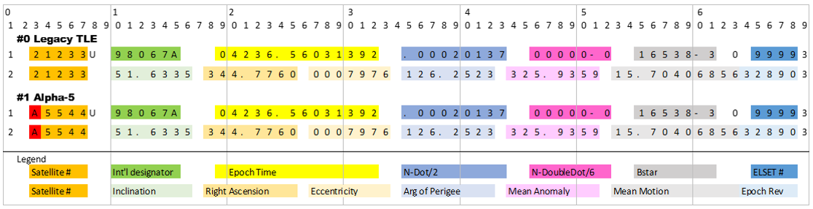

<!DOCTYPE html>
<html lang="en-US" data-darkreader-mode="dynamic" data-darkreader-scheme="dark"><head>
<meta http-equiv="content-type" content="text/html; charset=UTF-8"><style class="darkreader darkreader--fallback" media="screen"></style><style class="darkreader darkreader--user-agent" media="screen">@layer {
html {
    background-color: var(--darkreader-background-ffffff, #181a1b) !important;
}
html {
    color-scheme: dark !important;
}
iframe {
    color-scheme: dark !important;
}
html, body {
    background-color: var(--darkreader-background-ffffff, #181a1b);
}
html, body {
    border-color: var(--darkreader-border-4c4c4c, #736b5e);
    color: var(--darkreader-text-000000, #e8e6e3);
}
a {
    color: var(--darkreader-text-0040ff, #3391ff);
}
table {
    border-color: var(--darkreader-border-808080, #545b5e);
}
mark {
    color: var(--darkreader-text-000000, #e8e6e3);
}
::placeholder {
    color: var(--darkreader-text-a9a9a9, #b2aba1);
}
input:-webkit-autofill,
textarea:-webkit-autofill,
select:-webkit-autofill {
    background-color: var(--darkreader-background-faffbd, #404400) !important;
    color: var(--darkreader-text-000000, #e8e6e3) !important;
}
::selection {
    background-color: var(--darkreader-background-0060d4, #004daa) !important;
    color: var(--darkreader-text-ffffff, #e8e6e3) !important;
}
::-moz-selection {
    background-color: var(--darkreader-background-0060d4, #004daa) !important;
    color: var(--darkreader-text-ffffff, #e8e6e3) !important;
}
}</style><style class="darkreader darkreader--text" media="screen"></style><style class="darkreader darkreader--invert" media="screen">.jfk-bubble.gtx-bubble, .captcheck_answer_label > input + img, span#closed_text > img[src^="https://www.gstatic.com/images/branding/googlelogo"], span[data-href^="https://www.hcaptcha.com/"] > #icon, img.Wirisformula, a[data-testid="headerMediumLogo"]>svg, .d2l-navigation-link-image-container, .d2l-iframe-loading-container {
    filter: invert(100%) hue-rotate(180deg) contrast(90%) !important;
}</style><style class="darkreader darkreader--inline" media="screen">[data-darkreader-inline-bgcolor] {
  background-color: var(--darkreader-inline-bgcolor) !important;
}
[data-darkreader-inline-bgimage] {
  background-image: var(--darkreader-inline-bgimage) !important;
}
[data-darkreader-inline-border] {
  border-color: var(--darkreader-inline-border) !important;
}
[data-darkreader-inline-border-bottom] {
  border-bottom-color: var(--darkreader-inline-border-bottom) !important;
}
[data-darkreader-inline-border-left] {
  border-left-color: var(--darkreader-inline-border-left) !important;
}
[data-darkreader-inline-border-right] {
  border-right-color: var(--darkreader-inline-border-right) !important;
}
[data-darkreader-inline-border-top] {
  border-top-color: var(--darkreader-inline-border-top) !important;
}
[data-darkreader-inline-boxshadow] {
  box-shadow: var(--darkreader-inline-boxshadow) !important;
}
[data-darkreader-inline-color] {
  color: var(--darkreader-inline-color) !important;
}
[data-darkreader-inline-fill] {
  fill: var(--darkreader-inline-fill) !important;
}
[data-darkreader-inline-stroke] {
  stroke: var(--darkreader-inline-stroke) !important;
}
[data-darkreader-inline-outline] {
  outline-color: var(--darkreader-inline-outline) !important;
}
[data-darkreader-inline-stopcolor] {
  stop-color: var(--darkreader-inline-stopcolor) !important;
}
[data-darkreader-inline-bg] {
  background: var(--darkreader-inline-bg) !important;
}
[data-darkreader-inline-border-short] {
  border: var(--darkreader-inline-border-short) !important;
}
[data-darkreader-inline-border-bottom-short] {
  border-bottom: var(--darkreader-inline-border-bottom-short) !important;
}
[data-darkreader-inline-border-left-short] {
  border-left: var(--darkreader-inline-border-left-short) !important;
}
[data-darkreader-inline-border-right-short] {
  border-right: var(--darkreader-inline-border-right-short) !important;
}
[data-darkreader-inline-border-top-short] {
  border-top: var(--darkreader-inline-border-top-short) !important;
}
[data-darkreader-inline-invert] {
    filter: invert(100%) hue-rotate(180deg);
}</style><style class="darkreader darkreader--variables" media="screen">:root {
   --darkreader-neutral-background: var(--darkreader-background-ffffff, #181a1b);
   --darkreader-neutral-text: var(--darkreader-text-000000, #e8e6e3);
   --darkreader-selection-background: var(--darkreader-background-0060d4, #004daa);
   --darkreader-selection-text: var(--darkreader-text-ffffff, #e8e6e3);
}</style><style class="darkreader darkreader--root-vars" media="screen"></style>

    <title>Space-Track.org</title>


    <meta charset="utf-8">
    <meta http-equiv="X-UA-Compatible" content="IE=edge">
    <meta name="viewport" content="width=device-width, initial-scale=1.0">
    <meta name="description" content="Space-Track.Org">
    <meta name="keywords" content="Space, TLE, orbit, satellites, space objects">
    <meta name="author" content="SAIC admin@space-track.org">
    
    <link rel="apple-touch-icon" sizes="180x180" href="https://www.space-track.org/assets/ico/prod/apple-touch-icon.png">
    <link rel="icon" type="image/png" sizes="32x32" href="https://www.space-track.org/assets/ico/prod/favicon-32x32.png">
    <link rel="icon" type="image/png" sizes="16x16" href="https://www.space-track.org/assets/ico/prod/favicon-16x16.png">
    <link rel="icon" type="image/png" sizes="192x192" href="https://www.space-track.org/assets/ico/prod/android-chrome-192x192.png">
    <link rel="manifest" href="https://www.space-track.org/assets/ico/prod/manifest.json">
    <link rel="mask-icon" href="https://www.space-track.org/assets/ico/prod/safari-pinned-tab.svg" color="#2b5797">
    <link rel="shortcut icon" href="https://www.space-track.org/assets/ico/prod/favicon.ico?v=m2l0MBPYLl" type="image/ico">
    <meta name="apple-mobile-web-app-title" content="Space-Track">
    <meta name="application-name" content="Space-Track">
    <meta name="theme-color" content="#181a1b">    <script src="Space-Track.org_introtoAPI_files/jquery-2.1.4.min.js"></script><meta name="darkreader" content="04ed1d58268c4999b39d8804e5de330c"><style class="darkreader darkreader--override" media="screen">.vimvixen-hint {
    background-color: var(--darkreader-background-ffd76e, #684b00) !important;
    border-color: var(--darkreader-background-c59d00, #9e7e00) !important;
    color: var(--darkreader-text-302505, #d7d4cf) !important;
}
#vimvixen-console-frame {
    color-scheme: light !important;
}
::placeholder {
    opacity: 0.5 !important;
}
#edge-translate-panel-body,
.MuiTypography-body1,
.nfe-quote-text {
    color: var(--darkreader-neutral-text) !important;
}
gr-main-header {
    background-color: var(--darkreader-background-add8e6, #1b4958) !important;
}
.tou-z65h9k,
.tou-mignzq,
.tou-1b6i2ox,
.tou-lnqlqk {
    background-color: var(--darkreader-neutral-background) !important;
}
.tou-75mvi {
    background-color: var(--darkreader-background-cfecf5, #0f3a47) !important;
}
.tou-ta9e87,
.tou-1w3fhi0,
.tou-1b8t2us,
.tou-py7lfi,
.tou-1lpmd9d,
.tou-1frrtv8,
.tou-17ezmgn {
    background-color: var(--darkreader-background-f5f5f5, #1e2021) !important;
}
.tou-uknfeu {
    background-color: var(--darkreader-background-faedda, #432c09) !important;
}
.tou-6i3zyv {
    background-color: var(--darkreader-background-85c3d8, #245d70) !important;
}
div.mermaid-viewer-control-panel .btn {
    background-color: var(--darkreader-neutral-background);
    fill: var(--darkreader-neutral-text);
}
svg g rect.er {
    fill: var(--darkreader-neutral-background) !important;
}
svg g rect.er.entityBox {
    fill: var(--darkreader-neutral-background) !important;
}
svg g rect.er.attributeBoxOdd {
    fill: var(--darkreader-neutral-background) !important;
}
svg g rect.er.attributeBoxEven {
    fill: var(--darkreader-selection-background);
    fill-opacity: 0.8 !important;
}
svg rect.er.relationshipLabelBox {
    fill: var(--darkreader-neutral-background) !important;
}
svg g g.nodes rect,
svg g g.nodes polygon {
    fill: var(--darkreader-neutral-background) !important;
}
svg g rect.task {
    fill: var(--darkreader-selection-background) !important;
}
svg line.messageLine0,
svg line.messageLine1 {
    stroke: var(--darkreader-neutral-text) !important;
}
div.mermaid .actor {
    fill: var(--darkreader-neutral-background) !important;
}
mitid-authenticators-code-app > .code-app-container {
    background-color: white !important;
    padding-top: 1rem;
}
iframe#unpaywall[src$="unpaywall.html"] {
    color-scheme: light !important;
}
select {
    --darkreader-bg--form-control-background-color: rgba(22, 22, 22, 0) !important;
}
body#tumblr {
    --darkreader-bg--secondary-accent: 31, 32, 34 !important;
    --darkreader-bg--white: 23, 23, 23 !important;
    --darkreader-text--black: 228, 224, 218 !important;
}
:host {
    --d2l-border-color: var(--darkreader-bg--d2l-color-gypsum) !important;
    --d2l-button-icon-background-color-hover: var(--darkreader-bg--d2l-color-gypsum) !important;
    --d2l-color-ferrite: var(--darkreader-neutral-text) !important;
    --d2l-color-sylvite: var(--darkreader-bg--d2l-color-sylvite) !important;
    --d2l-dropdown-background-color: var(--darkreader-neutral-background) !important;
    --d2l-dropdown-border-color: var(--darkreader-border--d2l-color-mica) !important;
    --d2l-input-backgroud-color: var(--darkreader-neutral-background) !important;
    --d2l-menu-border-color: var(--darkreader-bg--d2l-color-gypsum) !important;
    --d2l-tooltip-background-color: var(--darkreader-neutral-background) !important;
    --d2l-tooltip-border-color: var(--darkreader-bg--d2l-color-gypsum) !important;
}
:host([_floating]) .d2l-floating-buttons-container {
    background-color: var(--darkreader-neutral-background) !important;
    border-top-color: var(--darkreader-border--d2l-color-mica) !important;
    opacity: 0.88 !important;
}
d2l-card {
    background: var(--darkreader-neutral-background) !important;
    border-color: var(--darkreader-border--d2l-color-gypsum) !important;
}
d2l-dropdown-content > div,
d2l-menu-item {
    background-color: var(--darkreader-neutral-background) !important;
    border-radius: 10px !important;
}
d2l-empty-state-simple {
    border-color: var(--darkreader-bg--d2l-color-gypsum) !important;
}
.d2l-button-filter > ul > li > a.vui-button {
    border-color: var(--darkreader-border--d2l-color-mica) !important;
}
.d2l-label-text:has(.d2l-button-subtle-content):hover,
.d2l-label-text:has(.d2l-button-subtle-content):focus,
.d2l-label-text:has(.d2l-button-subtle-content):active {
    background-color: var(--darkreader-bg--d2l-color-gypsum) !important;
}
.d2l-navigation-centerer {
    color: inherit !important;
}
.d2l-tabs-layout {
    border-color: var(--darkreader-border--d2l-color-gypsum) !important;
}
.d2l-input,
.d2l-calendar-date,
.d2l-htmleditor-container {
    background-color: var(--darkreader-neutral-background) !important;
}
.d2l-collapsible-panel {
    border: 1px solid var(--darkreader-border--d2l-color-mica) !important;
    border-radius: 0.4rem !important;
}
.d2l-collapsible-panel-divider {
    border-bottom: 1px solid var(--darkreader-border--d2l-color-mica) !important;
}
.d2l-w2d-flex {
    border-bottom: 2px solid var(--darkreader-border--d2l-color-mica) !important;
}
.d2l-collapsible-panel scrolled,
.d2l-collapsible-panel-header,
.d2l-w2d-collection-fixed {
    background-color: var(--darkreader-neutral-background) !important;
}
.d2l-loading-spinner-bg {
    fill: var(--darkreader-bg--d2l-color-gypsum) !important;
}
.d2l-loading-spinner-bg-stroke {
    stroke: var(--darkreader-border--d2l-color-mica) !important;
}
.d2l-loading-spinner-wrapper svg path,
.d2l-loading-spinner-wrapper svg circle {
    fill: var(--darkreader-neutral-background) !important;
}
.d2l-twopanelselector-side.d2l-twopanelselector-side-sep {
    background: var(--darkreader-bg--d2l-color-mica) !important;
}
.d2l-le-TreeAccordionItem-anchor::before {
    background: var(--darkreader-bg--d2l-color-corundum) !important;
}
embed[type="application/pdf"] { filter: invert(100%) contrast(90%); }</style>
    <script src="Space-Track.org_introtoAPI_files/bootstrap.min.js"></script>
    <script src="Space-Track.org_introtoAPI_files/bootstrap-toggle.min.js"></script>
    <script src="Space-Track.org_introtoAPI_files/st-custom.js"></script>
    <script>
        window.CSRF = {
            field: "spacetrack_csrf_token",
            value: "d58cacd82063d50d4bf82c71cef24922"
        };
        $.ajaxPrefilter(function(options, originalOptions, jqXHR){
            if (options.type.toLowerCase() === "post") {
                // initialize `data` to empty string if it does not exist
                options.data = options.data || "";

                // add leading ampersand if `data` is non-empty
                options.data += options.data?"&":"";

                // add token entry
                options.data += CSRF.field + "=" + CSRF.value;
            }
        });
    </script>


    <link href="Space-Track.org_introtoAPI_files/bootstrap.min.css" rel="stylesheet"><style class="darkreader darkreader--sync" media="screen"></style>
    <link href="Space-Track.org_introtoAPI_files/jquery.datatables.v1.10.16.min.css" rel="stylesheet"><style class="darkreader darkreader--sync" media="screen"></style>
    <link href="Space-Track.org_introtoAPI_files/bootstrap-theme.min.css" rel="stylesheet"><style class="darkreader darkreader--sync" media="screen"></style>
    <link href="Space-Track.org_introtoAPI_files/jquery.datetimepicker.min.css" rel="stylesheet"><style class="darkreader darkreader--sync" media="screen"></style>
    <link href="Space-Track.org_introtoAPI_files/st-custom.css" rel="stylesheet"><style class="darkreader darkreader--sync" media="screen"></style>
    <link href="Space-Track.org_introtoAPI_files/st-custom_002.css" rel="stylesheet"><style class="darkreader darkreader--sync" media="screen"></style>
    <link href="Space-Track.org_introtoAPI_files/bootstrap-toggle.css" rel="stylesheet"><style class="darkreader darkreader--sync" media="screen"></style>
    <link href="Space-Track.org_introtoAPI_files/jquery.datatables.select.1.3.1.min.css" rel="stylesheet"><style class="darkreader darkreader--sync" media="screen"></style></head>
<body data-spy="scroll" data-target=".subnav" data-offset="50" onload="loadDoc()">
<!-- ======================================================================
      NAV BAR
	 ====================================================================== -->
<div class="container">
    <nav class="navbar navbar-default navbar-fixed-top" role="navigation">
        <div class="container-fluid col-md-12" id="top-navbar">
            <div class="navbar-left pull-left" id="top-navbar-logo">
                <a href="https://www.space-track.org/" style="float:left;margin-right:3px;height:30px">
                    
                </a>
                <a href="https://www.space-track.org/" class="navbar-brand navPopunder" style="vertical-align: center;" data-original-title="" title="">Space-Track.org</a>
            </div>
                        <ul class="nav navbar-nav pull-right" id="top-navbar-right">
                                <li class="divider-vertical"></li>
                    <li class="dropdown" style="height: 30px;">
                        <a href="#" id="nav-uname" class="dropdown-toggle " data-toggle="dropdown-menu" data-target="#userAccountDropdown" aria-controls="userAccountDropdown">
                            tembladorjose@yahoo.com                            <b class="caret"></b>
                        </a>
                        <ul id="userAccountDropdown" class="dropdown-menu collapse font-size-14 pull-right">
                            
    <li>
        <a href="https://www.space-track.org/myprofile">
            <i class="glyphicon glyphicon-user"></i>&nbsp;My Profile
        </a>
    </li>
    <li class="divider"></li>
    <li>
        <a href="https://www.space-track.org/myprofile#changePasswordModal" class="font-size-14"><i class="glyphicon glyphicon-wrench"></i> Change Password</a>
    </li>
    <li class="divider"></li>
    <li>
        <a href="https://www.space-track.org/#favorites" class="font-size-14"><i class="glyphicon glyphicon-heart"></i> My Favorites</a>
    </li>
    <li class="divider"></li>
    <li>
        <a href="https://www.space-track.org/auth/logout" class="font-size-14"><i class="glyphicon glyphicon-log-out text-danger"></i> Logout</a>
    </li>                        </ul>
                    </li>
                            </ul>
        </div>
        <div class="container-fluid" id="top-navbar-2">
            <!-- Required bootstrap placeholder for the collapsed menu -->
            <button type="button" data-toggle="collapse" data-target=".navbar-collapse2" class="navbar-toggle collapsed">
                <span class="sr-only">Toggle navigation</span>
                <span class="icon-bar"></span>
                <span class="icon-bar"></span>
                <span class="icon-bar"></span>
            </button>
            <!-- Menu for non-collapsed state -->
			<div class="navbar-left collapse navbar-collapse">
				<ul id="mainNav" class="nav navbar-nav">
                                    <li class="dropdown dropdown-toggle">
                        <a href="https://www.space-track.org/" nav-id="https://www.space-track.org/home">
                            HOME                            <b class="caret"></b>
                        </a>
                        <ul class="dropdown-menu">
                            <li><a href="https://www.space-track.org/#/Landing" class="font-size-14">Welcome</a></li><li class="divider divider-thin"></li><li><a href="https://www.space-track.org/#/boxscore" class="font-size-14">Box Score</a></li><li class="divider divider-thin"></li><li><a href="https://www.space-track.org/#/catalog" class="font-size-14">SatCat</a></li><li class="divider divider-thin"></li><li><a href="https://www.space-track.org/#/decay" class="font-size-14">Decay/Reentry</a></li><li class="divider divider-thin"></li><li><a href="https://www.space-track.org/#/queryBuilder" class="font-size-14">Query Builder</a></li><li class="divider divider-thin"></li><li><a href="https://www.space-track.org/#/favorites" class="font-size-14">Favorites</a></li><li class="divider divider-thin"></li><li><a href="https://www.space-track.org/#/gp" class="font-size-14">ELSET Search</a></li><li class="divider divider-thin"></li><li><a href="https://www.space-track.org/#/recent" class="font-size-14">Recent ELSETs</a></li><li class="divider divider-thin"></li><li><a href="https://www.space-track.org/#/ssr" class="font-size-14">SSR</a></li><li class="divider divider-thin"></li><li><a href="https://www.space-track.org/#/conjunctions" class="font-size-14">Conjunctions</a></li><li class="divider divider-thin"></li><li><a href="https://www.space-track.org/#/publicFiles" class="font-size-14">Public Files</a></li><li class="divider divider-thin"></li><li><a href="https://www.space-track.org/#/spaceOpsTempo" class="font-size-14">Space Ops Tempo</a></li>                        </ul>
                    </li>
                                                    <li class="dropdown dropdown-toggle active">
                        <a href="https://www.space-track.org/documentation" nav-id="https://www.space-track.org/documentation">
                            HELP                            <b class="caret"></b>
                        </a>
                        <ul class="dropdown-menu">
                            <li><a href="https://www.space-track.org/documentation#/api" class="font-size-14">API</a></li><li class="divider divider-thin"></li><li><a href="https://www.space-track.org/documentation#/howto" class="font-size-14">How To</a></li><li class="divider divider-thin"></li><li><a href="https://www.space-track.org/documentation#/faq" class="font-size-14">FAQ</a></li><li class="divider divider-thin"></li><li><a href="https://www.space-track.org/documentation#/legend" class="font-size-14">Legend</a></li><li class="divider divider-thin"></li><li><a href="https://www.space-track.org/documentation#/tle" class="font-size-14">TLE Format</a></li><li class="divider divider-thin"></li><li><a href="https://www.space-track.org/documentation#/odr" class="font-size-14">Data Requests</a></li><li class="divider divider-thin"></li><li><a href="https://www.space-track.org/documentation#/lch" class="font-size-14">Laser Clearinghouse</a></li><li class="divider divider-thin"></li><li><a href="https://www.space-track.org/documentation#/sgp4" class="font-size-14">SGP4</a></li><li class="divider divider-thin"></li><li><a href="https://www.space-track.org/documentation#/user_agree" class="font-size-14">User Agreement</a></li><li class="divider divider-thin"></li><li><a href="https://www.space-track.org/documentation#/privacy" class="font-size-14">Privacy</a></li><li class="divider divider-thin"></li><li><a href="https://www.space-track.org/documentation#/contact" class="font-size-14">Contact Us</a></li>                        </ul>
                    </li>
                                                </ul>
            </div>
            <div class="nav navbar-nav pull-right st-clock-text" style="padding: 0 10px;">

                                <div class="" style="font-family: Arial, sans-serif;">
                    
<div style="display: flex; flex-direction: row">
    <div class="" id="clockContainer">
        <p class="" style="margin: 0px;"><strong class="">Current Time (UTC)&nbsp;</strong></p>
        <p class="text" style="margin: 0px;" id="timeValue">2026-04-01 02:57:20</p>
    </div>
</div>

<script type="text/javascript">
    let time;
    let incrementVal = 1;
    let enabled = true;

    async function asyncGetTime() {
        const response = await fetch( "https://www.space-track.org/time/getTime" );
        return await response.json();
    }


    function formatDate( isoDate ) {
        let returnDate = isoDate;
        const dotIndex = isoDate.indexOf( '.' );
        if ( dotIndex !== -1 ) {
            returnDate = isoDate.substring( 0, dotIndex );
        }
        return returnDate.replace( 'T', ' ' );

    }

    function incrementLocalClock() {
        if ( enabled ) {
            let date = new Date( time );
            date.setSeconds( date.getSeconds() + incrementVal );
            setLocalClock( date.toISOString() )
        }
    }

    function setLocalClock( updatedTime ) {
        time = updatedTime;
        const formattedTime = formatDate( time );
        updateClockDisplay( formattedTime );
    }

    function updateClockDisplay( formattedTime ) {
        $( "#timeValue" ).text( formattedTime );
    }

    function getTime() {
        /*********************************************************************
         * Per PT - https://www.pivotaltracker.com/story/show/186967042
         *
         * We are eliminating repeated calls to the webserver to 'refresh' the 
         * time and instead allowing the local JS to keep the clock updated.
         * 
         * This reduces/eliminates the excessive calls from the web clients
         *********************************************************************/
//        const response = asyncGetTime();
//        response.then( data => {
//            setLocalClock( data['time'] );
//        } );

        localTimeUTC = new Date().toISOString();
        setLocalClock( localTimeUTC );
    }


    $( document ).ready( function () {

        getTime();

        /*********************************************************************
         * Per PT - https://www.pivotaltracker.com/story/show/186967042
         *
         * We are eliminating repeated calls to the webserver to 'refresh' the 
         * time and instead allowing the local JS to keep the clock updated.
         * 
         * This reduces/eliminates the excessive calls from the web clients
         *********************************************************************/
        // Refresh the clock every 15 seconds with new data
        setInterval( getTime, 15000 );

        // Increment the local clock every second
        setInterval( incrementLocalClock, 1000 );
    } );
</script>
                </div>
            </div>
            <!-- Menu for collapsed state. Don't display sub-menus -->
            <div class="navbar-left collapse navbar-collapse2">
                <ul id="verticalNav" class="nav navbar-nav">
                                                <li>
                                <a href="https://www.space-track.org/">
                                    HOME                                </a>
                            </li>
                                                            <li role="separator" class="divider"></li>
                                                            <li>
                                <a href="https://www.space-track.org/documentation">
                                    HELP                                </a>
                            </li>
                                                    <li class="divider"></li>
                        
    <li>
        <a href="https://www.space-track.org/myprofile">
            <i class="glyphicon glyphicon-user"></i>&nbsp;My Profile
        </a>
    </li>
    <li class="divider"></li>
    <li>
        <a href="https://www.space-track.org/myprofile#changePasswordModal" class="font-size-14"><i class="glyphicon glyphicon-wrench"></i> Change Password</a>
    </li>
    <li class="divider"></li>
    <li>
        <a href="https://www.space-track.org/#favorites" class="font-size-14"><i class="glyphicon glyphicon-heart"></i> My Favorites</a>
    </li>
    <li class="divider"></li>
    <li>
        <a href="https://www.space-track.org/auth/logout" class="font-size-14"><i class="glyphicon glyphicon-log-out text-danger"></i> Logout</a>
    </li>                                        </ul>
            </div>
        </div>
    </nav>

</div>

<script>
    $(document).ready(function() {
        $('.navPopunder').popover({
            placement: 'bottom',
            trigger: "hover focus"
        });
        $('[rel=popover]').popover({
            placement: 'bottom',
            trigger: "click",
            html : true,
            content: function() {
                return $('#popover_content_wrapper').html();
            }
        });
        $('.docTooltip').tooltip();
        $('.docTooltipL').tooltip({
            placement: 'left'
        });

        // highlight the top-level menu item
        $('#mainNav .dropdown-menu>li>a').on("click", function(){
            $('#mainNav li.dropdown-toggle').find('.active').removeClass('active');
            $(this).parent().parent().parent().addClass("active");
        });
        $('#mainNav .dropdown-menu').hover(
            // mouse enter handler
            function(){
                // $('#mainNav li.dropdown-toggle').find('.active').removeClass('active');
                $(this).parent().addClass("top-nav-opened");
            },
            // mouse leave handler
            function(){
                $(this).parent().removeClass("top-nav-opened");
            }
        );

        // On page load get current URL path and assign 'active' class to correct top level menu item
        var pathname = window.location.pathname;
        if (pathname === '/'){
            pathname += 'home';
        }
        $('#mainNav > li > a[nav-id*="'+pathname+'"]').parent().addClass('active');
    });
</script>


<div class="container" id="help-container">
	<header id="overview">
  		<h1>Help Documentation</h1>
	</header>

	<!-- TABS LISTING -->
	<ul id="tab" class="nav nav-tabs">
		<li class="active"><a href="#api" data-toggle="tab">API</a></li>
		<li><a href="#howto" data-toggle="tab">How To</a></li>
		<li><a href="#faq" data-toggle="tab">FAQ</a></li>
		<li><a href="#legend" data-toggle="tab">Legend</a></li>
		<li><a href="#tle" data-toggle="tab">TLE Format</a></li>
        		<li><a href="#odr" data-toggle="tab">Data Requests</a></li>
		<li><a href="#lch" data-toggle="tab">Laser Clearinghouse</a></li>
            		<li><a href="#sgp4" data-toggle="tab">SGP4</a></li>		<li><a href="#user_agree" data-toggle="tab">User Agreement</a></li>
		<li><a href="#privacy" data-toggle="tab">Privacy</a></li>
		<li><a href="#contact" data-toggle="tab">Contact Us</a></li>
	</ul>
	<div id="myTabContent" class="tab-content container" style="padding:0;margin-left:0;">
		<div class="tab-pane in active" id="api">
			<section id="help-api" role="document">
    <div class="page-header">
        <h2>Introduction to the API</h2>
    </div>

    <div id="pageSubNav" class="subnav top-spacer-sm">
        
    <ul class="nav nav-pills">
            <li class=""><a href="#api-Overview">Overview</a></li>
            <li class=""><a href="#api-use-guidelines">Usage</a></li>
                            <li class=""><a href="#api-restRules">RESTful Requests</a></li>
                <li class=""><a href="#api-restRulesAPIClasses">API Classes</a></li>
                <li class=""><a href="#api-restOperators">REST Operators</a></li>
                <li class=""><a href="#api-restPredicates">REST Predicates</a></li>
                <li class=""><a href="#api-formats">Formats</a></li>
                <li class=""><a href="#api-sampleQueries">Sample Queries</a></li>
                        </ul></div>
    <br>

    <section id="api-Overview" class="anchor">
        <div class="panel panel-default panel-st-help">
            <div class="panel-heading">Overview</div>
            <div class="panel-body">
                Space-Track.org's
                <a target="_blank" href="http://en.wikipedia.org/wiki/Application_programming_interface">
                    Application Programming Interface
                </a> (API) allows users to access data on this site programmatically
                using custom, stable URLs with configurable parameters.
                This API conforms to the general principles of a design called
                <a target="_blank" href="http://en.wikipedia.org/wiki/Representational_state_transfer">
                    Representational State Transfer
                </a>
                or "REST" and is identical to the data returned in the site's
                Graphical User Interface (GUI).
                                    The API can return data in a
                    variety of machine-friendly <a href="#api-formats">formats</a>
                    to facilitate machine-to-machine communications.
                    <br><br>
                    <strong>This API is designed to replace 'screen-scraping'
                             and <a href="https://www.space-track.org/#recent">downloading bulk .zip and .txt files</a>.
                             The <a href="https://www.space-track.org/documentation#/howto">"How To" Page</a> describes
                             procedures to download only the new data since your last visit
                             and how to use tools like
                        <a target="_blank" href="http://curl.haxx.se/">cURL</a>
                             and
                        <a target="_blank" href="http://www.gnu.org/software/wget/">wget</a>
                             to retrieve data programmatically. <br><br>We also provide several
                        <a href="https://www.space-track.org/documentation#api-sampleQueries">Sample Queries</a> below as well
                             as the <a href="https://www.space-track.org/#queryBuilder">Query Builder</a> to get you started.
                    </strong>
                                    <div class="alert alert-info bold margin-top-10" style="margin-bottom:0;">
                    If you are going to develop scripts that query our API and believe that developing/testing
                    them could violate our API guidelines, please <a href="https://www.space-track.org/documentation#contact">Contact
                                                                                                                    Us</a>
                    to request access to our test server. This will enable you to develop your scripts against
                    the same API without affecting the production server.
                </div>
            </div>
        </div>
    </section>

    <section id="api-use-guidelines" class="anchor">
        <div class="panel panel-default panel-st-help panel-warning">
            <div class="panel-heading">API Use Guidelines</div>
            <div class="panel-body">
                <strong>API Throttling:</strong>
                <p>
                    Space-track is a platform primarily used by 
satellite owners/operators for spaceflight safety and throttles API use 
in order to maintain consistent performance for all users.
                    To avoid error messages, please limit your query 
frequency. Do not use multiple space-track.org user accounts 
simultaneously to circumvent our API guidelines.
                </p>
                <div class="alert alert-danger bold">Limit API queries to less
                                                      than 30 requests per 1 minute(s)
                                                      <u>and</u> 300 requests per 1 hour(s)
                </div>
                <strong>To prevent excess bandwidth costs, do not exceed the following data retrieval rates for
                         your automated scripts or your account may be suspended:</strong>
                <table class="table table-condensed table-bordered table-striped">
                    <thead>
                    <tr>
                        <th>Type</th>
                        <th>Frequency</th>
                        <th>Details</th>
                    </tr>
                    </thead>
                    <tbody>
                    <tr>
                        <td><a target="_blank" href="https://www.space-track.org/basicspacedata/query/class/decay/MSG_EPOCH/%3Enow-8/source/60day_msg/format/html/emptyresult/show">60-DAY DECAY</a></td>
                        <td>&nbsp;1&nbsp;/&nbsp;week</td>
                        <td>Once per week, on Wednesdays after 1700 (UTC), for 60-Day Decay predication data</td>
                    </tr>
                    <tr>
                        <td><a href="#api-basicSpaceDataBoxscore">BOXSCORE</a></td>
                        <td>&nbsp;1&nbsp;/&nbsp;day</td>
                        <td>Once per day after 1700 (UTC) for Box Score data</td>
                    </tr>
                    <tr>
                        <td><a href="#api-expandedSpaceDataCdm">CDM</a></td>
                        <td>&nbsp;3&nbsp;/&nbsp;day</td>
                        <td>Once every 8 hours for all constellation Conjunction Data Messages (CDM)</td>
                    </tr>
                    <tr>
                        <td><a href="#api-expandedSpaceDataCdm">CDM</a></td>
                        <td>&nbsp;1&nbsp;/&nbsp;hour</td>
                        <td>Once every hour for a specific conjunction event (Note: The 18 SDS will continue
                             to send Close Approach (CA) emails to satellite owners/operators)
                        </td>
                    </tr>
                    <tr>
                        <td><a href="#api-basicSpaceDataDecay">DECAY</a></td>
                        <td>&nbsp;1&nbsp;/&nbsp;day</td>
                        <td>Once you download an object's decay history, you need to store it on your own servers; do not download it again. 
                        If checking once per day, add "/MSG_EPOCH/%3Enow-1/" to retrieve current messages only.
                        </td>
                    </tr> 
                    <tr>
                        <td><a href="#api-fileshareDownload">Files Panel</a></td>
                        <td>&nbsp;1&nbsp;/&nbsp;lifetime</td>
                        <td>Best practice is to limit your file downloads to no more than 50 files <u>and</u> 50MB per request.&nbsp; 
                        Once you download a file, you need to store it on your own servers, not download it again.</td>
                    </tr>                                            
                    <tr>
                        <td><a href="#api-basicSpaceDataGp">GP</a> (aka TLEs)</td>
                        <td>&nbsp;1&nbsp;/&nbsp;hour</td>
                        <td>Once every hour for TLEs. Please randomly 
choose a minute that is not at the top or bottom 
                             of the hour for your hourly scripts to send
 this query. Add "/decay_date/null-val/epoch/%3Enow-10/" 
                             to the URL to ensure that you only retrieve
 propagable ephemerides for on-orbit objects. 
                             See more about <a href="#api-basicSpaceDataGp">the GP class</a>.
                        </td>
                    </tr>
                    <tr>
                        <td><a href="#api-basicSpaceDataGpHistory">GP_HISTORY</a></td>
                        <td>&nbsp;1&nbsp;/&nbsp;lifetime</td>
                        <td><strong>Do NOT use this class to retrieve current ephemerides</strong>; use <a href="#api-basicSpaceDataGp">the GP class</a>. 
                            For queries of many objects or large date ranges, download TLEs bundled as zip 
                        files by year from 
                        <a target="_blank" href="https://ln5.sync.com/dl/afd354190/c5cd2q72-a5qjzp4q-nbjdiqkr-cenajuqu">
                           our cloud storage site 
                        </a> instead. Once you download an object's history, you need to store it on your own servers; do not download it again. 
                        </td>
                    </tr>
                    <tr>
                        <td><a href="#api-publicFilesDownloadGet">Public Files</a></td>
                        <td>&nbsp;3&nbsp;/&nbsp;day</td>
                        <td>Once every 8 hours. Moderate your activity; do not download more than 10 files per 15 minutes</td>
                    </tr>                    
                    <tr>
                        <td><a href="#api-basicSpaceDataSatcat">SATCAT</a></td>
                        <td>&nbsp;1&nbsp;/&nbsp;day</td>
                        <td>Once per day after 1700 (UTC) for SATCAT data. Follow <a href="#api-basicSpaceDataSatcat">best practices for 
                             downloading SATCAT</a> daily</td>
                    </tr>
                    <tr>
                        <td><a href="#api-basicSpaceDataSatcatDebut">SATCAT_DEBUT</a></td>
                        <td>&nbsp;1&nbsp;/&nbsp;day</td>
                        <td>Once per day after 1700 (UTC) for SATCAT 
data
                        If checking once per day, add "/DEBUT/%3Enow-1/"
 to retrieve objects added to the catalog since yesterday.
                        </td>
                    </tr>
                    <tr>
                        <td><a href="#api-basicSpaceDataTip">TIP</a></td>
                        <td>&nbsp;1&nbsp;/&nbsp;hour</td>
                        <td>If checking once per hour, add "/INSERT_EPOCH/%3Enow-0.042/" to the URL
                             to limit your query to TIPs received since you last checked. 
                        <br>If a particular object is re-entering within 12 hours, you may query the TIP class
                         once every 10 minutes until the final TIP arrives. Add "/INSERT_EPOCH/%3Enow-0.005/" 
                         </td>
                    </tr>
                    </tbody>
                </table>
                <p>
                    <strong>Retrieval Strategy:</strong><br>
                    Do not send hundreds of individual /class/gp/ or 
/class/satcat/ queries to space-track.org with 
                    one request per satellite. Instead, use the API as 
efficiently as possible to minimuze the number of requests, 
                    combining queries for multiple objects using a 
comma-delimited list where appropriate. <br>
                    See <a href="#api-restOperators">REST Operators</a> for more on comma-delimited lists.
                </p>
                <p>
                    <strong>With great power comes great responsibility...</strong><br>
                    The API Query Builder tool allows users a great amount of power and flexibility in creating
                    queries. Your space-track account may be suspended if you violate the usage policy by querying
                    data too often or by running queries that negatively impact the performance of the website.
                    Repeat offenders may have their account suspended permanently.
                </p>
                <p>
                    If your account has been suspended you should receive instructions from us on what you need
                    to do in order to have your account re-instated.
                </p>
                <p>
                    <strong>We're here to help...</strong><br>
                    We realize that it can sometimes be challenging to use our API to craft an efficient query to
                    retrieve the data that you're looking for. Rest assured that we're here to help you! If you
                    <a href="https://www.space-track.org/documentation#contact">Contact Us</a> and tell us what you are trying
                    to accomplish, we can help you customize your queries to meet your needs.
                </p>
            </div>
        </div>
    </section>
            <a href="#"><i class="glyphicon glyphicon-arrow-up"></i> Back to top</a>
        <hr class="margin-bottom-30">
        <!--<section id="Login">
	<div class="page-header">
	<h1>Login To The API</h1>
	</div>
	<div class="row">
		<div class="span12">
			<h4>
			Space-Track.Org will continue to use encrypted cookies as a means of session handling.<br/>
			There are now two ways to obtain the session cookie:
			</h4>
			<br/>
		<div class="well" style="padding:8px 0px">
		<b>
		<ol>
			<li>
				Login using a web interface: <br/>

					<a href="https://www.space-track.org/auth/login">
						https://www.space-track.org/auth/login
					</a>
				<hr/>
			</li>
			<li>
				Login by sending a HTTP POST request('identity=your_username&password=your_password') to: <br/>
				<a href="https://www.space-track.org/ajaxauth/login">
						https://www.space-track.org/ajaxauth/login
					</a>
			</li>
		</ol>
		</b>
		</div>
		<div class="well">
			<h3>Example Using cURL:</h3>
			<div style="text-align: center;font-weight: bold;font-size:1em;padding:10px 0px 0px 0px">
		<h4>curl -c cookies.txt -b cookies.txt -k https://beta.space-track.org/ajaxauth/login -d 'identity=myusername&password=mYp@$$w0rd'</h4>
			</div>
		</div>
			<hr/>
		<div class="marginContainer alertalert-info">
			<h4>
				NOTE: The current name of the session cookie is
				"<i id="session_cookie_name">chocolatechip</i>",
				though this can change.  Check this page for updates.
			</h4>
		</div>
	</div>
	</div>
</section>	-->
        <section id="api-restRules" class="anchor">
            <div class="panel panel-default panel-st-help">
                <div class="panel-heading">RESTful Request Rules</div>
                <div class="panel-body">
                    The API works by building a URL like the following:
                    <br><br>
                    https://www.space-track.org/basicspacedata/query/class/boxscore/
                    <br><br>
                    <ul class="explainURL">
                        <li title="Base URL">
                            Base: URL: <strong>https://www.space-track.org/</strong>
                        </li>
                        <li title="Request Controller">
                            Request Controller: <strong>basicspacedata</strong>
                        </li>
                        <li title="Request Action">
                            Request Action: <strong>query</strong>
                        </li>
                        <li title="Predicate Value Pairs">
                            Predicate Value Pairs: <strong>class/boxscore/</strong>
                        </li>
                    </ul>

                    The Base URL will always be the URL that you use to access the site (ex. https://www.space-track.org/).
                    Following are tables with options for the rest of the sections.

                    <h3>Request Controllers</h3>
                    <table class="table table-striped table-bordered">
                        <thead>
                        <tr>
                            <th>Controller Name</th>
                            <th>Description</th>
                        </tr>
                        </thead>
                        <tbody>
                        <tr>
                            <td><h4>basicspacedata</h4></td>
                            <td>This controller is for data made available to all site members upon
                                 successful completion of account creation.
                            </td>
                        </tr>
                        <tr>
                            <td><h4>expandedspacedata</h4></td>
                            <td>This controller is for data provided in response to Orbital Data Requests
                                 (ODR), as well as data made available through USSPACECOM SSA Sharing Agreements.
                            </td>
                        </tr>
                        <tr>
                            <td><h4>fileshare</h4></td>
                            <td>Provides API access to files hosted on Space-Track's Files Panel. (permission
                                 controlled)
                            </td>
                        </tr>
                        <tr>
                            <td><h4>eventsdata</h4></td>
                            <td>Provides API access to data available on the Events Panel. (permission controlled)</td>
                        </tr>
                        <tr>
                            <td><h4>publicfiles</h4></td>
                            <td> Provides API Access to public files data hosted on Space-Track's Home Panel.</td>
                        </tr>
                        </tbody>
                    </table>


                    <h3>Request Actions</h3>
                    <table class="table table-striped table-bordered">
                        <thead>
                        <tr>
                            <th>Action Name</th>
                            <th>Description</th>
                            <th>Required REST Predicates</th>
                        </tr>
                        </thead>
                        <tbody>
                        <tr>
                            <td><h4>query</h4></td>
                            <td>
                                This action is used to query data using the rest of the URL parameters.
                            </td>
                            <td>
                                <h4>class</h4>
                            </td>
                        </tr>
                        <tr>
                            <td><h4>modeldef</h4></td>
                            <td>
                                This action is used for getting the specified class's
                                data definition, particularly a list of valid predicates
                                <strong>DO NOT query the model definition for an API class before every API call.</strong>
                                Model definitions do not change 
frequently, so only query the modeldef once at the start of a script's 
run.
                            </td>
                            <td>
                                <h4>class</h4>
                            </td>
                        </tr>
                        </tbody>
                    </table>
                    <section id="api-restRulesAPIClasses" class="anchor">
                        <h3>Request Classes <small>(Click The Class Name To See Description)</small></h3>
                        
<section class="anchor" id="api-restRulesAPIClasses">
    
<section>
    <div class="panel panel-transparent">
        <div class="panel-heading">
            <div class="st-copy-link">
                <h3>basicspacedata </h3>
                <span class="pad-left-sm pad-right-sm"><p>|</p></span>
                <a title="Copy link!" class="st-glyphicon-link" id="api-basicSpaceData">
                    <span class="glyphicon glyphicon-link"></span>
                </a>
            </div>
        </div>
        <div class="panel-body">
            <table class="table table-striped table-bordered">
                <thead>
                <tr>
                    <th>Class Name</th>
                    <th>Description</th>
                </tr>
                </thead>
                <tbody>
                <tr>
                    <td>
                        <div class="st-copy-link">
                        <h4>
                            <a target="_blank" href="https://www.space-track.org/basicspacedata/modeldef/class/announcement/format/html">
                                announcement
                            </a>
                        </h4>
                            <span class="pad-left-sm pad-right-sm">
                                <p>|</p>
                            </span>
                            <a title="Copy link!" class="st-glyphicon-link" id="api-basicSpaceDataAnnouncement">
                                <span class="glyphicon glyphicon-link"></span>
                            </a>
                        </div>
                    </td>
                    <td>
                        Provides API access to the current announcements on the website.
                    </td>
                </tr>
                <tr>
                    <td>
                        <div class="st-copy-link">

                            <h4>
                                <a target="_blank" href="https://www.space-track.org/basicspacedata/modeldef/class/boxscore/format/html">
                                    boxscore
                                </a>
                            </h4>
                            <span class="pad-left-sm pad-right-sm">
                                <p>|</p>
                            </span>
                            <a title="Copy link!" class="st-glyphicon-link" id="api-basicSpaceDataBoxscore">
                                <span class="glyphicon glyphicon-link"></span>
                            </a>
                        </div>
                    </td>
                    <td>
                        Accounting of man-made objects that have been or are in orbit.
                        Derived from satellite catalog and grouped by country/organization.
                    </td>
                </tr>
                <tr>
                    <td>
                        <div class="st-copy-link">

                            <h4>
                                <a target="_blank" href="https://www.space-track.org/basicspacedata/modeldef/class/cdm_public/format/html">
                                    cdm_public
                                </a>
                            </h4>
                            <span class="pad-left-sm pad-right-sm">
                                <p>|</p>
                            </span>
                            <a title="Copy link!" class="st-glyphicon-link" id="api-basicSpaceDataCdmPublic">
                                <span class="glyphicon glyphicon-link"></span>
                            </a>
                        </div>
                    </td>
                    <td>
                        Publicly available Conjunction Data<br>
                        For a detailed understanding of the subset of available fields, please refer to the
                        Conjunction Data Message (CDM)
                        <a target="_blank" href="https://public.ccsds.org/Pubs/508x0b1e2c2.pdf"> CCSDS Recommended Standard
                                                                                  508.0-B-1</a><br>
                        <ul>
                            <li>CREATED is the time that the CDM was generated
                                 at 18 SDS. Add "/CREATED/&gt;now-1" to your URL when checking daily.</li>
                            <li>TCA is the predicted time of closest approach</li>
                        </ul>
                    </td>
                </tr>
                <tr>
                    <td>
                        <div class="st-copy-link">
                        <h4>
                            <a target="_blank" href="https://www.space-track.org/basicspacedata/modeldef/class/decay/format/html">
                                decay
                            </a>
                        </h4>
                            <span class="pad-left-sm pad-right-sm">
                                <p>|</p>
                            </span>
                            <a title="Copy link!" class="st-glyphicon-link" id="api-basicSpaceDataDecay">
                                <span class="glyphicon glyphicon-link"></span>
                            </a>
                        </div>
                    </td>
                    <td>
                        Predicted and historical decay information. <br>
                        The PRECEDENCE column indicates what stage of the decay lifecycle
                        the record represents and "counts down" to the most recent data: <br>
                        4 = 60 day decay message, the first indication that an object is predicted to
                        decay<br>
                        3 = Tracking and Impact Prediction (TIP) message predicts the decay of some
                        objects<br>
                        2 = Decay message specifically announces that the object has decayed<br>
                        1 = The satellite catalog's most recent decay date, updated after the object decayed<br><br>
                        <i><strong>Note</strong>: Objects may not have records of all 4 stages. Multiple
                                                   records are
                                                   possible for each object.</i>
                    </td>
                </tr>
                <tr>
                    <td>
                        <div class="st-copy-link">
                        <h4>
                            <a target="_blank" href="https://www.space-track.org/basicspacedata/modeldef/class/gp/format/html">
                                gp
                            </a>
                        </h4>
                            <span class="pad-left-sm pad-right-sm">
                                <p>|</p>
                            </span>
                            <a title="Copy link!" class="st-glyphicon-link" id="api-basicSpaceDataGp">
                                <span class="glyphicon glyphicon-link"></span>
                            </a>
                        </div>
                    </td>
                    <td>
                        The general perturbations (GP) class is an efficient listing of the newest SGP4
                        keplerian element set
                        for each man-made earth-orbiting object tracked by the 18th Space Defense Squadron.
                        It is designed to accommodate the expanded satellite catalog’s 9-digit identifiers.
                        Users can return data in the CCSDS flexible Orbit Mean-Elements Message (OMM) format
                        in canonical XML/KVN, JSON, CSV, or HTML.
                        <br>
                        All 5 of these formats use the same keywords and definitions for OMM as provided in
                        the Orbit Data Messages (ODM)
                        <a target="_blank" href="https://public.ccsds.org/Pubs/502x0b3e1.pdf">CCSDS Recommended Standard 502.0-B-3</a>
                        <br>
                        <br>
                        Per API guidelines, fetch the latest TLEs no 
more than once per hour using the following query. 
                        It is optimized for speed and bandwidth. To 
avoid busy periods, time your scripts to execute this 
                        query between 10-20 minutes before or after the 
hour. For example, 09:19/09:48 is ok, but 09:00/09:30 is not...
                        <br>
                        <ul>
                            <li>
                                <a href="https://www.space-track.org/basicspacedata/query/class/gp/decay_date/null-val/CREATION_DATE/%3Enow-0.042/format/tle" target="_blank">
                                    
https://www.space-track.org/basicspacedata/query/class/gp/decay_date/
null-val/CREATION_DATE/%3Enow-0.042/format/tle
                                </a>
                            </li>
                        </ul>
                        <br>
                        <br>
                        The recommended URL for a one-time retrieval of the newest propagable element set for all
                        on-orbit objects (slower &amp; uses more bandwidth) is:
                        <br>
                        <ul>
                            <li>
                                <a href="https://www.space-track.org/basicspacedata/query/class/gp/decay_date/null-val/epoch/%3Enow-10/format/json" target="_blank">
                                    
https://www.space-track.org/basicspacedata/query/class/gp/decay_date/
null-val/epoch/%3Enow-10/format/tle
                                </a>
                            </li>
                        </ul>
                        <br>
                        <br>
                        Select catalog numbers below 100,000 are also available in the legacy fixed-width
                        TLE or 3LE format.
                        While the <a href="https://www.space-track.org/documentation#/tle-alpha5" target="_blank">Alpha-5</a>
                        schema extends the range that the TLE format supports to include numbers up to
                        339,999, <a href="https://www.space-track.org/">Space-Track.org</a> and
                        <a href="http://celestrak.org/" target="_blank">Celestrak.org</a> recommend that
                        developers migrate their
                        software to use the OMM standard for all GP ephemerides.
                        Please see the <a href="https://www.space-track.org/documentation#/tle-alpha5" target="_blank">Alpha-5 documentation</a> for more on this.
                        <br>
                        <br>
                        This class also allows for expanded elset filtering based on additional object
                        metadata from the satellite catalog like:<br>
                        <ul>
                            <li>radar cross section (RCS_SIZE): Small, Medium, Large</li>
                            <li>object type (OBJECT_TYPE): Payload, Rocket Body, Debris, Unknown</li>
                            <li>launch site (SITE)</li>
                            <li>launch date (LAUNCH_DATE)</li>
                            <li>decay date (DECAY_DATE)</li>
                            <li>country code (COUNTRY_CODE)</li>
                            <li>file identifier for groups uploaded together (FILE)</li>
                            <li>unique ephemerides identifier (GP_ID)</li>
                        </ul>
                        ... if such values exist for the object. Note that many analyst satellite objects'
                        catalog numbers in the 70K - 99K range do not have much metadata.<br>
                        <br>
                        Please see all available columns for filtering by viewing the <a href="https://www.space-track.org/basicspacedata/modeldef/class/gp/format/html" target="_blank">gp class's model definition</a>.<br>
                        <br>
                        <strong><i>Note:</i></strong><i> Queries made in HTML, JSON, and CSV will contain the
                        TLE lines as fields (TLE_LINE0, TLE_LINE1, TLE_LINE2).
                        The OMM (XML/KVN) formats <strong>do not</strong> contain these fields in order to
                        save space and eliminate redundancy.</i>
                    </td>

                </tr>
                <tr>
                    <td>
                        <div class="st-copy-link">
                        <h4>
                            <a target="_blank" href="https://www.space-track.org/basicspacedata/modeldef/class/gp_history/format/html">
                                gp_history
                            </a>
                        </h4>
                            <span class="pad-left-sm pad-right-sm">
                                <p>|</p>
                            </span>
                            <a title="Copy link!" class="st-glyphicon-link" id="api-basicSpaceDataGpHistory">
                                <span class="glyphicon glyphicon-link"></span>
                            </a>
                        </div>
                    </td>
                    <td>
                        Listing of <strong>ALL</strong> historical SGP4 keplerian element sets for
                        each man-made earth-orbiting object published by 18th Space Defense Squadron. 
                        <strong>Do NOT use this class to retrieve current ephemerides</strong>; use <a href="#api-basicSpaceDataGp">the GP class</a>.
 
                        There are over 220 million records in this class
 and it is for limited ad-hoc, one-time historical queries. 
                        If you need the entire TLE history for all 
objects or large date ranges, download TLEs bundled as zip 
                        files by year from 
                        <a target="_blank" href="https://ln5.sync.com/dl/afd354190/c5cd2q72-a5qjzp4q-nbjdiqkr-cenajuqu">
                           our cloud storage site 
                        </a> instead.
                        <br>
                        <br>
                        <i><strong>NOTE:</strong> Access to this archival data is significantly slower
                                                     than normal GP class data retrieval.
                                                     Queries made in HTML, JSON, and CSV will contain the
                                                     TLE lines as fields (TLE_LINE0, TLE_LINE1, TLE_LINE2).
                                                     The OMM (XML/KVN) formats <strong>do not</strong>
                                                     contain these fields in order to save space and
                                                     eliminate redundancy.</i>
                        <br>
                        <br>
                        <div class="well well-sm">
                            <span class="text-muted">
                              With such a large dataset in gp_history, you are strongly advised to limit 
                              your queries by a comma-delimited list of NORAD_CAT_IDs <u>AND</u> 
                              a short epoch range such as "/epoch/2026-01-01--2026-01-03/" to avoid 
                              "Query range out of bounds" errors.
                            </span>
                        </div>
                    </td>
                </tr>
                <tr>
                    <td>
                        <div class="st-copy-link">
                        <h4>
                            <a target="_blank" href="https://www.space-track.org/basicspacedata/modeldef/class/launch_site/format/html">
                                launch_site
                            </a>
                        </h4>
                            <span class="pad-left-sm pad-right-sm">
                                <p>|</p>
                            </span>
                            <a title="Copy link!" class="st-glyphicon-link" id="api-basicSpaceDataLaunchSite">
                                <span class="glyphicon glyphicon-link"></span>
                            </a>
                        </div>
                    </td>
                    <td>
                        List of launch sites found in satellite catalog records.
                    </td>
                </tr>
                <tr>
                    <td>
                        <div class="st-copy-link">
                        <h4>
                                omm
                        </h4>
                        </div>
                    </td>
                    <td>
                        <span class="text-warning">(Removed)</span><br>
                        Instead, use <a href="#api-basicSpaceDataGp">the GP class</a> with "/format/xml/" for OMM format
                    </td>
                </tr>
                <tr>
                    <td>
                        <div class="st-copy-link">
                        <h4>
                            <a target="_blank" href="https://www.space-track.org/basicspacedata/modeldef/class/satcat/format/html">
                                satcat
                            </a>
                        </h4>
                            <span class="pad-left-sm pad-right-sm">
                                <p>|</p>
                            </span>
                            <a title="Copy link!" class="st-glyphicon-link" id="api-basicSpaceDataSatcat">
                                <span class="glyphicon glyphicon-link"></span>
                            </a>
                        </div>
                    </td>
                    <td>
                        Space-Track.org is the authoritative USSPACECOM outlet for unclassified SDA data and this 
                        class is the authoritative Satellite Catalog (SATCAT). 
                        <br>
                        <br>
                        <strong>Follow our <a href="#api-use-guidelines">API Guidelines</a>: only access the SATCAT API once per day</strong>
                        <br>
                        <br>
                        Best practice for downloading SATCAT Daily:   <br>
                        Download only the 15% of records that have 
changed since 18 SDS 
                        uploaded the previous day's SATCAT file, saving 
significant time and bandwidth.  
                        Use the "/file/{number}" key/value pair to 
retrieve only the records from the current day's SATCAT file upload.
                        If yesterday's records were from file 9250, then
 use this URL today after the daily upload around 1700(UTC): 
                        <br>
                        https://www.space-track.org/basicspacedata/query/class/satcat/file/&gt;9250
                        <br>
                        <br>
                        Status Code (COMMENTCODE field) Definitions: (blank=no status)
                        1: Satellite lost less than 1 year ago
                        2: Satellite deleted from the system
                        3: Satellite lost greater than 1 year ago
                        4: Satellite administratively decayed
                        5: No history exists for the satellite
                        <br>
                        <br>
                        The vestigial "CURRENT" predicate indicates the most current catalog record with a 'Y'; 
                        all valid records in this class now have 'Y' value.
                    </td>
                </tr>
                <tr>
                    <td>
                        <div class="st-copy-link">
                        <h4>
                            <a target="_blank" href="https://www.space-track.org/basicspacedata/modeldef/class/satcat_change/format/html">
                                satcat_change
                            </a>
                        </h4>
                            <span class="pad-left-sm pad-right-sm">
                                <p>|</p>
                            </span>
                            <a title="Copy link!" class="st-glyphicon-link" id="api-basicSpaceDataSatcatChange">
                                <span class="glyphicon glyphicon-link"></span>
                            </a>
                        </div>
                    </td>
                    <td>
                        ~60 days of history showing changes for objects with
                        changes in one of these values: INTLDES, NORAD_CAT_ID, SATNAME,
                        COUNTRY, LAUNCH, or DECAY.
                    </td>
                </tr>
                <tr>
                    <td>
                        <div class="st-copy-link">

                        <h4>
                            <a target="_blank" href="https://www.space-track.org/basicspacedata/modeldef/class/satcat_debut/format/html">
                                satcat_debut
                            </a>
                        </h4>
                            <span class="pad-left-sm pad-right-sm">
                                <p>|</p>
                            </span>
                            <a title="Copy link!" class="st-glyphicon-link" id="api-basicSpaceDataSatcatDebut">
                                <span class="glyphicon glyphicon-link"></span>
                            </a>
                        </div>
                    </td>
                    <td>
                        Shows new records added to the Satellite Catalog.
                        DEBUT predicate shows the date/time that the object was
                        first added to Space-Track's catalog.
                    </td>
                </tr>
                <tr>
                    <td>
                        <div class="st-copy-link">
                            <h4>
                            <a target="_blank" href="https://www.space-track.org/basicspacedata/modeldef/class/tip/format/html">
                                tip
                            </a>
                        </h4>
                            <span class="pad-left-sm pad-right-sm">
                                <p>|</p>
                            </span>
                            <a title="Copy link!" class="st-glyphicon-link" id="api-basicSpaceDataTip">
                                <span class="glyphicon glyphicon-link"></span>
                            </a>
                        </div>
                    </td>
                    <td>
                        Tracking and Impact Prediction (TIP) Message: nominally
                        distributed at daily intervals beginning four days prior to
                        selected object's decay and several times during the final
                        24 hours in orbit. Data elements:<br>
                        <ul>
                            <li>MSG_EPOCH: When 18 SDS generated the message</li>
                            <li>INSERT_EPOCH: When TIP entered space-track's database</li>
                            <li>DECAY_EPOCH: Predicted time of reentry (all times UTC)</li>
                            <li>WINDOW: ~ 95% probability object will reenter +/- {WINDOW} minutes of DECAY_EPOCH</li>
                            <li>REV: Revolution # at reentry.</li>
                            <li>DIRECTION: at reentry; ascending=south to north, descending=north to south</li>
                            <li>LAT: latitude; positive value if in a north latitude, negative if south latitude</li>
                            <li>LON: longitude expressed in "east" only (0-360)</li>
                            <li>INCL: Inclination</li>
                            <li>NEXT_REPORT: number of hours until the next required message will be run</li>
                            <li>ID: Auto-generated; unique identifier for each TIP message </li>
                            <li>HIGH_INTEREST: 18 SDS determines (Y/N)</li>
                            <li>OBJECT_NUMBER=NORAD_CAT_ID</li>
                        </ul>
                        <strong>NOTE:</strong> LAT / LON
                        values show the location on earth, 10Km above which an object is
                        predicted to pass through at DECAY EPOCH (+/- {WINDOW}), not the
                        predicted Earth impact location. 
                    </td>
                </tr>
                <tr>
                    <td>
                        <div class="st-copy-link">
                        <h4>
                                tle
                        </h4>
                        </div>
                    </td>
                    <td>
                        <span class="text-warning">(Removed)</span><br>
                        Instead, use <a href="#api-basicSpaceDataGp">the GP class</a> with "/format/tle/"
                    </td>
                </tr>
                <tr>
                    <td>
                        <div class="st-copy-link">
                        <h4>
                                tle_latest
                        </h4>
                        </div>
                    </td>
                    <td>
                        <span class="text-warning">(Removed)</span><br>
                        Instead, use <a href="#api-basicSpaceDataGp">the GP class</a> with "/format/tle/"
                    </td>
                </tr>
                <tr>
                    <td>
                        <div class="st-copy-link">
                        <h4>
                                tle_publish
                        </h4>
                        </div>
                    </td>
                    <td>
                        <span class="text-warning">(Removed)</span><br>
                        Instead, use <a href="#api-basicSpaceDataGp">the GP class</a> with "CREATION_DATE/&gt;now-1/format/tle/"
                    </td>
                </tr>
                </tbody>
            </table>
        </div>
    </div>
</section>

<section>
    <div class="panel panel-transparent">
        <div class="panel-heading">
            <div class="st-copy-link">
                <h3>publicfiles </h3>
                <span class="pad-left-sm pad-right-sm"><p>|</p></span>
                <a title="Copy link!" class="st-glyphicon-link" id="api-publicFiles">
                    <span class="glyphicon glyphicon-link"></span>
                </a>
            </div>
        </div>
        <div class="panel-body">
            <table class="table table-striped table-bordered">
                <thead>
                <tr>
                    <th>Class Name</th>
                    <th>Description</th>
                </tr>
                </thead>
                <tbody>
                <tr>
                    <td>
                        <div class="st-copy-link ">
                            <h4>
                            dirs
                        </h4>
                            <span class="pad-left-sm pad-right-sm">
                                <p>|</p>
                            </span>
                            <a title="Copy link!" class="st-glyphicon-link glyphicon" id="api-publicFilesDirs">
                                <span class="glyphicon glyphicon-link"></span>
                            </a>
                        </div>
                    </td>
                    <td>
                        <div>
                            <div class="st-copy-link ">
                                <strong><span class="alert-success st-http-method-tag">GET</span></strong>
                                <span class="pad-left-sm pad-right-sm">
                                    <p>|</p>
                                </span>
                                <div title="Copy link!">
                                    <a class="st-glyphicon-link" id="api-publicFilesDirsGet">
                                        <span class="glyphicon glyphicon-link"></span>
                                    </a>
                                </div>
                            </div>
                            <br>
                            <p>
                                Get a list of the directories that contain Public Files.
                                <a href="https://www.space-track.org/publicfiles/query/class/dirs" target="_blank">https://www.space-track.org/publicfiles/query/class/dirs</a>
                            </p>
                        </div>
                    </td>
                </tr>
                <tr>
                    <td>
                        <div class="st-copy-link">
                            <h4>
                                download
                            </h4>
                            <span class="pad-left-sm pad-right-sm">
                                <p>|</p>
                            </span>
                            <div title="Copy link!">
                                <a class="st-glyphicon-link" id="api-publicFilesDownload">
                                    <span class="glyphicon glyphicon-link"></span>
                                </a>
                            </div>
                        </div>
                    </td>
                    <td>
                        <div>
                            <div class="st-copy-link">
                            <strong><span class="alert-success st-http-method-tag">GET</span></strong>
                                <span class="pad-left-sm pad-right-sm">
                                    <p>|</p>
                                </span>
                                <a title="Copy link!" class="st-glyphicon-link" id="api-publicFilesDownloadGet">
                                    <span class="glyphicon glyphicon-link"></span>
                                </a>
                            </div>
                            <br>
                            <p>
                                Download a Public Data File. <br>
                                Arguments:
                            </p>
                            <ul>
                                <li>
                                    <strong>name <span class="text-danger">( Required )</span></strong>
                                    <ul>
                                        <li>The name of a single file to download.</li>
                                    </ul>
                                </li>
                            </ul>

                            <p>Example: https://www.space-track.org/                                publicfiles/query/class/download?name=FILENAME.TXT </p>
                        </div>
                    </td>
                </tr>
                <tr>
                    <td>
                        <div class="st-copy-link">
                            <h4>
                                files
                            </h4>
                            <span class="pad-left-sm pad-right-sm">
                                <p>|</p>
                            </span>
                            <a title="Copy link!" class="st-glyphicon-link" id="api-publicFilesFiles">
                                <span class="glyphicon glyphicon-link"></span>
                            </a>
                        </div>
                    </td>
                    <td>
                        <div>
                            <div class="st-copy-link">
                                <strong><span class="alert-success st-http-method-tag">GET</span></strong>
                                <span class="pad-left-sm pad-right-sm">
                                    <p>|</p>
                                </span>
                                <a title="Copy Link!" class="st-glyphicon-link" id="api-publicFilesFilesGet">
                                    <span class="glyphicon glyphicon-link"></span>
                                </a>
                            </div>
                            <br>
                            <p>
                                Get a list of the Public Files that are available for download. Anyone
                                with a space-track account can download these files.
                                <a href="https://www.space-track.org/publicfiles/query/class/files" target="_blank">https://www.space-track.org/publicfiles/query/class/files</a>
                            </p>
                        </div>
                    </td>
                </tr>
                <tr>
                    <td>
                        <div class="st-copy-link">

                            <h4>loadpublicdata</h4>
                            <span class="pad-left-sm pad-right-sm">
                                <p>|</p>
                            </span>
                            <a title="Copy link!" class="st-glyphicon-link" id="api-publicFilesLoadPublicData">
                                <span class="glyphicon glyphicon-link"></span>
                            </a>
                        </div>
                    </td>
                    <td>
                        <div>
                            <div class="st-copy-link">
                            <strong><span class="alert-success st-http-method-tag">GET</span></strong>
                                <span class="pad-left-sm pad-right-sm">
                                <p>|</p>
                            </span>
                                <a title="Copy link!" class="st-glyphicon-link" id="api-publicFilesLoadPublicDataGet">
                                    <span class="glyphicon glyphicon-link"></span>
                                </a>
                            </div>

                            <ul style="list-style-type: none">
                                <li>Public data files are archives of files designed to be downloaded by
                                     the public.
                                </li>
                                <li>Large sets of data are broken into smaller chunks to make it easier to
                                     download. Each file will have the part number appended to the end of
                                     the file name.
                                </li>
                                <li><strong> <u>Source</u> - </strong> source of the data.</li>
                                <li><strong> <u>Type</u> - </strong> type of data stored in the file.
                                                                          Can be a regular data type, such
                                                                          as Ephemeris or Maneuver, "MIXED",
                                                                          or "OTHER" if applicable.
                                </li>
                                <li><strong> <u>Date</u> - </strong> date at which the file was
                                                                          generated.
                                </li>
                                <li><strong> <u>Link</u> - </strong> temporary, short-lived link to
                                                                          download the file.
                                </li>
                                <li><strong> <u>Size</u> - </strong> size of that specific file.</li>
                            </ul>
                            <a href="https://www.space-track.org//publicfiles/query/class/loadpublicdata" target="_blank">https://www.space-track.org/                                /publicfiles/query/class/loadpublicdata</a>
                        </div>
                    </td>
                </tr>
                </tbody>
            </table>
        </div>
    </div>
</section>

</section>

<script type="text/javascript">
    $( ".st-glyphicon-link" ).on( 'click', function ( e ) {
        e.preventDefault();
        const url = window.location.origin + window.location.pathname + '#' + $( e.target ).parent().attr( 'id' );
        navigator.clipboard.writeText( url );
        $( e.target ).prop( 'title', 'Link Copied!' );
    } );

</script>
                    </section>
                </div>
            </div>
        </section>

        <a href="#"><i class="glyphicon glyphicon-arrow-up"></i> Back to top</a>
        <hr>

        <section id="api-restOperators" class="anchor">
            <h2>REST Operators</h2>
            <div class="row">
                <div class="col-md-12">
                    <table class="table table-striped table-bordered">
                        <thead>
                        <tr>
                            <th>Operator</th>
                            <th>Description</th>
                        </tr>
                        </thead>
                        <tbody>
                        <tr>
                            <td class="centered">&gt;</td>
                            <td>Greater Than (alternate is %3E)</td>
                        </tr>
                        <tr>
                            <td class="centered">&lt;</td>
                            <td>Less Than (alternate is %3C)</td>
                        </tr>
                        <tr>
                            <td class="centered">&lt;&gt;</td>
                            <td>Not Equal (alternate is %3C%3E)</td>
                        </tr>
                        <tr>
                            <td class="centered">,</td>
                            <td>Comma Delimited 'OR' (ex. 1,2,3)</td>
                        </tr>
                        <tr>
                            <td class="centered">--</td>
                            <td>Inclusive Range (ex. 1--100 returns 1 and 100 and everything in between)<br>
                                 Date ranges are expressed as YYYY-MM-DD%20HH:MM:SS--YYYY-MM-DD%20HH:MM:SS
                                 or YYYY-MM-DD--YYYY-MM-DD
                            </td>
                        </tr>
                        <tr>
                            <td class="centered">null-val</td>
                            <td>Value for 'NULL', can only be used with Not Equal (&lt;&gt;) or by itself.</td>
                        </tr>
                        <tr>
                            <td class="centered">~~</td>
                            <td>"Like" or Wildcard search.
                                 You may put the ~~ before or after the text; wildcard is evaluated regardless of
                                 location of ~~ in the URL.<br>
                                 For example, ~~OB will return 'OBJECT 1', 'GLOBALSTAR', 'PROBA 1', etc.
                            </td>

                        </tr>
                        <tr>
                            <td class="centered">^</td>
                            <td>Wildcard after value with a minimum of two characters. (alternate is %5E)<br>
                                 The wildcard is evaluated after the text regardless of location of ^ in the URL.
                                 For example, ^OB will return 'OBJECT 1', 'OBJECT 2', etc. but not 'GLOBALSTAR'
                            </td>
                        </tr>
                        <tr>
                            <td class="centered">now</td>
                            <td>
                                Variable that contains the current system date and time.
                                Add or subtract days (or fractions thereof) after 'now' to modify the date/time,
                                e.g. now-7, now+14, now-6.5, now+2.3.<br>
                                Use &lt;,&gt;,and -- to get a range of dates; e.g. &gt;now-7, now-14--now
                            </td>
                        </tr>
                        </tbody>
                    </table>
                </div>
            </div>
        </section>

        <a href="#"><i class="glyphicon glyphicon-arrow-up"></i> Back to top</a>
        <hr>

        <section id="api-restPredicates" class="anchor">
            <h2>REST Predicates</h2>
            <p>
                NOTE: The predicate value pairs can be some combination of
                class predicates, the REST operators &amp; REST predicates below,
                and requested values.
            </p>
            <div class="row">
                <div class="col-md-12">
                    <table class="table table-striped table-bordered">
                        <thead>
                        <tr>
                            <th style="width:200px">REST Predicates</th>
                            <th>REST Description</th>
                        </tr>
                        </thead>
                        <tbody>
                        <tr>
                            <td><h4>class/classname</h4></td>
                            <td>
                                Class of data message requested from the API. Required for all operations.
                            </td>
                        </tr>
                        <tr>
                            <td><h4>predicates/p1, p2,...</h4></td>
                            <td>Comma-separated list of predicates to be returned as the result. Can also
                                 be set to 'all' or omitted entirely for default behavior of returning all predicates.
                            </td>
                        </tr>
                        <tr>
                            <td><h4>metadata/true</h4></td>
                            <td>Includes data about the request (total # of records, request time, etc);
                                 ignored when used with tle, 3le, and csv formats.
                            </td>
                        </tr>
                        <tr>
                            <td><h4>limit/x(,x?)</h4></td>
                            <td>Specifies the number of records to return. Takes an
                                 integer for an argument, with an optional second
                                 argument to specify offset. For example, /limit/10/
                                 will return the first 10 records; /limit/10,5/
                                 will show 10 records starting after record #5 (rows 6
                                 through 15)
                            </td>
                        </tr>
                                                <tr>
                            <td><h4>orderby/predicate (asc?|desc?)</h4></td>
                            <td>Allows ordering by a predicate (column), either ascending or descending, with asc/desc
                                 separated from the predicate by a space. Multiple Orderings are supported, separating
                                 the pairs of predicate and asc/desc by commas (e.g. http://.../DECAY desc,APOGEE
                                 desc/...)
                            </td>
                        </tr>
                        <tr>
                            <td><h4>distinct/true</h4></td>
                            <td>Removes duplicate rows.</td>
                        </tr>
                        <tr>
                            <td><h4>format/xxxx</h4></td>
                            <td>Specifies return format, can be: <b>json, xml, html, csv, tle, 3le, or kvn.</b>.
                                 See below for additional information.
                                 If no format is specified, the default is JSON
                            </td>
                        </tr>
                        <tr>
                            <td><h4>emptyresult/show</h4></td>
                            <td>Queries that return no data will show 'NO RESULTS
                                 RETURNED' instead of the default blank page
                            </td>
                        </tr>
                        <tr>
                            <td><h4>favorites/f1,f2,...</h4></td>
                            <td>Specifies groups of satellites configured in favorites.
                                 Several groups my be organized in a comma-separated list.
                                <br><b>my_favorites</b> is the default favorites list transfered from Legacy
                                 Space-Track.
                                <br><b>All</b> may be used to return all of a users configured lists.
                                <br><b> Navigation, Special_Interest, Visible, Weather</b> are
                                 Administrator curated lists for use by all users.
                            </td>
                        </tr>
                        <tr>
                            <td><h4>recursive/(true|false)</h4></td>
                            <td>Specifies whether or not an API folder download should be recursive (ie. download all
                                 folders and any subfolders beneath them).<br>
                                 Only useful when a folder is being referenced.
                            </td>
                        </tr>
                        </tbody>
                    </table>
                </div>
            </div>
        </section>

        <a href="#"><i class="glyphicon glyphicon-arrow-up"></i> Back to top</a>
        <hr>

        <section id="api-formats" class="anchor">
            <h2>Formats</h2>
            <div class="row">
                <div class="col-md-12">
                    <table class="table table-striped table-bordered">
                        <thead>
                        <tr>
                            <th>Format</th>
                            <th>Request Rules</th>
                            <th>Additional Information</th>
                        </tr>
                        </thead>
                        <tbody>
                        <tr>
                            <td><h4>eXtensible Markup Language (xml)</h4></td>
                            <td>No special request rules. For CDM request class, shows CCSDS-compliant format.</td>
                            <td>
                                <a target="_blank" href="http://en.wikipedia.org/wiki/XML">
                                    http://en.wikipedia.org/wiki/XML
                                </a>
                            </td>
                        </tr>
                        <tr>
                            <td><h4>JavaScript Object Notation (json)</h4></td>
                            <td>Preferred format, no special request rules.</td>
                            <td>
                                <a target="_blank" href="http://en.wikipedia.org/wiki/JSON">
                                    http://en.wikipedia.org/wiki/JSON
                                </a>
                            </td>
                        </tr>
                        <tr>
                            <td><h4>HyperText Markup Language (html)</h4></td>
                            <td>Not recommended for machine parsing. No special request rules.</td>
                            <td>
                                <a target="_blank" href="http://en.wikipedia.org/wiki/HTML">
                                    http://en.wikipedia.org/wiki/HTML
                                </a>
                            </td>
                        </tr>
                        <tr>
                            <td><h4>Comma-Separated Values (csv)</h4></td>
                            <td>
                                Due to the limitations of the CSV specification, requesting CSV formatted data does not
                                allow
                                for transmission of metadata; metadata concerning the request will need to be
                                gathered through one of the other formats prior to requesting CSV.
                            </td>
                            <td>
                                <a target="_blank" href="http://en.wikipedia.org/wiki/Comma-separated_values">
                                    http://en.wikipedia.org/wiki/Comma-separated_values
                                </a>
                            </td>
                        </tr>
                        <tr>
                            <td><h4>Two-Line Element Set (tle)</h4></td>
                            <td>
                                To get <a href="https://www.space-track.org/documentation/#tle">
                                    traditionally-formatted</a> TLE data, request the 'tle', 'tle_latest', or
                                'tle_publish' class.
                                We recommend that you omit predicates from URLs that use tle format. If you do
                                include predicates, it must include line 1 &amp; 2 like this:
                                "/predicates/TLE_LINE1,TLE_LINE2/".
                                Like CSV, tle format ignores /metadata/true/ <a href="https://www.space-track.org/documentation#api-restPredicates">REST Predicate</a>.
                            </td>
                            <td>
                                <a target="_blank" href="http://en.wikipedia.org/wiki/Two-line_element_set">
                                    http://en.wikipedia.org/wiki/Two-line_element_set
                                </a>
                            </td>
                        </tr>
                        <tr>
                            <td><h4>Three-Line Element Set (3le)</h4></td>
                            <td>
                                The format adds TLE_LINE0 or the "Title line", a twenty-four character name, before the
                                traditional Two Line Element format. The 3le format defaults to include a
                                leading zero so that you can easily find the object name via scripts. If you do
                                not want the leading zero, you should include this in your URL to show the
                                OBJECT_NAME instead of TLE_LINE0: "/predicates/OBJECT_NAME,TLE_LINE1,TLE_LINE2/".
                                Like CSV and tle, 3le format ignores /metadata/true/ <a href="https://www.space-track.org/documentation#api-restPredicates">REST Predicate</a>.
                            </td>
                            <td></td>
                        </tr>
                        <tr>
                            <td><h4>Key=Value Notation (kvn)</h4></td>
                            <td>
                                Key=Value Notation format, currently for use exclusively with CDM Class. Incompatible
                                with /metadata/true/.
                            </td>
                            <td></td>
                        </tr>
                        </tbody>
                    </table>
                </div>
            </div>
        </section>

        <a href="#"><i class="glyphicon glyphicon-arrow-up"></i> Back to top</a>
        <hr>

        <section id="api-sampleQueries" class="anchor">
            <h2>Sample Queries</h2>
            <div class="row">
                <div class="col-md-12">
                    <table class="table table-striped table-bordered">
                        <thead>
                        <tr>
                            <th>Sample Query</th>
                            <th>Description</th>
                        </tr>
                        </thead>
                        <tbody>
                        <tr>
                            <td>
                                <a target="_blank" data-original-title="Query URL" href="https://www.space-track.org/basicspacedata/query/class/boxscore/format/csv">
                                    https://www.space-track.org/basicspacedata/query/class/boxscore/<br>format/csv
                                </a>
                            </td>
                            <td>
                                Space Objects Box Score, part 1 of the Space Situation
                                Report (SSR), in CSV format
                            </td>
                        </tr>
                        <tr>
                            <td>
                                <a target="_blank" data-original-title="Query URL" href="https://www.space-track.org//basicspacedata/query/class/gp/NORAD_CAT_ID/%3E40000/decay_date/%3C%3Enull-val/orderby/NORAD_CAT_ID/format/html">
                                    https://www.space-track.org//basicspacedata/query/class/gp/<br>NORAD_CAT_ID/&gt;40000/decay_date/&lt;&gt;null-val/orderby/NORAD_CAT_ID/format/html
                                </a>
                            </td>
                            <td>
                                The last ELSET for all decayed objects with a NORAD CAT ID of over 40,000
                            </td>
                        </tr>
                        <tr>
                            <td>
                                <a target="_blank" data-original-title="Query URL" href="https://www.space-track.org/basicspacedata/query/class/decay/DECAY_EPOCH/2012-07-02--2012-07-09/orderby/NORAD_CAT_ID,PRECEDENCE/format/xml">
                                    https://www.space-track.org/basicspacedata/query/class/decay/<br>DECAY_EPOCH/2012-07-02--2012-07-09/orderby/NORAD_CAT_ID,<br>PRECEDENCE/format/xml
                                </a>
                            </td>
                            <td>
                                Decay history of objects decayed or predicted to decay
                                between 2 July and 9 July 2012, in XML format sorted
                                first by NORAD_CAT_ID then PRECEDENCE.
                            </td>
                        </tr>
                        <tr>
                            <td>
                                <a target="_blank" data-original-title="Query URL" href="https://www.space-track.org/basicspacedata/query/class/satcat/LAUNCH/%3Enow-7/CURRENT/Y/orderby/LAUNCH%20DESC/format/html">
                                    https://www.space-track.org/basicspacedata/query/class/satcat/<br>LAUNCH/&gt;now-7/CURRENT/Y/orderby/LAUNCH
                                                     DESC/format/html
                                </a>
                            </td>
                            <td>
                                Objects launched in the last 7 days, part II of the SSR, in HTML format
                            </td>
                        </tr>
                        <!-- SATCAT Geosyncrhonous report-->
                        <tr>
                            <td>
                                <a target="_blank" data-original-title="Query URL" href="https://www.space-track.org/basicspacedata/query/class/satcat/PERIOD/1430--1450/CURRENT/Y/DECAY/null-val/orderby/NORAD_CAT_ID/format/html">
                                    https://www.space-track.org/basicspacedata/query/class/satcat/<br>PERIOD/1430--1450/CURRENT/Y/DECAY/null-val/orderby/NORAD_CAT_ID/format/html
                                </a>
                            </td>
                            <td>
                                Geosynchronous Report, showing objects with 1430 &lt;= period
                                &lt;= 1450 minutes.
                            </td>
                        </tr>
                        <!-- LEO SATCAT -->
                        <tr>
                            <td>
                                <a target="_blank" data-original-title="Query URL" href="https://www.space-track.org/basicspacedata/query/class/satcat/PERIOD/%3C128/DECAY/null-val/CURRENT/Y/">
                                    https://www.space-track.org/basicspacedata/query/class/satcat/<br>PERIOD/&lt;128/DECAY/null-val/CURRENT/Y/
                                </a>
                            </td>
                            <td>
                                Satellites currently in Low Earth Orbit (LEO = &lt;2000KM altitude). If no format is
                                specified, the default is JSON
                            </td>
                        </tr>
                        <!--<tr>
                        <td>
                            <a target="_blank" data-original-title="Query URL"
                            href="https://www.space-track.org/basicspacedata/query/class/satcat_debut/DEBUT/%3Enow-7/orderby/NORAD_CAT_ID/format/html">
                                https://www.space-track.org/basicspacedata/query/class/satcat_debut/<br/>DEBUT/%3Enow-7/orderby/NORAD_CAT_ID/format/html</a>
                        </td>
                        <td>
                             Objects added to the catalog in the last 7 days
                        </td>
                        </tr>
                        <tr>
                        <td>
                            <a target="_blank" data-original-title="Query URL"
                            href="https://www.space-track.org/basicspacedata/query/class/satcat_change/NORAD_CAT_ID/32397,33466,33468/orderby/NORAD_CAT_ID,UPDATED%20desc/format/html">
                                https://www.space-track.org/basicspacedata/query/class/satcat_change/<br/>NORAD_CAT_ID/32397,33466,33468/orderby/NORAD_CAT_ID,UPDATED%20desc/format/html</a>
                        </td>
                        <td>
                            This (slow loading) query shows three objects with 6 information changes each.
                        </td>
                        </tr>-->
                        <!-- TLE Geosyncrhonous report, using tle_latest -->
                        <tr>
                            <td>
                                <a target="_blank" data-original-title="Query URL" href="https://www.space-track.org/basicspacedata/query/class/gp/EPOCH/%3Enow-30/MEAN_MOTION/0.99--1.01/ECCENTRICITY/%3C0.01/format/tle">
                                    https://www.space-track.org/basicspacedata/query/class/gp/<br>EPOCH/&gt;now-30/MEAN_MOTION/0.99--1.01/ECCENTRICITY/&lt;0.01/format/tle
                                </a>
                            </td>
                            <td>
                                The most recent ELSET in the past 30 days for each
                                geosynchronous satellite (objects
                                that have 0.99 &lt;= Mean Motion &lt;= 1.01 and eccentricity
                                &lt; 0.01) in traditional two-line TLE format
                            </td>
                        </tr>
                        <!-- TLE LEO report, using tle_latest -->
                        <tr>
                            <td>
                                <a target="_blank" data-original-title="Query URL" href="https://www.space-track.org/basicspacedata/query/class/gp/EPOCH/%3Enow-30/MEAN_MOTION/%3E11.25/format/3le">
                                    https://www.space-track.org/basicspacedata/query/class/gp/<br>EPOCH/&gt;now-30/MEAN_MOTION/&gt;11.25/format/3le
                                </a>
                            </td>
                            <td>
                                The most recent ELSET in the past 30 days
                                for each LEO satellite (objects with a
                                Mean Motion &gt; 11.25) in three-line TLE format
                                (includes object names)
                            </td>
                        </tr>
                        <tr>
                            <td>
                                <a target="_blank" data-original-title="Query URL" href="https://www.space-track.org/basicspacedata/query/class/gp/favorites/amateur/EPOCH/%3Enow-30/format/3le">
                                    https://www.space-track.org/basicspacedata/query/class/gp/<br>favorites/Amateur/EPOCH/&gt;now-30/format/3le
                                </a>
                            </td>
                            <td>
                                Latest ELSET for each object in the "Amateur" administrator-curated
                                favorites list in three-line (3le) format
                            </td>
                        </tr>
                        <tr>
                            <td>
                                <a target="_blank" data-original-title="Query URL" href="https://www.space-track.org/basicspacedata/query/class/gp/NORAD_CAT_ID/36000,36001--36004,~~36005,%5E3600,36010/orderby/NORAD_CAT_ID/format/html">
                                    https://www.space-track.org/basicspacedata/query/class/gp/<br>NORAD_CAT_ID/36000,36001--36004,
                                                     ~~36005,^3600,36010/orderby/NORAD_CAT_ID/format/html
                                </a>
                            </td>
                            <td>
                                The latest ELSET for NORAD_CAT_ID (catalog numbers) 3600 and 36000-36010
                                in HTML format showing combination of comma-separated values
                                and all the different predicates available for gp.
                            </td>
                        </tr>
                        <tr>
                            <td>
                                <a target="_blank" data-original-title="Query URL" href="https://www.space-track.org/basicspacedata/query/class/gp_history/format/tle/NORAD_CAT_ID/25544/orderby/EPOCH%20desc/limit/22">
                                    https://www.space-track.org/basicspacedata/query/class/gp_history/<br>NORAD_CAT_ID/25544/orderby/EPOCH
                                                     desc/limit/22/format/tle
                                </a>
                            </td>
                            <td>
                                The most recent 22 ELSETs for the ISS (ID#25544) in two-line TLE format.
                            </td>
                        </tr>
                        <tr>
                            <td>
                                <a target="_blank" data-original-title="Query URL" href="https://www.space-track.org/basicspacedata/query/class/gp_history/NORAD_CAT_ID/25544/orderby/EPOCH%20desc/limit/22/format/xml">
                                    https://www.space-track.org/basicspacedata/query/class/gp_history/<br>NORAD_CAT_ID/25544/orderby/EPOCH
                                                     desc/limit/22/format/xml
                                </a>
                            </td>
                            <td>
                                The same query for the ISS (ID#25544) as above, but using
                                the <a target="_blank" href="https://public.ccsds.org/Pubs/502x0b3e1.pdf">
                                    Orbit Mean-Elements Message</a> in XML format
                            </td>
                        </tr>
                        <tr>
                            <td>
                                <a target="_blank" data-original-title="Query URL" href="https://www.space-track.org/basicspacedata/query/class/tip/NORAD_CAT_ID/60,38462,38351/format/html">
                                    https://www.space-track.org/basicspacedata/query/class/tip/<br>NORAD_CAT_ID/60,38462,38351/format/html
                                </a>
                            </td>
                            <td>
                                All Tracking and Impact Prediction (TIP) Messages for objects 60, 38462, and 38351.
                            </td>
                        </tr>
                                                </tbody>
                    </table>
                </div>
            </div>
        </section>
        </section>

		</div>
		<div class="tab-pane" id="howto">
			    <section id="help-api-how-to" role="document">

        <div class="page-header">
            <h2>How to Use the API</h2>
        </div>

        <div id="apiPageSubNav" class="subnav top-spacer-sm">
            <ul class="nav nav-pills">
                <li><a href="#howto-api_intro">Getting a Cookie</a></li>
                <li><a href="#howto-api_curl">Download Data via cURL</a></li>
                <li><a href="#howto-api_publicfiles">Download Public Files</a></li>
                                <li><a href="#howto-api_wget">Using WGet</a></li>
                <li><a href="#howto-api_csharp">Using C#</a></li>
                <li><a href="#howto-api_cplusplus">Using C++</a></li>
                <li><a href="#howto-api_java">Using Java</a></li>
                <li><a href="#howto-api_python">Using Python</a></li>
                <li><a href="#howto-api_changes">Getting the Delta</a></li>
            </ul>
        </div>
        <br>

        <div class="alert alert-warning">
            <strong>Disclaimer:</strong> There are many free software packages available for retrieving
            files using standard protocols. Space-Track.org does not endorse nor support
            any particular application, but we do provide these instructions and examples
            to
            help our users. Note that <strong>we recommend using
                <a href="http://curl.haxx.se/" target="_blank">cURL</a></strong> because it can both send
            and retrieve data/files. Although we provide instructions for
            <a href="http://www.gnu.org/software/wget/" target="_blank">wget</a>, our
            users have encountered more problems using wget than cURL.
        </div>

        <hr>

        <section id="howto-api_intro" class="anchor">
            <div class="panel panel-default panel-st-help">
                <div class="panel-heading">How to login and get a cookie</div>
                <div class="panel-body">
                    <p>
                        space-track.org uses encrypted cookies for session handling.
                        There are two ways to obtain the session cookie:
                    </p>
                    <ol>
                        <li>Graphical User Interface (GUI) users login normally using the web interface:
                            <a href="https://www.space-track.org/auth/login">https://www.space-track.org/auth/login</a>
                        </li>
                        <li>Scripted Application Programming Interface (API) users login by sending a HTTP POST request
                            ('identity=your_username&amp;password=your_password') to:
                            https://www.space-track.org/ajaxauth/login <strong>(examples below)</strong>
                        </li>
                    </ol>
                </div>
            </div>

            <p class="alert alert-danger">
                <strong>
                    WARNING: ALL scripts and programs should connect via https://www.space-track.org/ajaxauth/login.
                    Using ANY other access URL will cause the attempt to fail.
                </strong>
            </p>

        </section>

        <section id="howto-api_extend" class="anchor">
            <div class="panel panel-default panel-st-help">
                <div class="panel-heading">How to extend the life of a cookie</div>
                <div class="panel-body">
                    <p>
                        Cookies are valid for 2 hours. To check if your current cookie is still valid
                        and extend its lifetime by another 2 hours, make a GET request to 
                        <a href="https://www.space-track.org/app/data/whoami">https://www.space-track.org/app/data/whoami</a>. This returns a JSON object with
                        the following properties:
                    </p>
                    <ol>
                        <li><strong>logged_in:</strong> A boolean true/false indicating whether you are authenticated or not. If false,
                        you will need to log in again and get a new cookie to continue using the API.</li>
                        <li><strong>identity:</strong> The user name of the account your cookie is authenticated as, or
                        null if you are no longer logged in.</li>
                        <li><strong>session_expiration:</strong> The expiration time of the current cookie, in ISO-8601
                        format. If you are logged in, this will always be 2 hours from the time you make your request.
                    </li></ol>
                </div>
            </div>

        </section>

        <section id="howto-api_logout">
            <div class="panel panel-default panel-st-help">
                <div class="panel-heading">How to logout and close a session</div>
                <div class="panel-body">
                    Logout by sending a https://www.space-track.org/ajaxauth/logout request <strong>(examples below)</strong>
                </div>
            </div>
        </section>

        <a href="#"><i class="glyphicon glyphicon-arrow-up"></i> Back to top</a>
        <hr class="margin-bottom-30">

        <section id="howto-api_curl" class="anchor">
            <div class="panel panel-default panel-st-help">
                <div class="panel-heading">How to return data through the API using cURL (recommended)</div>
                <div class="panel-body">
                    <strong>Step 1 (optional):</strong> If using a proxy server, set a local
                    environment variable where "proxyhost" is the URL of your
                    proxy and "portnumber"
                    is the proxy's port number. (Thanks to Digital Globe for
                    contributing this)
                    <pre>$ export https_proxy=http://proxyhost:portnumber</pre>
                    <strong>Step 2:</strong> obtain a session cookie:
                    <ul>
                        <li>Cookies are good for ~2 hours after the last activity.</li>
                        <li>Replace myusername and mY_S3cr3t_pA55w0rd! with your space-track.org username &amp; password.</li>
                        <li>Depending on the special characters in your password.
                            <ul>
                                <li>You may need to enclose the password in single or double quotes depending on your OS.</li>
                                <li>If that doesn't work, try <a target="_blank" href="https://www.w3schools.com/tags/ref_urlencode.asp">Uuencoding</a> the special character(s).</li>
                            </ul>
                        </li>
                        <li>If you are using a proxy from Step 1, append the command below with <code>--proxy-anyauth -U.</code></li>
                    </ul>
                    <pre>$ curl -c cookies.txt -b cookies.txt https://www.space-track.org/ajaxauth/login -d "identity=myusername&amp;password=mY_S3cr3t_pA55w0rd!"</pre>
                    <br>
                    <strong>Step 3:</strong> use the cookie to connect to https://www.space-track.org/ and return
                    the data in a RESTful query like <a href="https://www.space-track.org/documentation/#api-sampleQueries">
                        these examples</a>. You can construct
                    your own API query using
                    <a target="_blank" href="http://en.wikipedia.org/wiki/Percent-encoding#Character_data">URL-safe</a>
                    characters if you need and substitute it for the one
                    below:<br>
                    <pre>$ curl --cookie cookies.txt https://www.space-track.org/basicspacedata/query/class/boxscore</pre>
                    <br>
                    <strong>Step 4 (optional):</strong> direct the API query results into a file. Using
                    the curl command from Step 2, redirect the query’s output into
                    a file
                    (boxscore.json is only an example): <br>
                    <pre>$ curl --cookie cookies.txt https://www.space-track.org/basicspacedata/query/class/boxscore &gt; boxscore.json</pre>
                </div>
            </div>
        </section>

        <a href="#"><i class="glyphicon glyphicon-arrow-up"></i> Back to top</a>
        <hr class="margin-bottom-30">

        
        <section id="howto-api_publicfiles" class="anchor">
            <div class="panel panel-default panel-st-help">
                <div class="panel-heading">
                    How to download Public Files through the API
                </div>
                <div class="panel-body">
                    <div class="panel panel-default panel-st-help">
                        <div class="panel-heading sub-header">
                            Notice
                        </div>
                        <div class="panel-body">
                            <p>
                                <b>Effective 28 July 2025</b>, <a href="https://www.space-track.org/">Space-Track.org</a> will no longer provide SpaceX ephemerides 
                                for download on its <a href="https://www.space-track.org/#publicFiles">"Public Files" page</a> or via the site’s “publicfiles” API endpoint. To continue 
                                accessing these files, please transition to downloading individual ephemeris files directly from
                                SpaceX.  Follow the instructions on their website here:
                                <a href="https://www.starlink.com/public-files/ephemerides/README.md" target="_blank" rel="noreferrer">
                                    https://www.starlink.com/public-files/ephemerides/README.md
                                </a>                            
                            </p>
                        </div>
                    </div>

                    <p>Authenticate using the ajaxauth login, following the instructions from
                        <a target="_blank" href="https://www.space-track.org/documentation#howto-api_curl">https://www.space-track.org/                            documentation#howto-api_curl</a>
                    </p>

                    <div class="panel panel-default panel-st-help">
                        <div class="panel-heading sub-header">
                            Recommended Workflow
                        </div>
                        <div class="panel-body">
                            <strong>Step 0: </strong> Authenticate with the API, storing your cookies.
                            <br>
                            <strong>Step 1: </strong> View the available directories by performing a GET
                            request to <a href="https://www.space-track.org/publicfiles/query/class/dirs" target="_blank">https://www.space-track.org/publicfiles/query/class/dirs</a>
                            <br>
                            <strong>Step 2:</strong> Get the detailed information for each file available by
                            performing a GET request
                            to <a href="https://www.space-track.org/publicfiles/query/class/loadpublicdata" target="_blank">https://www.space-track.org/publicfiles/query/class/loadpublicdata</a>
                            <br>
                            <strong>Step 3: </strong> Use the details to iterate and filter by whatever criteria you
                            want
                            (SOURCE, TYPE, DATE, and SIZE), until you get the name (LINK) of
                            the file to download.
                            <br>
                            <strong>Step 4: </strong> Perform a GET request to the LINK for the file to download, and
                            write to the output file.
                        </div>
                    </div>

                    <div class="panel panel-default panel-st-help">
                        <div class="panel-heading sub-header">
                            View what directories contain Public Files
                        </div>
                        <div class="panel-body">

                            To list all directories that have public files, perform a GET request to
                            <a href="https://www.space-track.org/publicfiles/query/class/dirs" target="_blank">https://www.space-track.org/                                publicfiles/query/class/dirs</a>.
                            This will return a JSON array of directories that contain public files:
                            <pre>curl --cookie cookies.txt https://www.space-track.org/publicfiles/query/class/dirs</pre>
                            Return will be of the format:
                            <pre>["directory_1","directory_2",...,"directory_n"]</pre>
                        </div>
                    </div>

                    <div class="panel panel-default panel-st-help">
                        <div class="panel-heading sub-header">
                            View what files are available for download
                        </div>
                        <div class="panel-body">
                            To list all of the files that are available for download, perform a GET request to
                            <a href="https://www.space-track.org/publicfiles/query/class/files" target="_blank">https://www.space-track.org/                                publicfiles/query/class/files</a>.
                            This will return a JSON object of directories, and the files within them:
                            <pre>$ curl --cookie cookies.txt https://www.space-track.org/publicfiles/query/class/files</pre>
                            Return will be of the format:
                            <pre>{"directory_1": ["directory_1_file_1","directory_1_file_2",...,"directory_1_file_n"], "directory_2": ["directory_2_file_1","directory_2_file_2",...,"directory_2_file_n"]}</pre>
                        </div>
                    </div>

                    <div class="panel panel-default panel-st-help">
                        <div class="panel-heading sub-header">
                            View more information about Public Files
                        </div>
                        <div class="panel-body">
                            To view more information about Public Files, perform a GET request to
                            <a href="https://www.space-track.org/publicfiles/query/class/loadpublicdata" target="_blank">https://www.space-track.org/publicfiles/query/class/loadpublicdata</a>.
                            This will return a JSON-encoded array of objects with the structure:
                            <ul style="list-style-type: none">
                                <li><strong>SOURCE</strong> - source of the data</li>
                                <li><strong>TYPE</strong> - type of the data</li>
                                <li><strong>DATE</strong> - date at which the file was generated</li>
                                <li><strong>LINK</strong> - where to download the file</li>
                                <li><strong>NAME</strong> - the name of the file</li>
                                <li><strong>SIZE</strong> - size of that specific file</li>
                            </ul>
                            <pre>$ curl --cookie cookies.txt https://www.space-track.org/publicfiles/query/class/loadpublicdata</pre>
                            Return will be of the format:
                            <pre>[{"SOURCE":"source_1","TYPE":"Ephemeris","DATE":"DATETIME","LINK":"directory_1_file_1","NAME": "file_1","SIZE":"SIZE (K/M/G)B"},{"SOURCE":"source_1","TYPE":"Ephemeris","DATE":"DATETIME","LINK":"directory_1_file_2","NAME": "file_2","SIZE":"SIZE (K/M/G)B"}]</pre>
                        </div>
                    </div>

                    <div class="panel panel-default panel-st-help">
                        <div class="panel-heading sub-header">
                            Download a Public File
                        </div>
                        <div class="panel-body">
                            To download a public file, first determine which file you want to download (through the
                            above methods).
                            <br>
                            Then, perform a GET request to the endpoint, providing the 'LINK' value as the name of the file.
                            Remember to provide the NAME as the output file cURL writes to.
                            <pre>curl -L --cookie cookies.txt https://www.space-track.org/publicfiles/query/class/download?name=LINK --output NAME</pre>
                        </div>
                    </div>
                </div>
            </div>
        </section>

        <a href="#"><i class="glyphicon glyphicon-arrow-up"></i> Back to top</a>
        <hr class="margin-bottom-30">

        <section id="howto-api_wget" class="anchor">
            <div class="panel panel-default panel-st-help">
                <div class="panel-heading">How to return data through the API using wget in Linux and Windows (cannot
                    use wget to upload)
                </div>
                <div class="panel-body">
                    <div class="panel panel-default panel-st-help">
                        <div class="panel-heading sub-header">Using Linux</div>
                        <div class="panel-body">
                            <p>
                                <strong>Step 1:</strong> obtain a session cookie good for ~2 hours (replace
                                myusername and mY_S3cr3t_pA55w0rd!) with your space-track.org
                                username &amp; password):<br>
                            </p><pre>$ wget  --post-data='identity=myusername&amp;password=mY_S3cr3t_pA55w0rd!' --cookies=on --keep-session-cookies --save-cookies=cookies.txt 'https://www.space-track.org/ajaxauth/login' -olog</pre>
                            <br>
                            (check the log file created for "Connecting 
to https://www.space-track.org/                            ... 
connected" and "HTTP request sent, awaiting response... 200 OK")
                            <p></p>
                            <p>
                                <strong>Step 2:</strong> use the cookie to connect to https://www.space-track.org/ and return
                                the data in a RESTful query like <a href="https://www.space-track.org/documentation/#api-sampleQueries">
                                    these examples</a>. You can construct
                                your own API query using
                                <a target="_blank" href="http://en.wikipedia.org/wiki/Percent-encoding#Character_data">URL-safe</a>
                                characters if you need to and substitute it for the one
                                below:<br>
                            </p><pre>$ wget --keep-session-cookies --load-cookies=cookies.txt https://www.space-track.org/basicspacedata/query/class/boxscore</pre>
                            (automatically saves file named "boxscore" to present directory)
                            <p></p>
                            <p>
                                <strong>Step 3 (optional):</strong> direct the API query results into a file using
                                -O<br>
                            </p><pre>$ wget --keep-session-cookies --load-cookies=cookies.txt https://www.space-track.org/basicspacedata/query/class/boxscore -O box.json</pre>
                            (saves "box.json" to present directory)
                            <p></p>
                        </div>
                    </div>
                    <div class="panel panel-default panel-st-help">
                        <div class="panel-heading sub-header">Using Windows</div>
                        <div class="panel-body">
                            <p>
                                <strong>NOTE:</strong> If you encounter certificate verification issues using wget on
                                Windows,
                                try adding the '--no-check-certificate' option to both Step 2
                                and Step 3.
                            </p>
                            <p>
                                <strong>Step 1:</strong>
                                download <a target="_blank" href="http://gnuwin32.sourceforge.net/packages/wget.htm">wget
                                    for
                                    windows</a>
                                if you don't already have it installed. We recommend installing the
                                'setup' version because it includes all dependencies.
                            </p>
                            <p>
                                <strong>Step 2:</strong>
                                obtain a session cookie good for ~2 hours (replace myusername
                                and mY_S3cr3t_pA55w0rd!) with your space-track.org username &amp; password):<br>
                            </p><pre>C:\&gt; wget  --post-data "identity=myusername&amp;password=mY_S3cr3t_pA55w0rd!" --keep-session-cookies --save-cookies=cookies.txt https://www.space-track.org/ajaxauth/login -olog</pre>
                            (check the log file created for "Connecting 
to https://www.space-track.org/                            ... 
connected" and "HTTP request sent, awaiting response... 200 OK")
                            <p></p>
                            <p>
                                <strong>Step 3:</strong> use the cookie to connect to https://www.space-track.org/ and return
                                the data in a RESTful query like <a href="https://www.space-track.org/documentation/#api-sampleQueries">
                                    these examples</a>. You can construct
                                your own API query using
                                <a target="_blank" href="http://en.wikipedia.org/wiki/Percent-encoding#Character_data">URL-safe</a>
                                characters if you need and substitute it for the one
                                below:<br>
                            </p><pre>C:\&gt; wget --keep-session-cookies --load-cookies=cookies.txt https://www.space-track.org/basicspacedata/query/class/boxscore</pre>
                            (automatically saves folder named "boxscore" to present directory)
                            <p></p>
                            <p>
                                <strong>Step 4 (optional):</strong> direct the API query results into a file using
                                -O<br>
                            </p><pre>C:\&gt; wget --keep-session-cookies --load-cookies=cookies.txt https://www.space-track.org/basicspacedata/query/class/boxscore -O box.txt</pre>
                            (saves "box.txt" to present directory)
                            <p></p>
                            <p>
                                Some Windows users have reported problems using the % character in scripts. If
                                you encounter this issue, you may try escaping the character using two %
                                instead of one;
                                <br>
                                e.g. /EPOCH/%%3Enow-30/ instead of /%3Enow-30/
                                <br>
                            </p><pre>C:\&gt; wget --keep-session-cookies --load-cookies=cookies.txt https://www.space-track.org//basicspacedata/query/class/gp/favorites/Geosynchronous/EPOCH/%3Enow-30/format/3le -O geo.txt</pre>
                            (saves "amateur.txt" to present directory)
                            <p></p>
                            <p>
                                <strong>Optional Method: </strong> If you no longer need the cookie, use the log out function to close the session
                            </p><pre>$ wget --keep-session-cookies --load-cookies=cookies.txt https://www.space-track.org/ajaxauth/logout</pre>
                            <p></p>
                        </div>
                    </div>
                </div>
            </div>
        </section>

        <a href="#"><i class="glyphicon glyphicon-arrow-up"></i> Back to top</a>
        <hr class="margin-bottom-30">

        <section id="howto-api_csharp" class="anchor">
            <div class="panel panel-default panel-st-help">
                <div class="panel-heading">How to connect through the API using C#</div>
                <div class="panel-body">
                                        <div class="alert alert-warning">
                        <strong>NOTE:</strong> The following code was sent in by Mr. R. Bovard. We offer it here
                        as-is, with no warranty implied.
                    </div>
                    <pre>using System;
using System.Collections.Generic;
using System.Linq;
using System.Text;
using System.Net;
using System.IO;
using System.Collections.Specialized;

namespace GetTLEData
{
    public class SpaceTrack
    {
        public class WebClientEx : WebClient
        {
            // Create the container to hold all Cookie objects
            private CookieContainer _cookieContainer = new CookieContainer();

            // Override the WebRequest method so we can store the cookie
            // container as an attribute of the Web Request object
            protected override WebRequest GetWebRequest(Uri address)
            {
                WebRequest request = base.GetWebRequest(address);

                if (request is HttpWebRequest)
                    (request as HttpWebRequest).CookieContainer = _cookieContainer;

                return request;
            }
        }   // END WebClient Class

        // Get the TLEs based of an array of NORAD CAT IDs, start date, and end date
        public string GetSpaceTrack(string[] norad, DateTime dtstart, DateTime dtend)
        {
            string uriBase           = "https://www.space-track.org";
            string requestController = "/basicspacedata";
            string requestAction     = "/query";
            // URL to retrieve all the latest tle's for the provided NORAD CAT
            // IDs for the provided Dates
            //string predicateValues   = "/class/gp/NORAD_CAT_ID/" + string.Join(",", norad) + "/orderby/NORAD_CAT_ID%20ASC/format/tle";
            // URL to retrieve all the latest 3le's for the provided NORAD CAT
            // IDs for the provided Dates
            string predicateValues   = "/class/gp_history/EPOCH/" + dtstart.ToString("yyyy-MM-dd--") + dtend.ToString("yyyy-MM-dd")+"/NORAD_CAT_ID/" +string.Join(",", norad) + "/orderby/NORAD_CAT_ID%20ASC/format/3le";
            string request           = uriBase + requestController + requestAction + predicateValues;

            // Create new WebClient object to communicate with the service
            using (var client = new WebClientEx())
            {
                // Store the user authentication information
                var data = new NameValueCollection
                {
                    { "identity", "myUserName" },
                    { "password", "myPassword" },
                };

                // Generate the URL for the API Query and return the response
                var response2 = client.UploadValues(uriBase + "/ajaxauth/login", data);
                var response4 = client.DownloadData(request);

                return (System.Text.Encoding.Default.GetString(response4));
            }
        }   // END GetSpaceTrack()
    }   // END SpaceTrack Class
}   // END namespace GetTLEData
</pre>
                                    </div>
            </div>
        </section>

        <a href="#"><i class="glyphicon glyphicon-arrow-up"></i> Back to top</a>
        <hr class="margin-bottom-30">

        <section id="howto-api_cplusplus" class="anchor">
            <div class="panel panel-default panel-st-help">
                <div class="panel-heading">How to connect through the API using C++</div>
                <div class="panel-body">
                    <div class="alert alert-warning">
                        <strong>NOTE:</strong> The following code was sent in by Mr. A. Wenz of BINARY SPACE.
                        This is a C++ solution using the Microsoft® Foundation Classes (MFC)
                        and compiles with Microsoft® Visual Studio® 2010 or higher.
                        We offer it here as-is, with no warranty implied.
                    </div>

                    <strong>Header File:</strong>
                    <pre>#include &lt;afxwin.h&gt;    // MFC core and standard components
#include &lt;afxext.h&gt;         // MFC extensions

#include &lt;afxinet.h&gt;


// CSpaceTrackDownload
class CSpaceTrackDownload : public CObject
{
// Construction
public:
    CSpaceTrackDownload();
    CSpaceTrackDownload(LPCTSTR pszUrl,LPCTSTR pszUserName,LPCTSTR pszPassword);
    ~CSpaceTrackDownload();

// Attributes
private:
    DWORD  m_dwFlags;
    CHttpConnection  *m_pHttpConnection;
    CInternetSession  m_cInternetSession;

// Operations
public:
    BOOL Authenticate(LPCTSTR pszUrl,LPCTSTR pszUserName,LPCTSTR pszPassword);

    CString Query(LPCTSTR pszQuery);
};
</pre>

                    <br>

                    <strong>Source Code:</strong>
                    <pre>#include "SpaceTrack.h"

// CSpaceTrackDownload
CSpaceTrackDownload::CSpaceTrackDownload() : CObject()
{
    m_dwFlags = 0;
    m_pHttpConnection = (CHttpConnection *) NULL;
}
CSpaceTrackDownload::CSpaceTrackDownload(LPCTSTR pszUrl,LPCTSTR pszUserName,LPCTSTR pszPassword) : CObject()
{
    Authenticate(pszUrl,pszUserName,pszPassword);
}

CSpaceTrackDownload::~CSpaceTrackDownload()
{
    if (m_pHttpConnection != (CHttpConnection *) NULL)
    {
      m_pHttpConnection -&gt; Close();
      delete m_pHttpConnection;
    }
}

BOOL CSpaceTrackDownload::Authenticate(LPCTSTR pszUrl,LPCTSTR pszUserName,LPCTSTR pszPassword)
{
   UINT  cbData;
   DWORD  dwType;
   LPSTR  pszData;
   CString  szPath;
   CString  szReply;
   CString  szServer;
   CString  szCredentials;
   CHttpFile  *pHttpFile;
   INTERNET_PORT  nPort;
   BYTE  nData[1024];

  for (pHttpFile = (CHttpFile *) NULL,pszData = (LPSTR) NULL; AfxParseURL(pszUrl,dwType,szServer,szPath,nPort); )
  {
    try
    {
      if ((m_pHttpConnection = m_cInternetSession.GetHttpConnection(szServer,(m_dwFlags=(nPort == INTERNET_DEFAULT_HTTPS_PORT) ? INTERNET_FLAG_SECURE:0),nPort)))
      { if ((pHttpFile = m_pHttpConnection -&gt; OpenRequest(CHttpConnection::HTTP_VERB_POST,szPath,(LPCTSTR) NULL,1,(LPCTSTR *) NULL,(LPCTSTR) NULL,m_dwFlags)))
        { for (szCredentials.Format(STRING(IDS_SPACETRACK_CREDENTIALSFORMAT) /* identity=%s&amp;password=%s */,pszUserName,pszPassword); (pszData = (LPSTR) GlobalAlloc(GPTR,(szCredentials.GetLength()+1)*sizeof(CHAR))); )
          {
#ifndef UNICODE
            strcpy_s(pszData,szCredentials.GetLength()+1,szCredentials);
#else
            WideCharToMultiByte(CP_ACP,0,szCredentials,-1,pszData,szCredentials.GetLength()+1,(LPCSTR) NULL,(LPBOOL) NULL);
#endif
            for (pHttpFile -&gt; SendRequest(STRING(IDS_SPACETRACK_HTTPCONTENTTYPEHEADER) /* Content-Type: application/x-www-form-urlencoded */,lstrlen(STRING(IDS_SPACETRACK_HTTPCONTENTTYPEHEADER)),pszData,(DWORD) strlen(pszData)),ZeroMemory(nData,sizeof(nData)/sizeof(BYTE)); (cbData = pHttpFile -&gt; Read(nData,sizeof(nData)/sizeof(BYTE))) &gt; 0; )
            {
#ifndef UNICODE
              szReply = (LPCSTR) nData;
#else
              MultiByteToWideChar(CP_ACP,0,(LPCSTR) nData,-1,szReply.GetBufferSetLength(cbData),cbData+1);
              szReply.ReleaseBuffer();
#endif
              if (szReply == STRING(IDS_SPACETRACK_LOGINSUCCESS)) /* "" i.e. returns two double-quotes on successful login */
              { pHttpFile -&gt; Close();
                GlobalFree(pszData);
                delete pHttpFile;
                return TRUE;
              }
              break;
            }
            GlobalFree(pszData);
            break;
          }
          pHttpFile -&gt; Close();
          delete pHttpFile;
        }
        m_pHttpConnection -&gt; Close();
        delete m_pHttpConnection;
      }
      break;
    }
    catch (...)
    {
      if (pszData != (LPSTR) NULL) GlobalFree(pszData);
      if (pHttpFile != (CHttpFile *) NULL)
      { pHttpFile -&gt; Close();
        delete pHttpFile;
      }
      if (m_pHttpConnection != (CHttpConnection *) NULL)
      { m_pHttpConnection -&gt; Close();
        delete m_pHttpConnection;
      }
      break;
    }
  }
  m_dwFlags = 0;
  m_pHttpConnection = (CHttpConnection *) NULL;
  return FALSE;
}   // END Authenticate()

CString CSpaceTrackDownload::Query(LPCTSTR pszQuery)
{
    UINT  cbData;
    CString  szResult[2];
    CHttpFile  *pHttpFile;
    BYTE  nData[65536];

  for (pHttpFile = (CHttpFile *) NULL; m_pHttpConnection != (CHttpConnection *) NULL; )
  {
    try
    {
      if ((pHttpFile = m_pHttpConnection -&gt; OpenRequest(CHttpConnection::HTTP_VERB_GET,pszQuery,(LPCTSTR) NULL,1,(LPCTSTR *) NULL,(LPCTSTR) NULL,m_dwFlags)))
      { for (pHttpFile -&gt; SendRequest(),ZeroMemory(nData,sizeof(nData)/sizeof(BYTE)); (cbData = pHttpFile -&gt; Read(nData,sizeof(nData)/sizeof(BYTE)-1)) &gt; 0; ZeroMemory(nData,sizeof(nData)/sizeof(BYTE)))
        {
#ifndef UNICODE
          szResult[0] += (LPCSTR) nData;
#else
          MultiByteToWideChar(CP_ACP,0,(LPCSTR) nData,cbData,szResult[1].GetBufferSetLength(cbData),cbData+1);
          szResult[1].ReleaseBuffer();
          szResult[0] += szResult[1];
#endif
        }
        pHttpFile -&gt; Close();
        delete pHttpFile;
      }
      break;
    }
    catch (...)
    {
      if (pHttpFile != (CHttpFile *) NULL)
      { pHttpFile -&gt; Close();
        delete pHttpFile;
      }
      szResult[0].Empty();
      break;
    }
  }
  return szResult[0];
}   // END Query()
</pre>

                    <br>

                    <strong>Example Use:</strong>
                    <pre>CString  szResult[2];
CSpaceTrackDownload  cDownload(TEXT("https://www.space-track.org/ajaxauth/login"),TEXT("USERNAME"),TEXT("PASSWORD"));

szResult[0] = cDownload.Query(TEXT("/basicspacedata/query/class/gp/orderby/TLE_LINE0%20asc/limit/50/format/3le/metadata/false/favorites/Iridium"));
szResult[1] = cDownload.Query(TEXT("/basicspacedata/query/class/gp/orderby/TLE_LINE0%20asc/limit/50/format/3le/metadata/false/favorites/Geosynchronous"));
</pre>
                </div>
            </div>
        </section>

        <a href="#"><i class="glyphicon glyphicon-arrow-up"></i> Back to top</a>
        <hr class="margin-bottom-30">

        <section id="howto-api_java" class="anchor">
            <div class="panel panel-default panel-st-help">
                <div class="panel-heading">How to connect through the API using Java</div>
                <div class="panel-body">
                    <div class="alert alert-warning">
                                                <strong>NOTE:</strong> The following code was sent in by one of our users. We offer it here
                        as-is, with no warranty implied.
                    </div>
                    <pre>import java.io.BufferedReader;
import java.io.InputStreamReader;
import java.io.OutputStream;
import java.net.CookieHandler;
import java.net.CookieManager;
import java.net.CookiePolicy;
import java.net.URL;
import javax.net.ssl.HttpsURLConnection;

public class DownloadTLE {

    /**
     * @param args
     */
    public static void main(String[] args) {
        try {
            String baseURL = "https://www.space-track.org";
            String authPath = "/ajaxauth/login";
            String userName = "USERNAME";
            String password = "PASSWORD";
            String query = "/basicspacedata/query/class/gp/EPOCH/%3Enow-10/format/3le";


            CookieManager manager = new CookieManager();
            manager.setCookiePolicy(CookiePolicy.ACCEPT_ALL);
            CookieHandler.setDefault(manager);

            URL url = new URL(baseURL+authPath);

            HttpsURLConnection conn = (HttpsURLConnection) url.openConnection();
            conn.setDoOutput(true);
            conn.setRequestMethod("POST");

            String input = "identity="+userName+"&amp;password="+password;

            OutputStream os = conn.getOutputStream();
            os.write(input.getBytes());
            os.flush();

            BufferedReader br = new BufferedReader(new InputStreamReader((conn.getInputStream())));

            String output;
            System.out.println("Output from Server .... \n");
            while ((output = br.readLine()) != null) {
                System.out.println(output);
            }

            url = new URL(baseURL + query);

            br = new BufferedReader(new InputStreamReader((url.openStream())));

            while ((output = br.readLine()) != null) {
                System.out.println(output);
            }

            url = new URL(baseURL + "/ajaxauth/logout");
            br = new BufferedReader(new InputStreamReader((url.openStream())));
            conn.disconnect();

        } catch (Exception e) {
            e.printStackTrace();
        }
    }
}
</pre>
                </div>
            </div>
        </section>

        <a href="#"><i class="glyphicon glyphicon-arrow-up"></i> Back to top</a>
        <hr class="margin-bottom-30">

        <section id="howto-api_python" class="anchor">
            <div class="panel panel-default panel-st-help">
                <div class="panel-heading">How to connect through the API using Python</div>
                <div class="panel-body">
                    <div class="alert alert-warning">
                        <strong>NOTE:</strong> The following code was provided by Mr. A. Stokes.
                        We offer it here as-is, with no warranty implied. Before running this
                        script,
                        certain dependencies must be installed and created. Please ensure
                        a separate config file named SLTrack.ini is created in the same
                        directory
                        as the python script. Also, Python 3.x and the PIP Python package
                        manager
                        must be installed prior to using PIP to install configparser and
                        xlsxwriter.
                        <br><br>
                        <strong>NOTE: Please be aware that this example specifically requests historical
                            SpaceX Starlink data.</strong>
                    </div>
                    <strong>SLTrack.ini file</strong> (where XXX and YYY are your space-track.org credentials
                    and ZZZ is your Excel Output file name - e.g.
                    starlink.xlsx)<strong>:</strong>
                    <pre>[configuration]
username = XXX
password = YYY
output = ZZZ
                </pre>
                    <strong>Source Code:</strong>
                    <pre>##
## SLTrack.py
## Derived from original (c) 2019 Andrew Stokes 
##
## Simple Python app to extract Starlink satellite history data from www.space-track.org into a spreadsheet
## (Note action for you in the code below, to set up a config file with your access and output details)
##
##
##  Copyright Notice:
##
##  This program is free software: you can redistribute it and/or modify
##  it under the terms of the GNU General Public License as published by
##  the Free Software Foundation, either version 3 of the License, or
##  (at your option) any later version.
##
##  This program is distributed in the hope that it will be useful,
##  but WITHOUT ANY WARRANTY; without even the implied warranty of
##  MERCHANTABILITY or FITNESS FOR A PARTICULAR PURPOSE.  See the
##  GNU General Public License for more details.
##
##  For full licencing terms, please refer to the GNU General Public License
##  (gpl-3_0.txt) distributed with this release, or see
##  http://www.gnu.org/licenses/.
##

import requests
import json
import configparser
import xlsxwriter
import time
from datetime import datetime

class MyError(Exception):
    def __init___(self,args):
        Exception.__init__(self,"my exception was raised with arguments {0}".format(args))
        self.args = args

# See https://www.space-track.org/documentation for details on REST queries
# the "Find Starlinks" query searches all satellites with NORAD_CAT_ID &gt; 40000, with OBJECT_NAME matching STARLINK*, 1 line per sat
# the "OMM Starlink" query gets all Orbital Mean-Elements Messages (OMM) for a specific NORAD_CAT_ID in XML format

uriBase                = "https://www.space-track.org"
requestLogin           = "/ajaxauth/login"
requestCmdAction       = "/basicspacedata/query" 
requestFindStarlinks   = "/class/gp/NORAD_CAT_ID/&gt;40000/OBJECT_NAME/STARLINK~~/format/json/orderby/NORAD_CAT_ID"
requestOMMStarlink1    = "/class/gp/NORAD_CAT_ID/"
requestOMMStarlink2    = "/orderby/EPOCH/format/xml"

# Parameters to derive apoapsis and periapsis from mean motion (see https://en.wikipedia.org/wiki/Mean_motion)

GM = 398600441800000.0
GM13 = GM ** (1.0/3.0)
MRAD = 6378.137
PI = 3.14159265358979
TPI86 = 2.0 * PI / 86400.0

# ACTION REQUIRED FOR YOU:
#=========================
# Provide a config file in the same directory as this file, called SLTrack.ini, with this format (without the # signs)
# [configuration]
# username = XXX
# password = YYY
# output = ZZZ
#
# ... where XXX and YYY are your www.space-track.org credentials (https://www.space-track.org/auth/createAccount for free account)
# ... and ZZZ is your Excel Output file - e.g. starlink-track.xlsx (note: make it an .xlsx file)

# Use configparser package to pull in the ini file (pip install configparser)
config = configparser.ConfigParser()
config.read("./SLTrack.ini")
configUsr = config.get("configuration","username")
configPwd = config.get("configuration","password")
configOut = config.get("configuration","output")
siteCred = {'identity': configUsr, 'password': configPwd}

# User xlsxwriter package to write the xlsx file (pip install xlsxwriter)
workbook = xlsxwriter.Workbook(configOut)
worksheet = workbook.add_worksheet()
z0_format = workbook.add_format({'num_format': '#,##0'})
z1_format = workbook.add_format({'num_format': '#,##0.0'})
z2_format = workbook.add_format({'num_format': '#,##0.00'})
z3_format = workbook.add_format({'num_format': '#,##0.000'})

# write the headers on the spreadsheet
now = datetime.now()
nowStr = now.strftime("%m/%d/%Y %H:%M:%S")
worksheet.write('A1', 'Starlink data from' + uriBase + " on " + nowStr)
worksheet.write('A3','NORAD_CAT_ID')
worksheet.write('B3','SATNAME')
worksheet.write('C3','EPOCH')
worksheet.write('D3','Orb')
worksheet.write('E3','Inc')
worksheet.write('F3','Ecc')
worksheet.write('G3','MnM')
worksheet.write('H3','ApA')
worksheet.write('I3','PeA')
worksheet.write('J3','AvA')
worksheet.write('K3','LAN')
worksheet.write('L3','AgP')
worksheet.write('M3','MnA')
worksheet.write('N3','SMa')
worksheet.write('O3','T')
worksheet.write('P3','Vel')
wsline = 3

# use requests package to drive the RESTful session with space-track.org
with requests.Session() as session:
    # run the session in a with block to force session to close if we exit

    # need to log in first. note that we get a 200 to say the web site got the data, not that we are logged in
    resp = session.post(uriBase + requestLogin, data = siteCred)
    if resp.status_code != 200:
        raise MyError(resp, "POST fail on login")

    # this query picks up all Starlink satellites from the catalog. Note - a 401 failure shows you have bad credentials 
    resp = session.get(uriBase + requestCmdAction + requestFindStarlinks)
    if resp.status_code != 200:
        print(resp)
        raise MyError(resp, "GET fail on request for Starlink satellites")

    # use the json package to break the json formatted response text into a Python structure (a list of dictionaries)
    retData = json.loads(resp.text)
    satCount = len(retData)
    satIds = []
    for e in retData:
        # each e describes the latest elements for one Starlink satellite. We just need the NORAD_CAT_ID 
        catId = e['NORAD_CAT_ID']
        satIds.append(catId)

    # using our new list of Starlink satellite NORAD_CAT_IDs, we can now get the OMM message
    maxs = 1
    for s in satIds:
        resp = session.get(uriBase + requestCmdAction + requestOMMStarlink1 + s + requestOMMStarlink2)
        if resp.status_code != 200:
            # If you are getting error 500's here, its probably the rate throttle on the site (20/min and 200/hr)
            # wait a while and retry
            print(resp)
            raise MyError(resp, "GET fail on request for Starlink satellite " + s)

        # the data here can be quite large, as it's all the elements for every entry for one Starlink satellite
        retData = json.loads(resp.text)
        for e in retData:
            # each element is one reading of the orbital elements for one Starlink
            print("Scanning satellite " + e['OBJECT_NAME'] + " at epoch " + e['EPOCH'])
            mmoti = float(e['MEAN_MOTION'])
            ecc = float(e['ECCENTRICITY'])
            worksheet.write(wsline, 0, int(e['NORAD_CAT_ID']))
            worksheet.write(wsline, 1, e['OBJECT_NAME'])
            worksheet.write(wsline, 2, e['EPOCH'])
            worksheet.write(wsline, 3, float(e['REV_AT_EPOCH']))
            worksheet.write(wsline, 4, float(e['INCLINATION']),z1_format)
            worksheet.write(wsline, 5, ecc,z3_format)
            worksheet.write(wsline, 6, mmoti,z1_format)
            # do some ninja-fu to flip Mean Motion into Apoapsis and Periapsis, and to get the orbital period and velocity
            sma = GM13 / ((TPI86 * mmoti) ** (2.0 / 3.0)) / 1000.0
            apo = sma * (1.0 + ecc) - MRAD
            per = sma * (1.0 - ecc) - MRAD
            smak = sma * 1000.0
            orbT = 2.0 * PI * ((smak ** 3.0) / GM) ** (0.5)
            orbV = (GM / smak) ** (0.5)
            worksheet.write(wsline, 7, apo,z1_format)
            worksheet.write(wsline, 8, per,z1_format)
            worksheet.write(wsline, 9, (apo+per)/2.0,z1_format)
            worksheet.write(wsline, 10, float(e['RA_OF_ASC_NODE']),z1_format)
            worksheet.write(wsline, 11, float(e['ARG_OF_PERICENTER']),z1_format)
            worksheet.write(wsline, 12, float(e['MEAN_ANOMALY']),z1_format)
            worksheet.write(wsline, 13, sma,z1_format)
            worksheet.write(wsline, 14, orbT,z0_format)
            worksheet.write(wsline, 15, orbV,z0_format)
            wsline = wsline + 1
        maxs = maxs + 1
        if maxs &gt; 18:
            print("Snoozing for 60 secs for rate limit reasons (max 20/min and 200/hr)...")
            time.sleep(60)
            maxs = 1
    session.close()
workbook.close()
print("Completed session") 
                </pre>
                </div>
            </div>
        </section>
        <a href="#"><i class="glyphicon glyphicon-arrow-up"></i> Back to top</a>
        <hr class="margin-bottom-30">

        <section id="howto-api_changes" class="anchor">
            <div class="panel panel-default panel-st-help">
                <div class="panel-heading">How to download just the changes (i.e. the data added to space-track) since
                    your last download
                </div>
                <div class="panel-body">
                    For TLEs, you can use the <a target="_blank" href="https://www.space-track.org/basicspacedata/modeldef/class/tle_publish/format/html">
                        tle_publish</a> class used on the <a href="https://www.space-track.org/#recent">Recent TLE</a>
                    page to tell what TLEs were published since your last download.
                    This class shows the date/time the TLE was published to Space-Track.org, but only in two-line
                    format.
                    <br><br>
                    The procedure below uses the FILE predicate and applies identically to all of these
                    API classes: tle, satcat, decay, and cdm. If you have an alternate method to return
                    only the changes, please
                    <a href="mailto:admin@space-track.org">email us</a>.
                    <br><br>
                    <strong>Step 1:</strong> establish a baseline by returning the latest TLE for
                    objects that you want to monitor. In the example below, we use four objects
                    25544,36411,26871, and 27422. You can use any criteria to determine the
                    objects you want to monitor. You can also return any predicates you need in
                    any format. We show FILE, EPOCH, and the two lines of the TLE as an example:
                    <pre>https://www.space-track.org/basicspacedata/query/class/gp/NORAD_CAT_ID/25544,36411,26871,27422/predicates/FILE,EPOCH,TLE_LINE1,TLE_LINE2/format/html</pre>
                    <br>
                    Results:<br>
                    <pre>FILE	EPOCH				TLE_LINE1
        TLE_LINE2
1339414	2012-08-23 14:41:35	1 25544U 98067A 12236.61221542 .00014781 00000-0 26483-3 0
1660	2 25544 051.6476 145.7539 0014860 352.2902 087.3290 15.50074566788503
1339388	2012-08-23 13:09:41	1 36411U 10008A 12236.54839284 .00000068 00000-0 00000+0 0
1996	2 36411 000.4393 261.8677 0004087 269.6508 223.6226 01.00284253 9094
1339308	2012-08-23 09:04:34	1 26871U 01031A 12236.37818175 -.00000300 00000-0 10000-3 0
7001	2 26871 002.4043 072.3013 0002099 076.5029 259.0419 01.00285194 40660
1339234	2012-08-23 05:26:49	1 27422U 02021B 12236.22696129 .00000039 00000-0 32070-4 0
9902	2 27422 098.3978 295.8841 0013298 043.4759 316.7468 14.28769327535462</pre>
                    <br>
                    <strong>Step 2:</strong> determine the highest file number for the set of
                    objects you want to monitor. File numbers are sequential and incremented
                    each time space-track receives a batch of TLEs or a single TLE. They are
                    not unique identifiers of individual TLEs, but they can serve as a "bookmark"
                    so you know where to begin pulling data the next time you visit.
                    <br><br>
                    <pre>https://www.space-track.org/basicspacedata/query/class/gp/NORAD_CAT_ID/25544,36411,26871,27422/predicates/FILE/orderby/FILE%20desc/limit/1</pre>
                    <br>
                    In our case, for the four objects we care about, this query returned one
                    column with one row: <code>1339414</code> (verified by visually inspecting
                    the results in step 1).
                    <strong>STORE THIS VALUE in your system as a "bookmark" for use during your next data
                        pull.</strong>
                    <br><br>
                    <strong>Step 3:</strong> When you pull data from space-track again on the
                    following day, query for every record with a file number higher than our
                    bookmark from step 2 (<code>1339414</code> in our example). <strong>We request
                        that you query space-track
                        not more than once every 4
                        hours.</strong>
                    The data provider does not deliver updates often enough to justify a higher frequency.
                    <br><br>
                    <pre>https://www.space-track.org/basicspacedata/query/class/gp_history/format/html/NORAD_CAT_ID/25544,36411,26871,27422/predicates/FILE,TLE_LINE1,TLE_LINE2/FILE/&gt;1339414</pre>
                    <br>
                    Results:
                    <pre>FILE	TLE_LINE1	TLE_LINE2
    1339478	1 25544U 98067A 12236.74387093 .00004357 00000-0 83943-4 0 1672	2 25544 051.6471 145.1015 0014867 352.8287 101.9293 15.50062724788521</pre>
                    <br>
                    <strong>Step 4:</strong> You need to store the new highest file number
                    (<code>1339478</code>) as the "bookmark" for your next data pull on the
                    following day (or week). You can either iterate through the data on your end
                    to determine the highest file number (recommended) or run this API query
                    immediately before the one in step 3 and store the value as your bookmark for
                    the next pull:
                    <pre>https://www.space-track.org/basicspacedata/query/class/gp/predicates/FILE/orderby/FILE%20desc/limit/1</pre>
                </div>
            </div>
        </section>
    </section>
		</div>
		<div class="tab-pane" id="faq">
			<!--                                                        End 80 char line-->
<section id="help-faq" role="document">

    <div class="page-header">
        <h2>Frequently Asked Questions (FAQ)</h2>
    </div>

    <div id="faqDiv" class="anchor">
        <div class="panel panel-default panel-st-help">
            <div class="panel-heading">What is Alpha-5?</div>
            <div class="panel-body">
                Alpha-5 is an object numbering schema that alters the Two-line Element Set (TLE) format to
                replace the 1st digit of the 5-digit object number with an alphanumeric character, making it
                possible to represent 240,000 more numbers without widening the fixed-width format. It is a stop-gap
                measure that enables continued use of the TLE format for objects with an object_number of up to 339,999
                for certain legacy systems. In order to achieve this, the Alpha-5 format replaces the first character
                of an object number over 99,999 with a letter. A is 10, B is 11, C is 12, and so on. For clarity,
                the “I” and “O” characters are not used in Alpha-5. <br>

                More information about Alpha-5 can be found on the TLE page here:
                <a href="https://www.space-track.org/documentation#/tle-alpha5" target="_blank">https://www.space-track.org/documentation#/tle-alpha5</a>
                <br>
                <br>
                <i><strong>Note: </strong>Space-track.org encourages all users to use extensible formats, such as JSON, XML, or CSV.
                    These formats are capable of handling 9-digit numbers, and will not use the Alpha-5 numbering schema.
                </i>
            </div>
        </div>
        <div class="panel panel-default panel-st-help">
            <div class="panel-heading">How can I get Alpha-5 from Space-track?</div>
            <div class="panel-body">
                To get just Alpha-5 formatted TLE’s from space-track, request ephemerides using the TLE format for
                objects with a number between 100,000 and 339,999 using the
                <a href="https://www.space-track.org/basicspacedata/modeldef/class/gp/format/html" target="_blank">GP</a> and
                <a href="https://www.space-track.org/basicspacedata/modeldef/class/gp_history/format/html" target="_blank">GP_History</a> API classes. <br>
                Example: <a href="https://www.space-track.org/basicspacedata/query/class/gp/NORAD_CAT_ID/100000--339999/format/tle/emptyresult/show" target="_blank">
                    
https://www.space-track.org/basicspacedata/query/class/gp/
NORAD_CAT_ID/100000--339999/format/tle/emptyresult/show
                </a>
            </div>
        </div>
        <div class="panel panel-default panel-st-help">
            <div class="panel-heading">How can I avoid breaking my software that doesn't support Alpha-5?</div>
            <div class="panel-body">
                If your software cannot process alphabetical characters 
in the catalog number section of the TLE, you can
                eliminate the Alpha-5 range from your query by adding 
/NORAD_CAT_ID/&lt;100000/ to filter them out like in this example: <br>
                <a href="https://www.space-track.org/basicspacedata/query/class/gp/NORAD_CAT_ID/%3C100000/decay_date/null-val/epoch/%3Enow-30/orderby/norad_cat_id/format/tle" target="_blank">
                    
https://www.space-track.org/basicspacedata/query/class/gp/NORAD_CAT_ID/
%3C100000/decay_date/null-val/epoch/%3Enow-30/orderby/norad_cat_id/
format/tle
                </a>
            </div>
        </div>
        <div class="panel panel-default panel-st-help">
            <div class="panel-heading">Can I get Alpha-5 values for other formats?</div>
            <div class="panel-body">
                Alpha-5 is designed as a TLE-specific format for the GP 
and GP_History API classes. Only the TLE and 3LE formats will show this 
Alpha-5 designator in lines 1 and 2. All other formats are capable of 
handling object numbers up to 999,999,999.
                Users can only query the API using numbers in 
NORAD_CAT_ID.  Even though TLE/3LE will support Alpha-5 format on output
 in lines 1 and 2, users need to specify NORAD_CAT_ID integer values to 
return specific objects.  The API will not support filtering on Alpha-5 
values or ranges like /NORAD_CAT_ID/T0000--V9999/
                We encourage users to switch to formats other than the 
legacy fixed width TLE/3LE that are highly extensible (XML, KVN, JSON).
            </div>
        </div>


        <div class="panel panel-default panel-st-help">
            <div class="panel-heading">Why will the tle, tle_latest, and tle_publish API classes be deprecated?</div>
            <div class="panel-body">
                We found that the conflating API classes of data with the names of 
                the various formats for the same data was confusing.  With 9-digit 
                catalog numbers on the horizon, we need new API classes that will 
                efficiently handle all General Perturbations elsets: they are GP 
                and GP_History.<br>
                <br>
                The new GP classes are designed to accommodate the expanded satellite 
                catalog’s 9-digit identifiers. Users can return ephemerides for any 
                publicly available object in the catalog using the CCSDS's flexible 
                Orbit Mean-Elements Message (OMM) format in canonical XML/KVN, JSON, 
                CSV, or HTML. All 5 of these formats use the same keywords and 
                definitions for OMM as provided in the Orbit Data Messages (ODM)
                <a target="_blank" href="https://public.ccsds.org/Pubs/502x0b3e1.pdf">CCSDS Recommended Standard
                                                                         502.0-B-3</a>.<br>
                <br>
                The general perturbations (GP) class is an efficient listing of the 
                newest SGP4 keplerian element set for each man-made earth-orbiting 
                object tracked by the 18th Space Defense Squadron so users can
                propagate the most up-to-date orbit.  GP_History has the complete 
                set of historical ephemerides, totaling over 138 Million elsets.<br>
                <br>
                We will deprecate the OMM and TLE API classes at some point in the 
                future, but not the OMM and TLE formats. Ephemerides for all objects 
                will continue to be available with GP and GP_History classes in the 
                following formats: OMM Standard XML, OMM Standard KVN, JSON, CSV, 
                and HTML.  Only currently available catalog number ranges below 
                100,000 will continue to be available in the legacy fixed-width TLE 
                or 3LE format because TLE/3LE formats lack support for numbers above 
                99,999. We also plan to support any future Space Force formats that 
                the 18th Space Defense Squadron may send us.<br>
                <br>
                For example, the newest elset for the International Space station will 
                be available in TLE format using this API query:<br>
                <ul>
                    <li>
                        <a target="_blank" href="https://www.space-track.org/basicspacedata/query/class/gp/norad_cat_id/25544/format/tle">
                            https://www.space-track.org/basicspacedata/query/class/gp/norad_cat_id/25544/format/tle
                        </a>
                    </li>
                </ul>
                (note that objects &gt; 99,999 are not available in TLE/3LE format)<br>
                <br>
                The newest elsets for the ISS, NAVSTAR 77, and NAVSTAR 78 in OMM (KVN) format are:<br>
                <ul>
                    <li>
                        <a target="_blank" href="https://www.space-track.org/basicspacedata/query/class/gp/norad_cat_id/25544,43873,44506/format/kvn">
                            https://www.space-track.org/basicspacedata/query/class/gp/norad_cat_id/25544,43873,44506/format/kvn
                        </a>
                    </li>
                </ul>
                The last 30 days of elsets for the ISS in OMM (XML) format is:<br>
                <ul>
                    <li>
                        <a target="_blank" href="https://www.space-track.org/basicspacedata/query/class/gp_history/norad_cat_id/25544/CREATION_DATE/%3Enow-30/format/xml">
                            
https://www.space-track.org/basicspacedata/query/class/gp_history/
norad_cat_id/25544/CREATION_DATE/&gt;now-30/format/xml
                        </a>
                    </li>
                </ul>
                We encourage you to review all the options and new metadata fields 
                for querying the gp and gp_history classes on our API help page:<br>
                <ul>
                    <li>
                        <a target="_blank" href="https://www.space-track.org/documentation#api-restRules">
                            https://www.space-track.org/documentation#api-restRules
                        </a><a>
                    </a></li><a>
                </a></ul><a>


                </a><a href="https://www.space-track.org/">Space-Track.org</a> and 
                <a target="_blank" href="http://www.celestrak.org/">Celestrak.org</a> recommend 
                that developers migrate their software to use the OMM standard 
                (displayed in /class/gp/ as the /format/xml/) for all GP ephemerides 
                because, again, legacy fixed-width TLE or 3LE format lacks support for 
                numbers above 99,999.
            </div>
        </div>
        <div class="panel panel-default panel-st-help">
            <div class="panel-heading">What will replace the tle, tle_latest, and tle_publish classes?</div>
            <div class="panel-body">
                The use case for tle_latest is fulfilled by the GP class, an efficient 
                listing of the newest element set for each object tracked by 18 SDS.
                Over 75% of space-track users queried tle_latest and specified /ORDINAL/1/, 
                so we simplified the gp class to deliver just the newest elset.<br>
                <br>
                The use case for the omm and tle classes will change to gp_history 
                class which uses the very same elements or "predicates" as the 
                GP class and provides access to our database of over 138 million 
                historical elsets.<br>
                <br>
                The use case for the tle_publish class will be the same gp_history 
                class and use the CREATION_DATE field (also currently in GP class) 
                to differentiate when the ephemerides was published to <a href="https://www.space-track.org/">Space-Track.org</a>.
            </div>
        </div>
        <div class="panel panel-default panel-st-help">
            <div class="panel-heading">What are analyst objects?</div>
            <div class="panel-body">
                Analyst objects are on-orbit objects that are tracked by
 the U.S. Space
                Surveillance Network (SSN) with insufficient fidelity 
for publication
                in the public satellite catalog (SATCAT). The lack of 
fidelity may be due to
                infrequent tracking, cross-tagging (observation 
association with closely-spaced objects), or inability to associate
                the object with a known launch. For current statistics 
on the total number of objects
                tracked by the SSN, to include the number of active 
payloads, analyst objects and debris, visit
                <a href="https://www.space-track.org/auth/login">Space-Track's login page.</a>
                <br><br>
                The 18th Space Defense Squadron (18 SDS) is responsible for analyzing tracking
                data from the SSN to maintain the SATCAT, and creating and updating analyst
                objects as new satellites launch and new objects are found. The analyst range,
                which is denoted by a satellite number from 80,000-89,999, is used like an analytical
                sandbox, where Orbital Analysts (OA) can create, change, and update objects until
                they have sufficient data and information to transition them to the public SATCAT.
                Consequently, analyst numbers can be constantly reused for different objects.
            </div>
        </div>

        <div class="panel panel-default panel-st-help">
            <div class="panel-heading">What are well-tracked analyst objects of unknown origin?</div>
            <div class="panel-body">
                A "well-tracked analyst" object is an object in orbit with uncertain origin.
                Historically, USSPACECOM has not published these in the SATCAT due to
                the absence of critical data points such as launch date or launch country. In order
                to better manage congestion caused by space debris to enhance spaceflight safety,
                USSPACECOM now shares positional data (in the form of ELSETs)
                for these well-tracked analyst objects with registered Space-Track users.
            </div>
        </div>

        <div class="panel panel-default panel-st-help">
            <div class="panel-heading">What is the criteria for well-tracked?</div>
            <div class="panel-body">
                Well-tracked objects are generally objects that have been consistently tracked by
                the SSN for longer than six months that don't frequently cross-tag with other objects.
            </div>
        </div>

        <div class="panel panel-default panel-st-help">
            <div class="panel-heading">Why is USSPACECOM releasing this data?</div>
            <div class="panel-body">
                Publishing information on objects of unknown origin will help enhance spaceflight
                safety, prevent potentially catastrophic orbital collisions, and increase
                international cooperation in space.
            </div>
        </div>

        <div class="panel panel-default panel-st-help">
            <div class="panel-heading">Will this list be updated?</div>
            <div class="panel-body">
                Yes, this list will be periodically updated as more analyst objects
                that meet well-tracked criteria are identified.
            </div>
        </div>

        <div class="panel panel-default panel-st-help">
            <div class="panel-heading">How will I know if an object moves from the analyst object range to the SATCAT?</div>
            <div class="panel-body">
                USSPACECOM will not typically announce movement of objects from the analyst object
                range to the SATCAT; newly cataloged objects may or may not have been objects tracked
                in the analyst range.
            </div>
        </div>

        <div class="panel panel-default panel-st-help">
            <div class="panel-heading">How do I know if the analyst object is a payload, rocket body (R/B) or piece of debris?</div>
            <div class="panel-body">
                Analyst objects that meet well-tracked criteria are generally debris objects, as is
                the majority of the space catalog. If the object type is known, it will be provided
                when and if the object is entered into the space catalog.
            </div>
        </div>

        <div class="panel panel-default panel-st-help">
            <div class="panel-heading">How will the international designator be formatted in the TLEs for
                well-tracked analyst objects if you don't know what launch they are associated with?</div>
            <div class="panel-body">
                The international designator may be blank, replaced with the digit zero, or in some cases,
                there may be a partial international designator.
            </div>
        </div>

        <div class="panel panel-default panel-st-help">
            <div class="panel-heading">Why did you add period, apogee, perigee, and semi-major axis to the
                TLE and TLE_latest API classes and how do you calculate them?</div>
            <div class="panel-body">
                We added semi-major axis, period, apogee, and perigee to the TLE and TLE_latest
                API classes so that users can filter their queries by these values, download
                only the data they need, and decrease the amount of the site's bandwidth that they use.
                Now, all the orbital elements in the satellite catalog (SATCAT) are available in the TLE class.
                However, the value of the same element (e.g. apogee) may not match exactly.
                <br><br>
                Every ELSET already displays a value for the object's mean motion ("n") and eccentricity ("e"),
                so we derive these additional four values using the following calculations:
                <br><br>

                <ul>
                    <li><strong>period</strong> = 1440/n</li>

                    <li>Using mu, the standard gravitational parameter for the earth (398600.4418),<br>
                        <strong>semi-major axis</strong> "a" = (mu/(n*2*pi/(24*3600))^2)^(1/3)
                    </li>

                    <li>Using semi-major axis "a", eccentricity "e", and the Earth's radius in km,<br>
                        <strong>apogee</strong> = (a * (1 + e))- 6378.135<br>
                        <strong>perigee</strong> = (a * (1 - e))- 6378.135
                    </li>
                </ul>
            </div>
        </div>

        <div class="panel panel-default panel-st-help">
            <div class="panel-heading">What is a TLE checksum?</div>
            <div class="panel-body">
                A checksum is rudimentary means of detecting errors which may have been
                introduced during data transmission or storage.  In TLEs and 3LEs, the
                last digit on line 1 and line 2 is a simple modulo-10 checksum.  To
                calculate it, add the values of the numbers in the first 68 characters on
                each line—ignoring all letters, spaces, periods, and plus signs—and assign
                a value of 1 to all minus signs. The checksum is the last digit of that sum
                (the “ones” place) and is appended in the 69th character position.
            </div>
        </div>

        <div class="panel panel-default panel-st-help">
            <div class="panel-heading">Do all ELSETs have checksums?</div>
            <div class="panel-body">
                Yes, Space-Track.org has updated its code to include checksums for all
                current and historical ELSETs including over 8 Million ELSETs that
                did not previously include one. This provides users with better data
                integrity and rudimentary error checking.
            </div>
        </div>

        <div class="panel panel-default panel-st-help">
            <div class="panel-heading">Why do all ELSETs have a constant element number of 999?</div>
            <div class="panel-body">
                To eliminate confusion caused by reusing element numbers after 999 has been
                reached. For example, object number 11 has used the same element numbers over
                15 times throughout its life cycle.
            </div>
        </div>

        <div class="panel panel-default panel-st-help">
            <div class="panel-heading">What is a "well-tracked object" and how do I recognize it on Space-Track.org?</div>
            <div class="panel-body">
                A "well-tracked object" is an object in orbit with uncertainty surrounding its origin.
                In order to better manage congestion caused by space debris and enhance spaceflight safety,
                USSPACECOM catalogs and publishes a number of these objects on Space-Track.org.
                For these objects, Country Code &amp; Launch Site values are both UNKN ("Unknown");
                The International Designator format in the catalog is YYYY-000A and in ELSETs is YY000A
                (year cataloged, '000' Launch #, &amp; next alpha in sequence, e.g. 2014-000B, 2014-000C, etc.);
                The Launch Date is 1 January of the year that the object is cataloged.
            </div>
        </div>

        <div class="panel panel-default panel-st-help">
            <div class="panel-heading">RCS - What changed with Radar Cross Section (RCS) and why? Did RCS values change?</div>
            <div class="panel-body">
                USSPACECOM has added scaling of RCS values to the SATCAT. Until 18 Aug 14,
                there was a dual-feed of both current values (RCSVALUE) &amp; scaled values (RCS_SIZE).
                RCS_SIZE has 3 values: Small (&lt; 0.1m<sup>2</sup>), Medium (0.1m<sup>2</sup> – 1m<sup>2</sup>), &amp; Large (&gt;1m<sup>2</sup>).
                Space-Track began showing only scaled values on 18 August 2014 (with RCSVALUE showing a
                static value of 0 in satcat, satcat_debut, &amp; decay classes). There is no change
                to CDM spaceflight safety notification info or procedures.
            </div>
        </div>

        <div class="panel panel-default panel-st-help">
            <div class="panel-heading">RCS - Why did USSPACECOM revise the RCS information published on Space-Track.org?</div>
            <div class="panel-body">
                USSPACECOM simplified the process of reporting RCS information on space
                objects. The Conjunction Data Message (CDM) provides spaceflight safety
                information (including RCS) in a single product. Previously, users used two products,
                a Conjunction Summary Message (CSM) and the Satellite Catalog (SATCAT).
            </div>
        </div>

        <div class="panel panel-default panel-st-help">
            <div class="panel-heading">RCS - Will there be any change to current spaceflight safety information or procedures?</div>
            <div class="panel-body">
                No. The Conjunction Data Message (CDM), which is sent to owner/operators
                to warn of a potential collision, contains the actual RCS to assist satellite
                owners/operators in spaceflight safety decision-making.
            </div>
        </div>
        <div class="panel panel-default panel-st-help">
            <div class="panel-heading">RCS - My organization was using RCS values. Is there a way to still receive that information?</div>
            <div class="panel-body">
                Yes. Formal SSA sharing partners can receive additional information.
                Contact USSPACECOM at <a href="mailto:SPOC.SPACE.CustomerService@spaceforce.mil">SPOC.SPACE.CustomerService@spaceforce.mil</a> for more information on SSA Sharing Agreements.
            </div>
        </div>

        <div class="panel panel-default panel-st-help">
            <div class="panel-heading">RCS - When did this change take effect?</div>
            <div class="panel-body">
                The system switched to full-time scaled values on 18 Aug 14.
            </div>
        </div>

        <div class="panel panel-default panel-st-help">
            <div class="panel-heading">What timezone is all date/time data in?</div>
            <div class="panel-body">
                All date/time data is stored, delivered, and displayed in <a href="http://en.wikipedia.org/wiki/Coordinated_Universal_Time">UTC</a>.
            </div>
        </div>

        <div class="panel panel-default panel-st-help">
            <div class="panel-heading">What's new on the site?</div>
            <div class="panel-body">
                Please engage us on our social media sites:
                <a target="_blank" href="https://www.facebook.com/SpaceTrack">facebook</a> or
                <a target="_blank" href="https://twitter.com/spacetrackorg">twitter</a>.
            </div>
        </div>

        <div class="panel panel-default panel-st-help">
            <div class="panel-heading">Why is there a satellite catalog 
entry for object number [12345], but no (or less timely) orbital data or
 ELSETs for that object?</div>
            <div class="panel-body">
                The answer from our data provider:<br>
                <i>"S4S will provide periodic updates which may not include elsets and timely
                    orbital data for every man-made object orbiting the earth on www.Space-Track.org.<br><br>
                    Reasons include but are not limited to:<br>
                    - National security reasons<br>
                    - Some objects are too  small for the sensors to consistently track<br>
                    - Some objects decay before S4S can collect enough information to post a <a href="https://www.space-track.org/documentation#/tle">TLE</a><br>
                    - Gaps in sensor coverage<br><br>

                    Regardless of whether or not an object's ELSET and orbital data are posted on the website,
                    S4S screens all objects at least daily and notifies the operator
                    if that object is predicted to approach another object."</i>
            </div>
        </div>

        <div class="panel panel-default panel-st-help">
            <div class="panel-heading">What is the minimum size of objects that are maintained in the satellite catalog?</div>
            <div class="panel-body">
                10 centimeter diameter or "softball size" is the typical
 minimum size object that current sensors can track and 18 SDS maintains
 in the catalog.<br>
            </div>
        </div>

        <div class="panel panel-default panel-st-help">
            <div class="panel-heading">Why does 18 SDS switch ELSets after a launch?</div>
            <div class="panel-body">
                The answer from our data provider:<br>
                <i>"After a launch, 18 SDS has a time requirement to identify objects from the launch.<br><br>

                    For a multi-payload launch, typically the payloads are bunched together,
                    making separation difficult, while the rocket body is generally drifting
                    away and is easier to produce an elset. This elset is then used as a
                    basis for 18 SDS and sensor network to track the other objects.<br><br>

                    Once all objects are catalogued, they will not be renamed until the
                    18 SDS receives positive identification. At that point, once all payloads
                    are known, the sensor network requires listing the payloads first before
                    any rocket body or other launch debris.

                    18 SDS recognizes this can be frustrating for users; however, the
                    sensor network takes priority. The only way to solve this is to not
                    send the ELSets to the Space-Track.org website until after
                    identification, which could take hours or possibly days after a launch."</i>
            </div>
        </div>

        <div class="panel panel-default panel-st-help">
            <div class="panel-heading">Why have I not heard a response back from 18 SDS after reporting a mis-tagged object to <a href="mailto:"></a>?</div>
            <div class="panel-body">
                The answer from our data provider:<br>
                <i>"Positively identifying all objects after launch
                    is challenging and may result in accidental mis-identification of some objects.<br><br>

                    As years pass on, it becomes increasingly difficult 
to move
                    historical data within the 18 SDS system. 18 SDS    
                has to validate all possible mis-tagging and receive 
clarification
                    from multiple sources, i.e. signals, RCS data, etc. 
While
                    18 SDS may be aware of the error, multiple users of 
the official
                    data would have to be notified, and on occasion, 
might have to
                    initiate changes to their system to line-up with 18 
SDS data
                    before 18 SDS can initiate the change. Depending how
 much
                    time has passed since launch, it may take a while to
 move all
                    the appropriate data into the correct object.<br><br>

                    18 SDS appreciates all notifications of possible mis-tagging,
                    but please realize their primary focus is tracking objects for
                    collision avoidance so the extra duty of cross checking
                    mis-tagging reports can be placed at a lower priority at times."</i>
            </div>
        </div>

        <div class="panel panel-default panel-st-help">
            <div class="panel-heading">How does the data provider come up with a space object's common name?</div>
            <div class="panel-body">
                Typically, the owner/operator reports the common name to our data provider.
                If our system already has a similar name, our data provider will adapt it.<br><br>

                If our data provider is not told what the common name is, he/she will
                get the name from either the launch team or open sources.  Some common
                names may be abbreviated or truncated due to character limitations in
                that data field.
            </div>
        </div>

        <div class="panel panel-default panel-st-help">
            <div class="panel-heading">What criteria are used to determine whether an orbiting object should receive a catalogue number and International Designation?</div>
            <div class="panel-body">
                There are three primary considerations when deciding to catalog an orbiting object:<br>
                We must be able to determine who it belongs to, what launch it correlates
                to, and the object must be able to to be maintained (tracked well).
            </div>
        </div>

        <div class="panel panel-default panel-st-help">
            <div class="panel-heading">I noticed a ELSET with an epoch a
 few days in the future. Aren't ELSETs supposed to be timing off the 
LAST ascending node pass prior to the current observations?</div>
            <div class="panel-body">
                ELSETs can contain future epochs.<br><br>

                About 20 satellites are categorized as "multi-day objects" because their
                period is so large.  Consequently, our data provider propagates the
                epoch into the future based on perigee to enable better tracking by
                available sensors when the object finally comes back into view.<br><br>

                An example is Object 10370 with a 5683.23 minute period.
            </div>
        </div>

        <div class="panel panel-default panel-st-help">
            <div class="panel-heading" id="screening">What is 18 SDS's reporting criteria for conjunction
                data messages (CDMs) in the following orbital regimes: <br>
                Low Earth Orbit (LEO), Medium Earth Orbit
                (MEO), Highly Elliptical Orbit (HEO), and Deep Space (DS)?
            </div>
            <div class="panel-body">
                See the <a target="_blank" href="https://www.space-track.org/documents/SFS_Handbook_For_Operators_V1.7.pdf">Spaceflight Safety Handbook for Operators</a> for the most current information.
            </div>
        </div>
</div></section>

		</div>
		<div class="tab-pane" id="legend">
			<section id="help-legend" role="document">
    <div class="page-header">
            <h2>Legend/Glossary/Definition of Terms &amp; Products</h2>
    </div>
    <div class="panel panel-default">
        <div class="panel-body">
            <p>For further information on orbital mechanics see: <a href="http://www.braeunig.us/space/orbmech.htm">link</a>
            </p>
            <br>
            <dl>
                <dt>Apogee</dt>
                <dd>Point in the orbit where an Earth satellite is farthest from the Earth. Units are kilometers.
                    <a href="https://en.wikipedia.org/wiki/Apogee">link</a></dd>

                <dt>Argument of Perigee (Degrees)</dt>
                <dd>The angle between the ascending node and the orbit's point of closest
                     approach to the earth (perigee).
                    <a href="http://spaceflight.nasa.gov/realdata/sightings/SSapplications/Post/JavaSSOP/SSOP_Help/tle_def.html">link</a></dd>

                <dt>B* Drag Term</dt>
                <dd>Also called the radiation pressure coefficient. Units are earth radii^-1.
                     The last two characters define an applicable power of 10.
                    <a href="http://spaceflight.nasa.gov/realdata/sightings/SSapplications/Post/JavaSSOP/SSOP_Help/tle_def.html">link</a></dd>

                <dt>Catalog Change Report</dt>
                <dd>Report that details the changes (launches, additions, decays and updates)
                     to the satellite catalog (SATCAT).
                     Now parts 4 &amp; 5 of the <a href="https://www.space-track.org/#/ssr">SSR</a>
                </dd>
                <!--
                <dt>Catalog Change Query.</dt>
                <dd>This search function on Space-Track.org will return the current data for the given catalog number, and any previous values
                    associated with this object.<a href="https://www.space-track.org/perl/satcat_change_query.pl">link</a></dd>
                -->
                <dt>Catalog Number</dt>
                <dd>Sequential number assigned by the US Space Force as objects are cataloged.
                     Synonyms: Satellite Catalog Number, NORAD_CAT_ID, and OBJECT_NUMBER.
                    <a href="https://www.space-track.org/documentation#/tle">link</a></dd>

                <dt>Celestial Equator</dt>
                <dd>It is a projection of the terrestrial equator out into space.
                    <a href="http://www.newworldencyclopedia.org/entry/Equator">link</a></dd>

                <dt>Checksum</dt>
                <dd>Sum of all of the characters in the data line, modulo 10.
                    <a href="https://www.space-track.org/documentation#/tle">link</a></dd>

                <dt>Common Name</dt>
                <dd>Also known as OBJECT_NAME, this is simply the name associated with the
                     satellite.
                    <a href="http://spaceflight.nasa.gov/realdata/sightings/SSapplications/Post/JavaSSOP/SSOP_Help/tle_def.html">link</a></dd>

                <dt>Complete Data Files</dt>
                <dd>See: <a href="https://www.space-track.org/#/recent">link</a></dd>

                <dt>Conjunction Assessment (CA)</dt>
                <dd>The process of predicting and reporting the close approaches
                     between Resident Space Object (RSOs) or between launch vehicles and RSOs.
                    <a href="https://satellitesafety.gsfc.nasa.gov/CARA.html">link</a></dd>

                <dt>Conjunction Data Message (CDM)</dt>
                <dd><a href="https://public.ccsds.org/Pubs/508x0b1e2c2.pdf">CCSDS Recommended Standard</a>
                    message format for exchanging spacecraft conjunction information between
                    originators of Conjunction Assessments (CAs) and satellite owner/operators
                    and other authorized parties.
                </dd>

                <dt>Conjunction Summary Message (CSM) - DEPRECATED</dt>
                <dd>The CSM is a fixed-format ASCII formatted message which contains
                     information about a predicted conjunction between space
                     objects.
                </dd>

                <dt>Country</dt>
                <dd>The nation or group that has responsibility for an object</dd>

                <dt>Current Catalog Files</dt>
                <dd>See: <a href="https://www.space-track.org/#/recent">link</a></dd>

                <dt>Debris</dt>
                <dd>Any object with the string 'DEB' or 'COOLANT' or 'SHROUD' or 'WESTFORD
                     NEEDLES' in the SATCAT object common name.
                    <a href="https://orbitaldebris.jsc.nasa.gov/faq.html">link</a></dd>

                <dt>Decay</dt>
                <dd>The lessening of the eccentricity of the elliptical orbit of an artificial satellite.
                    <a href="https://en.wikipedia.org/wiki/Orbital_decay">link</a></dd>

                <dt>Decay Date</dt>
                <dd>Date object reentered the earth's atmosphere in YYYY-MM-DD format.
                    <a href="https://www.space-track.org/#/decay">link</a></dd>

                <dt>Decay Message Types</dt>
                <dd>SATCAT - Historical.</dd>
                <dd>Decay Entry - Historical.</dd>
                <dd>TIP Message - Prediction.</dd>
                <dd>60day Decay - Prediction.</dd>

                <dt>Eccentricity</dt>
                <dd>A constant defining the shape of the orbit (0=circular, Less than 1=elliptical).
                    <a href="http://en.wikipedia.org/wiki/Eccentricity_(orbit)">link</a></dd>

                <dt>Element Number</dt>
                <dd>The ELSET number is a running count of all ELSETs generated by 18 SDS for this object.
                    <a href="http://spaceflight.nasa.gov/realdata/sightings/SSapplications/Post/JavaSSOP/SSOP_Help/tle_def.html">link</a></dd>

                <dt>Element Set (ELSET)</dt>
                <dd>See: Two Line Element set.</dd>

                <dt>Element Set Epoch</dt>
                <dd>The first two digits ('13') indicate the year. Add 1900 for years &gt;= 57,
                     and 2000 for all others. The remainder of the field ('236.56031392') is
                     the Julian day of the year. <a href="https://www.space-track.org/documentation#/tle">link</a></dd>

                <dt>Epoch</dt>
                <dd>The specific time at which the position of a satellite is defined.
                    <a href="https://en.wikipedia.org/wiki/Epoch_(astronomy)">link</a></dd>

                <dt>File</dt>
                <dd>The unique identifying number of the source file for a particular object's data - higher numbers
                     are more recent uploads.
                </dd>

                <dt>First Derivative of the Mean Motion</dt>
                <dd>Is the daily rate of change in the number of revolutions the object completes each day, divided by
                     2. Units are
                     revolutions/day.
                    <a href="http://spaceflight.nasa.gov/realdata/sightings/SSapplications/Post/JavaSSOP/SSOP_Help/tle_def.html">link</a></dd>

                <dt>Geosynchronous Report</dt>
                <dd>Report generated using search parameters of satellite period between 1430-1450 minutes.
                    <a href="https://www.space-track.org/basicspacedata/query/class/satcat/PERIOD/1430--1450/CURRENT/Y/DECAY/null-val/orderby/NORAD_CAT_ID/format/html" target="_blank">link</a></dd>

                <dt>Inclination - Orbital Inclination (Degrees)</dt>
                <dd>The angle between the equator and the orbit plane.</dd>

                <dt>INTLDES - International Designator</dt>
                <dd>Also known as COSPAR designation or NSSDC ID, this is one format for
                     uniquely identifying an object.
                    <a href="https://www.space-track.org/documentation#/tle">link</a></dd>

                <dt>Latest Data</dt>
                <dd>Displays the latest ELSET for the object.
                    <a href="https://www.space-track.org/#/recent">link</a></dd>

                <dt>Latest ELSET</dt>
                <dd>Displays the last 5 ELSETs for the object.
                    <a href="https://www.space-track.org/#/recent">link</a></dd>

                <dt>Launch Date</dt>
                <dd>Date object was launched in YYYY-MM-DD format.
                     See: <a href="https://www.space-track.org/#/catalog">link</a></dd>

                <dt>Launch Number</dt>
                <dd>A three-letter code representing the sequential identifier of a piece in a launch.</dd>

                <dt>Launch Site</dt>
                <dd>See: <a href="https://www.space-track.org/basicspacedata/query/class/launch_site/format/html" target="_blank">link</a></dd>

                <dt>Laser Clearinghouse (LCH)</dt>
                <dd>An organization within S4S that supports safe and responsible laser
                     activities consistent with the needs of national defense.
                     See: <a href="https://www.space-track.org/documentation#/lch">link</a></dd>

                <dt>Mean Anomaly (degrees)</dt>
                <dd>The angle, measured from perigee, of the satellite location in the orbit referenced to a circular
                     orbit with radius equal to
                     the semi-major axis. <a href="http://spaceflight.nasa.gov/realdata/sightings/SSapplications/Post/JavaSSOP/SSOP_Help/tle_def.html">link</a></dd>

                <dt>Mean Equinox</dt>
                <dd>The direction to the equinox at a particular epoch, with the effect of
                     nutation subtracted.
                    <a href="http://en.wikipedia.org/wiki/Equinox_(celestial_coordinates)" target="_blank">link</a>
                </dd>

                <dt>Message Epoch</dt>
                <dd>The UTC time that 18 SDS generated a message.</dd>

                <dt>New Registered User Application</dt>
                <dd>On-line application submitted in order to obtain a user account on Space-Track.org
                    <a href="https://www.space-track.org/auth/createAccount">link</a></dd>

                <dt>Object ID</dt>
                <dd>The CCSDS's name for International Designator.</dd>

                <dt>Object Number - Catalog Number</dt>
                <dd>Synonyms: Satellite Catalog Number, NORAD_CAT_ID, Object Number</dd>

                <dt>Orbit Mean-Elements Message (OMM)</dt>
                <dd>An approved international standard for a mathematical representation of a
                     satellite’s mean orbit IAW CCSDS 502.0-B-2 Orbit Data Messages Blue Book.
                </dd>

                <dt>Orbital Data Request (ODR)</dt>
                <dd>The ODR is the form submitted by requesters asking for SSA services or
                     information.
                    <a href="https://www.space-track.org/documentation#/odr">link</a></dd>

                <dt>Orbital Data Request Process</dt>
                <dd>The procedures used by Space-Track.org users to request Space
                     Situational Awareness (SSA) advanced services support.
                    <a href="https://www.space-track.org/documentation#/odr">link</a></dd>

                <dt>Orbit Inclination (Degrees)</dt>
                <dd>The angle between the equator and the orbit plane.
                    <a href="http://spaceflight.nasa.gov/realdata/sightings/SSapplications/Post/JavaSSOP/SSOP_Help/tle_def.html">link</a></dd>

                <dt>Owner/Operator (O/O)</dt>
                The designated control center or agency that is the focal point for
                operational control of a satellite payload, and/or vehicle, and/or ground
                site. The owner/operator interfaces with USSPACECOM and/or S4S and
                is generally the location where the operations center is located for a
                given space system.

                <dt>Payload</dt>
                <dd>Any object not classified in the SATCAT as a rocket body or debris is
                     considered a payload.
                    <a href="https://www.space-track.org/#/boxscore">link</a></dd>

                <dt>Perigee</dt>
                <dd>Point in the orbit where an Earth satellite is closest to the Earth. Units are kilometers.
                    <a href="https://en.wikipedia.org/wiki/Perigee">link</a></dd>

                <dt>Period</dt>
                <dd>The number of minutes an object takes to make one full orbit.
                    <a href="http://en.wikipedia.org/wiki/Orbital_period">link</a></dd>

                <dt>Precedence</dt>
                <dd>In the Decay class, lower PRECEDENCE values indicate more recent data.
                    <a href="https://www.space-track.org/basicspacedata/modeldef/class/decay/format/html" target="_blank">link</a></dd>

                <dt>Predicted Decay Location</dt>
                <dd>In the TIP class, LAT / LON values show the location above which an object
                     is predicted to arrive at 10km altitude during its descent, not the
                     predicted Earth impact location.
                </dd>

                <dt>Predicted Decay Time</dt>
                <dd>The time that an object is predicted to reach its decay location. Format:
                     GMT Date (YYYY-MM-DD, HH:MM:SS) +/- XX Hours.
                </dd>

                <dt>Radar Cross Section (RCS)</dt>
                <dd>A measure of how detectable an object is by radar, measured in square
                     meters. We do not provide numeric RCS values unless you have a valid requirement to see them. If
                     you
                     have a requirement for these values, please submit an Orbital Data Request (ODR) to get permission
                     for
                     RCS values. See our help page at <a href="https://www.space-track.org//documentation#/odr" target="_blank">https://www.space-track.org//documentation#/odr</a>.
                    <a href="http://en.wikipedia.org/wiki/Radar_cross-section">link</a></dd>

                <dt>Recent Satellite Decays</dt>
                <dd>A listing of recent satellite decays on Space-Track.org.
                    <a href="https://www.space-track.org/#/decay">link</a></dd>

                <dt>Revolution Number at Epoch</dt>
                <dd>The number of orbits the object has completed at Epoch Time.
                    <a href="http://spaceflight.nasa.gov/realdata/sightings/SSapplications/Post/JavaSSOP/SSOP_Help/tle_def.html">link</a></dd>

                <dt>Right Ascension (or Longitude) of Ascending Node (degrees)</dt>
                <dd>Is the angle of the ascending node measured EAST of the vernal equinox
                     along the celestial equator.
                    <a href="https://en.wikipedia.org/wiki/Longitude_of_the_ascending_node">link</a></dd>

                <dt>Rocket Body</dt>
                <dd>The propulsion unit(s) used to deploy satellites into orbit. These are
                     cataloged differently from standard debris because they can have mechanisms
                     or fuel on board that can affect the orbital behavior of the rocket body
                     even after long periods of time. Rocket bodies are also constructed to
                     endure high temperatures and stresses associated with launch so they have a
                     greater probability of surviving reentry and require closer attention
                     than most debris. Rocket Bodies are any object which contains the strings
                     'R/B' or 'AKM' (Apogee Kick Motor) or 'PKM' (Perigee Kick Motor)
                     but not 'DEB' (Debris) in the SATCAT object common name.
                    <a href="https://www.space-track.org/#/boxscore">link</a></dd>

                <dt>S4S - CJFSCC</dt>
                <dd>The <em>Space Forces - Space</em> is the Space Force 
                    Service component to United States Space Command and is responsible for 
                    executing continuous, integrated space operations to deliver 
                    theater and global effects in support of national and combatant 
                    commander objectives.  Additionally, the S4S commander conducts 
                    joint space operations on behalf of USSPACECOM commander through 
                    Combined Joint Force Space Component Commander (CJFSCC) authorities.
                    <a href="https://www.vandenberg.spaceforce.mil/Units/CFSCC/" target="_blank">link</a> 
                    | <a href="https://www.spaceforces-space.mil/About-Us/" target="_blank">link</a>
                </dd>

                <dt>Satellite</dt>
                <dd>Any object in orbit around the Earth. Used interchangeably with 'resident
                     space object'. However, commonly and mistakenly used to mean payload.
                     Both a piece of debris and the moon are satellites.(SI 534-03)
                </dd>

                <dt>Satellite Box Score</dt>
                <dd>Accounting of man-made objects that have been or are in orbit by country.
                     (SI 534-03)
                    <a href="https://www.space-track.org/#/boxscore">link</a></dd>

                <dt>Satellite Catalog Number</dt>
                <dd>Sequential number assigned by the US Space Force as objects are cataloged.
                     Synonyms: Catalog Number, NORAD_CAT_ID, and OBJECT_NUMBER.
                    <a href="https://www.space-track.org/#/catalog">link</a></dd>

                <dt>Satellite Catalog (SATCAT)</dt>
                <dd>A catalog of satellite positional data maintained by 18 SDS.(SI 534-03)
                    <a href="https://www.space-track.org/#/catalog">link</a></dd>

                <dt>Satellite Situation Report</dt>
                <dd>Listing of those satellites (objects) currently in orbit and those which
                     have previously orbited the Earth. Some objects are too small or too far
                     from the Earth's surface to be detected; therefore, the Satellite Situation
                     Report does not include all man-made objects orbiting the Earth.
                    <a href="https://www.space-track.org/#/ssr">link</a></dd>

                <dt>Second Derivative of the Mean Motion</dt>
                <dd>Measures the second time derivative in daily mean motion.
                    <a href="http://spaceflight.nasa.gov/realdata/sightings/SSapplications/Post/JavaSSOP/SSOP_Help/tle_def.html">link</a></dd>

                <dt>SpaceDataSource.org</dt>
                <dd>A deactivated website. Its file sharing functionality was added to
                     space-track.org in 2014.

                </dd><dt>Space-Track.org
                </dt><dd>The website that provides unclassified SSA services and information.
                     Space-Track.org is managed, maintained and administered by S4S.
                    <a href="https://www.space-track.org/">link</a></dd>

                <dt>Space</dt>
                <dd>The area above the lowest altitude that permits a vehicle to orbit
                     the Earth without entering the earth's atmosphere.
                     That altitude is approximately 100 kilometers (62 miles).
                    <a href="https://en.wikipedia.org/wiki/Outer_space">link</a></dd>

                <dt>Space Surveillance Data</dt>
                <dd>Data derived from the observation of space and activities occurring in space.
                    <a href="http://www.dtic.mil/doctrine/new_pubs/jp3_14.pdf">link</a></dd>


                <dt>Space Weather</dt>
                <dd>The conditions and phenomena in space and specifically in the near-Earth
                     environment that may affect space assets or space operations.
                    <a href="https://www.swpc.noaa.gov/about-space-weather" target="_blank">link</a></dd>

                <dt>SI 534-03</dt>
                <dd>USSTRATCOM Strategic Instruction (SI) 534-03, Sharing Space Situational
                                     Awareness (SSA) Information, 18 January 2013. Establishes standard guidance
                                     for providing unclassified SSA information to
                                     United States Government (USG) agencies (including organizations
                                     supporting the USG under contract) and non-USG entities.
                </dd>

                <dt>Tracking and Impact Prediction (TIP) Message</dt>
                <dd>Projected satellite reentry predictions for objects which have the potential
                     for generating debris which could pose a hazard to people or property on
                     Earth. <a href="http://orbitaldebris.jsc.nasa.gov/newsletter/pdfs/ODQNv12i3.pdf">link</a>
                     and <a href="https://www.space-track.org/#/decay">link</a></dd>

                <dt>Two Line Element set (TLE)</dt>
                <dd>A mathematical representation of a satellite’s mean orbit.
                     See: <a href="https://www.space-track.org/documentation#/tle">link</a></dd>

                <dt>Three Line Format</dt>
                <dd>Same as a TLE except the first line contains the satellite common name.
                    <a href="http://spaceflight.nasa.gov/realdata/sightings/SSapplications/Post/JavaSSOP/SSOP_Help/tle_def.html">link</a></dd>

                <dt>User Agreement</dt>
                <dd>The terms and conditions a potential user must agree to and abide by in order to obtain access to
                     Space-Track.org.
                    <a href="https://www.space-track.org/documentation#/user_agree">link</a></dd>

                <dt>Vernal Equinox</dt>
                <dd>The point on the celestial sphere at which the Sun passes from south to north of the celestial
                     equator each year.
                    <a href="http://www.encyclopedia.com/topic/vernal_equinox.aspx">link</a></dd>
            </dl>
            <table class="table table-striped table-bordered">
        <thead>
            <tr>
                <th colspan="2">Acronyms</th>
            </tr>
        </thead>
        <tbody>
            <tr>
                <td>AKM</td>
                <td>Apogee Kick Motor</td>
            </tr>
            <tr>
                <td>DD</td>
                <td>Day</td>
            </tr>
            <tr>
                <td>DEB</td>
                <td>Debris</td>
            </tr>
            <tr>
                <td>DoD</td>
                <td>Department of Defense</td>
            </tr>
            <tr>
                <td>ELSET</td>
                <td>Element Set</td>
            </tr>
            <tr>
                <td>GMT</td>
                <td>Greenwich Mean Time</td>
            </tr>
            <tr>
                <td>HH</td>
                <td>Hour</td>
            </tr>
            <tr>
                <td>S4S</td>
                <td>Space Forces - Space</td>
            </tr>
            <tr>
                <td>MM</td>
                <td>Month or Minutes</td>
            </tr>
            <tr>
                <td>PKM</td>
                <td>Perigee Kick Motor</td>
            </tr>
            <tr>
                <td>RCS</td>
                <td>Radar Cross Section</td>
            </tr>
            <tr>
                <td>SATCAT</td>
                <td>Satellite Catalog</td>
            </tr>
            <tr>
                <td>SS</td>
                <td>Seconds</td>
            </tr>
            <tr>
                <td>SSA</td>
                <td>Space Situational Awareness</td>
            </tr>
            <tr>
                <td>TBA</td>
                <td>"To Be Announced" in the future.</td>
            </tr>
            <tr>
                <td>TBD</td>
                <td>"To Be Determined" or unknown</td>
            </tr>
            <tr>
                <td>TIP</td>
                <td>Tracking and Impact Prediction</td>
            </tr>
            <tr>
                <td>TLE</td>
                <td>Two Line Element set</td>
            </tr>
            <tr>
                <td>USG</td>
                <td>United States Government</td>
            </tr>
            <tr>
                <td>USSTRATCOM</td>
                <td>United States Strategic Command</td>
            </tr>
            <tr>
                <td>USSPACECOM</td>
                <td>United States Space Command</td>
            </tr>
            <tr>
                <td>YYYY</td>
                <td>Year</td>
            </tr>
        </tbody>
     </table>
        </div>
    </div>
</section>
		</div>
		<div class="tab-pane" id="tle">
			<section id="help-tle" role="document">

    <div class="page-header">
        <h2>Basic Description of the Two Line Element (TLE) Format</h2>
    </div>

    <div id="pageSubNavTle" class="subnav top-spacer-sm">
        <ul class="nav nav-pills">
            <li><a href="#tle-basic">Basic Info</a></li>
            <li><a href="#tle-addlInfo">Additional Info</a></li>

            <li><a href="#tle-alpha5">Alpha 5</a></li>
                            <li><a href="#tle-alpha5-converter">Alpha 5 Converter</a></li>
                    </ul>
    </div>

    <section id="tle-basic" class="anchor">
        <div class="page-header">
            <h2>Basic Info</h2>
        </div>
<pre><a class="docPopunder" data-content="Columns 1-24 The common name for the object based on information from the Satellite Catalog." title="" data-original-title="Common Name">ISS (ZARYA)</a>
<a class="docPopunder" data-content="Column 1" title="" data-original-title="Line Number">1</a> <a class="docPopunder" data-content="Column 3-7" title="" data-original-title="Satellite Catalog Number">25544</a><a class="docPopunder" data-content="Column 8 Elset Classification" title="" data-original-title="Classification">U</a> <a class="docPopunder" data-content="Column 10-11 Launch Year" title="" data-original-title="International Designator">98</a><a class="docPopunder" data-content="Column 12-14 Launch Number" title="" data-original-title="International Designator">067</a><a class="docPopunder" data-content="Column 15-17 Launch Piece" title="" data-original-title="International Designator">A</a>   <a class="docPopunder" data-content="Column 19-20 Year" title="" data-original-title="Element Set Epoch">04</a><a class="docPopunder" data-content="Column 21-23 Day" title="" data-original-title="Element Set Epoch">236</a><a class="docPopunder" data-content="Column 24-32 Fractional portion of day " title="" data-original-title="Element Set Epoch">.56031392</a>  <a class="docPopunder" data-content="Column 34-43" title="" data-original-title="1st Time Derivative of the Mean Motion">.00020137</a>  <a class="docPopunder" data-content="Column 45-52" title="" data-original-title="2nd Time Derivative of the Mean Motion">00000-0</a>  <a class="docPopunder" data-content="Column 54-61" title="" data-original-title="B* Drag Term">16538-3</a> <a class="docPopunder" data-content="Column 63" title="" data-original-title="Element Set Type">0</a>  <a class="docPopunder" data-content="Column 65-68" title="" data-original-title="Element Number">999</a><a class="docPopunder" data-content="Column 69" title="" data-original-title="Checksum">3</a>
<a class="docPopunder" data-content="Column 1" title="" data-original-title="Line Number">2</a> <a class="docPopunder" data-content="Column 3-7" title="" data-original-title="Satellite Catalog Number">25544</a>  <a class="docPopunder" data-content="Column 9-16 Degrees" title="" data-original-title="Orbit Inclination">51.6335</a> <a class="docPopunder" data-content="Column 18-25 Degrees" title="" data-original-title="Right Ascension of Ascending Node">344.7760</a> <a class="docPopunder" data-content="Column 27-33" title="" data-original-title="Eccentricity">0007976</a> <a class="docPopunder" data-content="Column 35-42 Degrees" title="" data-original-title="Argument of Perigee">126.2523</a> <a class="docPopunder" data-content="Column 44-51 Degrees" title="" data-original-title="Mean Anomaly">325.9359</a> <a class="docPopunder" data-content="Column 53-63 Revolutions/day" title="" data-original-title="Mean Motion">15.70406856</a><a class="docPopunder" data-content="Column 64-68" title="" data-original-title="Revolution Number at Epoch">32890</a><a class="docPopunder" data-content="Column 69" title="" data-original-title="Checksum">6</a>
----------------------------------------------------------------------
1234567890123456789012345678901234567890123456789012345678901234567890   reference number line
         1         2         3         4         5         6         7</pre>
        <br>
        <div class="centered">
            <table class="table table-striped table-bordered">
                <thead>
                    <tr>
                        <th colspan="3" class="left">Line 0</th>
                    </tr>
                    <tr>
                        <th class="tle-sub-header">Columns</th>
                        <th class="tle-sub-header">Example</th>
                        <th class="tle-sub-header" width="50%">Description</th>
                    </tr>
                </thead>
                <tbody>
                    <tr>
                        <td class="centered">1-24</td>
                        <td class="centered">ISS (ZARYA)</td>
                        <td>The common name for the object based on information from the Satellite Catalog.</td>
                    </tr>
                </tbody>
                <thead>
                    <tr>
                        <th colspan="3" class="left">Line 1</th>
                    </tr>
                    <tr>
                        <th class="tle-sub-header">Columns</th>
                        <th class="tle-sub-header">Example</th>
                        <th class="tle-sub-header">Description</th>
                    </tr>
                </thead>
                <tbody>
                    <tr>
                        <td class="centered">1</td>
                        <td class="centered">1</td>
                        <td>Line Number</td>
                    </tr>
                    <tr>
                        <td class="centered">3-7</td>
                        <td class="centered">25544</td>
                        <td>Satellite Catalog Number</td>
                    </tr>
                    <tr>
                        <td class="centered">8</td>
                        <td class="centered">U</td>
                        <td>Elset Classification</td>
                    </tr>
                    <tr>
                        <td class="centered">10-17</td>
                        <td class="centered">98067A</td>
                        <td>International Designator</td>
                    </tr>
                    <tr>
                        <td class="centered">19-32</td>
                        <td class="centered">04236.56031392</td>
                        <td>Element Set Epoch (UTC) *Note: spaces are acceptable in columns 21 &amp; 22</td>
                    </tr>
                    <tr>
                        <td class="centered">34-43</td>
                        <td class="centered">.00020137</td>
                        <td>1st Derivative of the Mean Motion with respect to Time</td>
                    </tr>
                    <tr>
                        <td class="centered">45-52</td>
                        <td class="centered">00000-0</td>
                        <td>2nd Derivative of the Mean Motion with respect to Time (decimal point assumed)</td>
                    </tr>
                    <tr>
                        <td class="centered">54-61</td>
                        <td class="centered">16538-3</td>
                        <td>B* Drag Term</td>
                    </tr>
                    <tr>
                        <td class="centered">63</td>
                        <td class="centered">0</td>
                        <td>Element Set Type</td>
                    </tr>
                    <tr>
                        <td class="centered">65-68</td>
                        <td class="centered">999</td>
                        <td>Element Number</td>
                    </tr>
                    <tr>
                        <td class="centered">69</td>
                        <td class="centered">3</td>
                        <td>Checksum</td>
                    </tr>
                </tbody>
                <thead>
                    <tr>
                        <th colspan="3" class="left">Line 2</th>
                    </tr>
                    <tr>
                        <th class="tle-sub-header">Columns</th>
                        <th class="tle-sub-header">Example</th>
                        <th class="tle-sub-header">Description</th>
                    </tr>
                </thead>
                <tbody>
                    <tr>
                        <td class="centered">1</td>
                        <td class="centered">2</td>
                        <td>Line Number</td>
                    </tr>
                    <tr>
                        <td class="centered">3-7</td>
                        <td class="centered">25544</td>
                        <td>Satellite Catalog Number</td>
                    </tr>
                    <tr>
                        <td class="centered">9-16</td>
                        <td class="centered">51.6335</td>
                        <td>Orbit Inclination (degrees)</td>
                    </tr>
                    <tr>
                        <td class="centered">18-25</td>
                        <td class="centered">344.7760</td>
                        <td>Right Ascension of Ascending Node (degrees)</td>
                    </tr>
                    <tr>
                        <td class="centered">27-33</td>
                        <td class="centered">0007976</td>
                        <td>Eccentricity (decimal point assumed)</td>
                    </tr>
                    <tr>
                        <td class="centered">35-42</td>
                        <td class="centered">126.2523</td>
                        <td>Argument of Perigee (degrees)</td>
                    </tr>
                    <tr>
                        <td class="centered">44-51</td>
                        <td class="centered">325.9359</td>
                        <td>Mean Anomaly (degrees)</td>
                    </tr>
                    <tr>
                        <td class="centered">53-63</td>
                        <td class="centered">15.70406856</td>
                        <td>Mean Motion (revolutions/day)</td>
                    </tr>
                    <tr>
                        <td class="centered">64-68</td>
                        <td class="centered">32890</td>
                        <td>Revolution Number at Epoch</td>
                    </tr>
                    <tr>
                        <td class="centered">69</td>
                        <td class="centered">6</td>
                        <td>Checksum</td>
                    </tr>
                </tbody>
            </table>
        </div>
    </section>

	<a href="#"><i class="glyphicon glyphicon-arrow-up"></i> Back to top</a>

    <section id="tle-addlInfo" class="anchor">
        <div class="page-header">
            <h2>Additional Information</h2>
        </div>
        <div class="panel panel-default panel-st-help">
            <div class="panel-heading">Satellite Catalog Number</div>
            <div class="panel-body">
                <p><em>example:</em> 25544</p>
                <ul>
                    <li>The catalog number assigned to the object by the US Space Force.</li>
                    <li>Numbers are assigned sequentially as objects are cataloged.</li>
                    <li>Object numbers less than 10000 are always aligned to the right, and padded with zeros or spaces to the left.</li>
                </ul>
            </div>
        </div>
        <div class="panel panel-default panel-st-help">
            <div class="panel-heading">Classification</div>
            <div class="panel-body">
                <p>The security classification of the element set. All objects on this site will have a classification of
                'U' (unclassified).</p>
            </div>
        </div>
        <div class="panel panel-default panel-st-help">
            <div class="panel-heading">International Designator</div>
            <div class="panel-body">
                <p><em>example:</em> 98067A</p>
                <p>This is another format for identifying an object.</p>
                <ul>
                    <li>The first two characters designate the launch year of the object.</li>
                    <li>The next 3 characters indicate the launch number, starting from the beginning of the year.<br>This particular launch was the 67th launch of 1998.</li>
                    <li>The remainder of the field (1 to 3 characters) indicates the piece of the launch.  Piece 'A' is usually the payload.</li>
                </ul>
            </div>
        </div>
        <div class="panel panel-default panel-st-help">
            <div class="panel-heading">Element Set Epoch</div>
            <div class="panel-body">
                <p><em>example:</em> 04236.56031392</p>
                <ul>
                    <li>The first two digits ('04') indicate the year.  Add 1900 for years &gt;= 57, and 2000 for all others.</li>
                    <li>The remainder of the field ('236.56031392') is the day of the year.</li>
                    <li>Spaces or numbers are acceptable in day of the year. (e.g. '236' or '006' or '  6').</li>
                </ul>
            </div>
        </div>
        <div class="panel panel-default panel-st-help">
            <div class="panel-heading">1st Derivative of the Mean Motion</div>
            <div class="panel-body">
                <p><em>example:</em> .00020137</p>
                <p>"+", "-" or " " (space) are acceptable in the 34th character position on Line 1, and indicate
                positive or negative value for 1st Derivative of the Mean Motion.  A space implies a positive value.</p>
            </div>
        </div>
        <div class="panel panel-default panel-st-help">
            <div class="panel-heading">Checksum</div>
            <div class="panel-body">
                <p>The checksum is the sum of all characters in the data line, modulo 10.  In this formula, the following non-numeric
                characters are assigned the indicated values:</p>
                <ul>
                    <li>Blanks, periods, letters, '+' signs -&gt; 0</li>
                    <li>'-' signs -&gt; 1</li>
                </ul>
            </div>
        </div>
    </section>

    <a href="#"><i class="glyphicon glyphicon-arrow-up"></i> Back to top</a>

    <section id="tle-alpha5" class="anchor">
        <div class="page-header">
            <h2>Alpha 5</h2>
        </div>
        <div class="panel panel-default panel-st-help">
            <div class="panel-heading">
                Alpha-5
            </div>
            <div class="panel-body">
                <p> Alpha-5 is a stopgap object numbering schema from the United States Space Force that increases the
                    satellite catalog’s capacity to display up to 339,999 objects in the GP/GP_History API classes using
                    legacy fixed-width Two and Three Line Element Set (TLE/3LE) formats.
                </p>
                <p>
                    Replacing the 1st digit of the 5-digit object number with an alphanumeric character makes it
                    possible to represent 240,000 more numbers. Objects less than 100,000 are unaffected by Alpha-5,
                    as are users who download elsets from the GP and GP_History API classes in other formats like XML,
                    JSON, KVN, and CSV. In order to preserve legacy operations that depend on 5-digit integers, our
                    legacy API Classes tle, tle_latest, and tle_publish will not change to Alpha-5.
                </p>
                <p>
                    Only capital letters and numbers are used in Alpha-5.  The letters “I” and “O” are omitted to avoid
                    confusion with the numbers “1” and “0”.
                </p>
            </div>
        </div>

        <div class="panel panel-default panel-st-help">
            <div class="panel-heading">Examples</div>
            <div class="panel-body">
                <p>Some example object numbers in Alpha-5 format, as they would be seen in the TLE:</p>

                <table class="table table-striped table-bordered">
                    <thead>
                    </thead><tbody>
                    <tr>
                        <td>100000 =&gt; A0000</td>
                        <td>148493 =&gt; E8493</td>
                    </tr>
                    <tr>
                        <td>182931 =&gt; J2931</td>
                        <td>234018 =&gt; P4018</td>
                    </tr>
                    <tr>
                        <td>301928 =&gt; W1928</td>
                        <td>339999 =&gt; Z9999</td>
                    </tr>
                    </tbody>
                </table>

                <p>
                    Even though TLE/3LE will support Alpha-5 format on output in lines 1 and 2, users need to
                    specify NORAD_CAT_ID integer values to return specific objects. The API will not support
                    filtering on Alpha-5 values or ranges like /NORAD_CAT_ID/T0000--V9999/.
                </p>
            </div>
        </div>

        <div class="panel panel-default panel-st-help">
            <div class="panel-heading">Alpha-5 Propagator</div>
            <div class="panel-body">
                <p>
                    If your propagation software cannot process alphabetical characters in the catalog number
                    section of the TLE, you can eliminate the Alpha-5 range from your query by
                    adding /NORAD_CAT_ID/&lt;100000/ to filter them out as displayed in this example:
                    <a href="https://www.space-track.org/basicspacedata/query/class/gp/NORAD_CAT_ID/%3C100000/decay_date/null-val/epoch/%3Enow-30/orderby/norad_cat_id/format/tle" target="_blank">https://
www.space-track.org/basicspacedata/query/class/gp/NORAD_CAT_ID/
%3C100000/decay_date/null-val/epoch/%3Enow-30/orderby/norad_cat_id/
format/tle</a>
                </p>
                <p>
                    The latest SGP4 propagator, Version 8.0, is compatible with the new Alpha-5 format shown in this
                    graphic and is available at <a href="https://www.space-track.org/documentation#/sgp4" target="_blank">https://www.space-track.org/documentation#/sgp4</a>:
                </p>

                
            </div>
        </div>


        <div class="panel panel-st-secondary">
            <div class="panel-heading">Full Alpha-5 Numbering</div>
            <div class="panel-body">
                <table class="table table-striped table-bordered">
                    <tbody>
                    <tr>
                        <td>A =&gt; 10</td>
                        <td>J =&gt; 18</td>
                        <td>S =&gt; 26</td>
                    </tr>
                    <tr>
                        <td>B =&gt; 11</td>
                        <td>K =&gt; 19</td>
                        <td>T =&gt; 27</td>
                    </tr>
                    <tr>
                        <td>C =&gt; 12</td>
                        <td>L =&gt; 20</td>
                        <td>U =&gt; 28</td>
                    </tr>
                    <tr>
                        <td>D =&gt; 13</td>
                        <td>M =&gt; 21</td>
                        <td>V =&gt; 29</td>
                    </tr>
                    <tr>
                        <td>E =&gt; 14</td>
                        <td>N =&gt; 22</td>
                        <td>W =&gt; 30</td>
                    </tr>
                    <tr>
                        <td>F =&gt; 15</td>
                        <td>P =&gt; 23</td>
                        <td>X =&gt; 31</td>
                    </tr>
                    <tr>
                        <td>G =&gt; 16</td>
                        <td>Q =&gt; 24</td>
                        <td>Y =&gt; 32</td>
                    </tr>
                    <tr>
                        <td>H =&gt; 17</td>
                        <td>R =&gt; 25</td>
                        <td>Z =&gt; 33</td>
                    </tr>
                    </tbody>
                </table>
            </div>
        </div>


        <div class="panel panel-default panel-st-help">
            <div class="panel-heading">Future Use</div>
            <div class="panel-body">
                While this schema extends the usability of the TLE 
format, space-track.org encourages users to switch to a more extensible 
format, such as XML, KVN, or JSON.
                These formats handle the ever-increasing size of the 
catalog, regardless of object number size.
            </div>
        </div>


    </section>

    <a href="#"><i class="glyphicon glyphicon-arrow-up"></i> Back to top</a>
            <div class="margin-top-30 margin-bottom-30" id="tle-alpha5-converter">
            
<section id="alpha5_converter" class="anchor">
    <div class="panel panel-default panel-st-help">
        <div class="panel-heading">Alpha-5 Converter</div>
        <div class="panel-body">
            <div class="row">
                <div class="col-md-5">
                    <div class="form-group">
                        <div class="col-md-8">
                            <input type="text" min="0" maxlength="9" id="num_to_convert" class="form-control input-sm">
                        </div>
                        <div class="col-md-4">
                            <input type="submit" id="convert_to_alpha5" value="Convert!" class="btn btn-sm btn-success">
                        </div>
                    </div>
                </div>
            </div>
            <div class="row margin-top-10">
                <div class="col-md-5">
                    <div class="form-group">
                        <div class="col-md-10">
                            <input type="text" id="alpha5_result" class="form-control" readonly="readonly">
                        </div>
                    </div>
                </div>
            </div>
        </div>
    </div>
</section>

<script type="text/javascript">
    $(document).ready(function() {
       const alpha5NumberSelector   = "#num_to_convert";
       const alpha5SubmitBtn        = "#convert_to_alpha5";
       const alpha5ResultArea       = "#alpha5_result";
       const alpha5ConverterURL     = "https://www.space-track.org/master/convertAlpha5";

       async function ajaxConvertToAlpha5(num_to_convert) {
           try {
               return await $.ajax({
                  type: "POST",
                   url: alpha5ConverterURL,
                   data: {
                      numToConvert: num_to_convert
                   }
               });
           }
           catch(e) {
               console.error(e);
           }
       }

       $(alpha5SubmitBtn).click(() => {
           ajaxConvertToAlpha5($(alpha5NumberSelector).val())
           .then((response) => {
               const data = JSON.parse(response);
               if(data['error']) {
                   console.error(data["error"]);
                   $(alpha5ResultArea).val("Error: " + data['error']);
               }

               if(data['success']) {
                   $(alpha5ResultArea).val(data['success']);
               }
           });
       });
    });
</script>        </div>
        <a href="#"><i class="glyphicon glyphicon-arrow-up"></i> Back to top</a>
    

</section>
		</div>
                    <div class="tab-pane" id="odr">
                
<div class="page-header">
    <h2>SSA Sharing &amp; Orbital Data Requests (ODR)</h2>
</div>

<div id="pageSubNavOdr" class="subnav top-spacer-sm">
    <ul class="nav nav-pills">
        <li><a href="#odr-ssa_odr" data-toggle="tab">SSA Sharing &amp; Orbital Data Requests</a></li>
        <li><a href="#odr-examples_forms" data-toggle="tab">Data Examples &amp; Forms</a></li>
    </ul>
</div>
<br>

<div id="odrPageContent" class="tab-content container">
    <div class="tab-pane active in" id="odr-ssa_odr">
        <section id="help-ssaSharing" role="document">
    <div>
        <p>
            As the United States government agency responsible for Space
            Situational Awareness (SSA) information, United States Space
 Command            (USSPACECOM), is committed to promoting a safe, 
stable, sustainable,
            and secure space environment through SSA information 
sharing. As
            more countries, companies, and non-governmental 
organizations field
            space capabilities and benefit from the use of space 
systems, it is
            in our collective interest to act responsibly and to enhance
 overall
            spaceflight safety. To achieve effective SSA, USSPACECOM 
seeks to
            increase cooperation and collaboration with partners and 
space-faring
            entities through the exchange of SSA data and provision of 
SSA services.
        </p>
        <p>
            The Space Forces - Space (S4S) - Combined Joint Force Space Component Commander (CJFSCC)
            provides SSA services through this website and the
            <a href="https://www.peterson.af.mil/About/Fact-Sheets/Display/Article/2356622/18th-space-control-squadron/" target="_blank">18th Space Defense Squadron (18 SDS)</a>,
            located at Vandenberg Space Force Base, California. There are three levels of
            SSA services: basic, emergency, and advanced.
        </p>
    </div>
    <br>
    <div id="odr_Body" class="in collapse panel panel-default" style="padding: 15px;"><!-- style="border:1px solid darkgray;background-color:#f5f5f5"-->
        <br>
        <div id="odr_basicServices" class="expandable_text" data-toggle="collapse" data-target="#odr_basicServicesDetails" aria-controls="#odr_basicServicesDetails">
            <i class="glyphicon glyphicon-chevron-down" style="margin-left:1em;"></i>&nbsp; Basic Services<br>
        </div>
        <div id="odr_basicServicesDetails" class="collapse in section_indent">
            <div id="odr_basicSSAInfo" class="expandable_text" data-toggle="collapse" data-target="#odr_basicSSAInfoDetails" aria-controls="#odr_basicSSAInfoDetails">
                <i class="glyphicon glyphicon-chevron-right"></i>&nbsp; Basic SSA Information<br>
            </div>
            <div id="odr_basicSSAInfoDetails" class="collapse section_indent">
                <p>
                    USSPACECOM provides space surveillance data to registered users
                    through this public website, www.space-track.org. 18 SDS routinely
                    updates the website with positional data on more than
                    16,000 satellites in orbit around the Earth. Users can build
                    customized <a href="https://www.space-track.org/#/queryBuilder">API queries</a>
                    to pull specific data from historical records, and automate the retrieval of new data.
                </p>
                Available products:
                <ul>
                    <li><a href="https://www.space-track.org/#/catalog">Satellite Catalog (SATCAT)</a> information</li>
                    <li>General Perturbation (GP) positional data for the unclassified space catalog
                        <a href="https://www.space-track.org/#/tle">(two line element sets)</a></li>
                    <li><a href="https://www.space-track.org/#/decay">Satellite decay and reentry</a> predictions</li>
                </ul>
                Required from customer:
                <ul>
                    <li>Valid Space-Track.org <a href="https://www.space-track.org/auth/createAccount">user account</a></li>
                </ul>
            </div>
            <div id="odr_redistBasicSSAInfo" class="expandable_text" data-toggle="collapse" data-target="#odr_redistBasicSSAInfoDetails" aria-controls="#odr_redistBasicSSAInfoDetails">
                <i class="glyphicon glyphicon-chevron-right"></i>&nbsp; Redistribution of Basic SSA Information<br>
            </div>
            <div id="odr_redistBasicSSAInfoDetails" class="collapse section_indent">
                <p>
                    USSPACECOM has provided express blanket approval for transfer/redistribution 
                    of basic SSA data and services accessed via www.Space-Track.org 
                    conditioned on appropriate citation. Publications of analysis 
                    based on USSPACECOM data also require appropriate citations.
                </p>
                <p>
                    Basic SSA data are Two-Line Elements (TLEs) and Orbital 
                    Mean-element Messages (OMMs); SATCAT; and Satellite Decay 
                    and Reentry Data.
                </p>
                <p>
                    Basic SSA data can be found on the <a href="https://www.space-track.org/"> Home panel</a>: 
                </p>
                <ul>
                    <li><a href="https://www.space-track.org/#/gp">ELSET Search</a></li>
                    <li><a href="https://www.space-track.org/#catalog">SATCAT</a></li>
                    <li><a href="https://www.space-track.org/#decay">Decay/Reentry</a></li>
                </ul>
            </div>
        </div>
        <div id="odr_emergencyServices" class="expandable_text" data-toggle="collapse" data-target="#odr_emergencyServicesDetails" aria-controls="#odr_emergencyServicesDetails">
            <i class="glyphicon glyphicon-chevron-down"></i>&nbsp; Emergency Services<br>
        </div>
        <div id="odr_emergencyServicesDetails" class="in collapse section_indent">
            18 SDS provides emergency services to customers with specific
            needs, such those who operate satellites.
            <div id="odr_anomalyResolution" class="expandable_text" data-toggle="collapse" data-target="#odr_anomalyResolutionDetails" aria-controls="#odr_anomalyResolutionDetails">
                <i class="glyphicon glyphicon-chevron-right"></i>&nbsp; Anomaly Resolution<br>
            </div>
            <div id="odr_anomalyResolutionDetails" class="collapse section_indent">
                <p>Anomaly Resolution consists of actions taken by an owner/operator
                    in response to a launch or on-orbit anomaly or
                    non-nominal condition affecting a spacecraft bus, telemetry
                    subsystem or communications payload, onboard sensor(s), or any
                    other operating payload or subsystem.
                </p>
                Available products:
                <ul>
                    <li>Special Perturbation (SP) <a target="_blank" href="https://www.space-track.org/documents/State%20Vector%20Example.docx">state vectors</a>
                    </li>
                    <li>Unclassified imagery analysis, if available and approved for release</li>
                </ul>

                Required from customer:
                <ul>
                    <li>Immediately contact <a href="mailto:19SDS.orbital.safety@spaceforce.mil">19SDS.orbital.safety@spaceforce.mil</a>
                        with the following:
                        <ul>
                            <li><a target="_blank" href="https://www.space-track.org/documents/USSPACECOM_ODR.docx">Orbital Data Request</a></li>
                            <li>Details of spacecraft status (e.g., attitude determination, spacecraft configuration,
                                communication status)
                            </li>
                        </ul>
                    </li>
                </ul>
            </div>
            <div id="odr_basicEmergencyCAOnOrbit" class="expandable_text" data-toggle="collapse" data-target="#odr_basicEmergencyCAOnOrbitDetails" aria-controls="#odr_basicEmergencyCAOnOrbitDetails">
                <i class="glyphicon glyphicon-chevron-right"></i>&nbsp; Basic Emergency Conjunction Assessment (On-Orbit)<br>
            </div>
            <div id="odr_basicEmergencyCAOnOrbitDetails" class="collapse section_indent">
                <p>
                    On-Orbit Conjunction Assessment (CA) is the process 
for determining the point and time of
                    closest approach of two tracked orbiting objects. 18
 SDS                    screens all active satellites against the 
satellite catalog several times
                    per day to identify close approaches.  If a close 
approach meets
                    <a target="_blank" href="https://www.space-track.org/documents/SFS_Handbook_For_Operators_V1.7.pdf">
                    emergency reportable criteria</a>, 18 SDS will notify the
                    satellite's owner/operator by email and through
                    Space-Track.org's Operator Panel. This service is provided at no cost to
                    promote spaceflight safety, and does not require an SSA Sharing
                    Agreement or an ODR.
                </p>
                Available products:
                <ul>
                    <li><a target="_blank" href="https://www.space-track.org/documents/CAN_Example.pdf">
                        Close Approach Notification email</a>
                    </li>
                    <li><a href="https://www.space-track.org/documentation#odr-examples_forms">
                        Conjunction Data Messages (CDMs)</a> on Space-Track.org
                    </li>
                </ul>
                Required from customer:
                <ul>
                    <li>Contact <a href="mailto:SPOC.SPACE.DataSharing@spaceforce.mil">SPOC.SPACE.DataSharing@spaceforce.mil</a> and provide:
                        <ul>
                            <li>Contact information: email addresses and phone number(s)</li>
                            <li>Space-Track.org usernames</li>
                            <li>The catalog number(s) and name(s) of the satellites you own or operate</li>
                        </ul>
                    </li>
                </ul>
            </div>
            <div id="odr_basicEmergencyCAvoidanceOnOrbit" class="expandable_text" data-toggle="collapse" data-target="#odr_basicEmergencyCAvoidanceOnOrbitDetails" aria-controls="#odr_basicEmergencyCAvoidanceOnOrbitDetails">
                <i class="glyphicon glyphicon-chevron-right"></i>&nbsp; Basic Emergency Collision Avoidance (On-Orbit)<br>
            </div>
            <div id="odr_basicEmergencyCAvoidanceOnOrbitDetails" class="collapse section_indent">
                <p>
                    If a satellite owner/operator receives a close approach notification
                    email from 18 SDS, the owner/operator may submit their
                    proposed maneuver plan and ephemeris for screening against
                    the space catalog. Results that meet
                    <a target="_blank" href="https://www.space-track.org/documents/SFS_Handbook_For_Operators_V1.7.pdf">
                    emergency reportable criteria</a> will be provided. Collision avoidance is the
                    responsibility of the satellite owner/operator, but 18 SDS will
                    support their collision avoidance efforts by screening their
                    predictive ephemeris and providing results in the Conjunction Data Message (CDM) format.
                </p>
                Available products:
                <ul>
                    <li><a target="_blank" href="https://www.space-track.org/documents/CAN_Example.pdf">
                    Close Approach Notification email</a></li>
                    <li><a href="https://www.space-track.org/documentation#odr-examples_forms">
                    Conjunction Data Messages (CDMs)</a> on Space-Track.org</li>
                </ul>
                Required from customer:
                <ul>
                    <li>Predictive ephemeris formatted and named in accordance with guidance in the
                        <a target="_blank" href="https://www.space-track.org/documents/SFS_Handbook_For_Operators_V1.7.pdf">
                            Spaceflight Safety Handbook for Operators</a>
                    </li>
                    <li>
                        Notification of any planned, confirmed, or cancelled maneuvers, in accordance with guidance in the
                        <a target="_blank" href="https://www.space-track.org/documents/SFS_Handbook_For_Operators_V1.7.pdf">
                            Spaceflight Safety Handbook for Operators</a>
                    </li>
                </ul>
            </div>
        </div>
        <div id="odr_advancedServices" class="expandable_text" data-toggle="collapse" data-target="#odr_advancedServicesDetails" aria-controls="#odr_advancedServicesDetails">
            <i class="glyphicon glyphicon-chevron-down"></i><strong>&nbsp; Advanced Services</strong><br>
        </div>
        <div id="odr_advancedServicesDetails" class="in collapse section_indent">
            Advanced services are available to all entities who sign an SSA Sharing Agreement with USSPACECOM.
            <div id="odr_launchConjunctionAssessment" class="expandable_text" data-toggle="collapse" data-target="#odr_launchConjunctionAssessmentDetails" aria-controls="#odr_launchConjunctionAssessmentDetails">
                <i class="glyphicon glyphicon-chevron-right"></i><strong>&nbsp; Launch Conjunction Assessment</strong><br>
            </div>
            <div id="odr_launchConjunctionAssessmentDetails" class="collapse section_indent">
                <p>
                    Launch Conjunction Assessment (CA) identifies potential
                    conjunctions that may result in a collision between launching
                    objects and on-orbit objects. Using information provided by
                    the customer prior to launch, via the
                    <a target="_blank" href="https://www.space-track.org/documents/LCA_Form_22.docx">Form 22</a>
                    , 18 SDS screens the launch vehicle against
                    the space catalog and provides conjunction information for
                    each associated launch time. Screening begins at an altitude
                    of 150km or greater and continues through the duration of the
                    <a target="_blank" href="https://www.space-track.org/documents/LCA_Trajectory_Formats.docx">launch trajectory</a> provided by customer.
                    The Launch CA screening results identify periods during the
                    launch window which may put the rocket and payload at
                    increased risk for collision.
                </p>
                Available products:
                <ul>
                    <li>Launch CA screening results: summary of predicted conjunction time windows, including:
                        <ul>
                            <li>Time of launch</li>
                            <li>Catalog number and common name of the conjuncting object</li>
                            <li>Mission Elapsed Time (MET) after liftoff (in seconds) of the predicted close approach</li>
                            <li>Predicted overall miss distance (in km) for the close approach at the MET</li>
                        </ul>
                    </li>
                </ul>
                Required from customer:
                <ul>
                    <li><a target="_blank" href="https://www.space-track.org/documents/USSPACECOM_ODR.docx">Orbital Data Request</a></li>
                    <li><a target="_blank" href="https://www.space-track.org/documents/LCA_Form_22.docx">Form 22</a></li>
                    <li>Properly formatted <a target="_blank" href="https://www.space-track.org/documents/LCA_Trajectory_Formats.docx">
                        launch trajectory data in EFG coordinate system</a>
                    </li>
                </ul>
            </div>
            <div id="odr_launchEarlyOrbitDet" class="expandable_text" data-toggle="collapse" data-target="#odr_launchEarlyOrbitDetDetails" aria-controls="#odr_launchEarlyOrbitDetDetails">
                <i class="glyphicon glyphicon-chevron-right"></i><strong>&nbsp;
                Launch Early Orbit Determination</strong><br>
            </div>
            <div id="odr_launchEarlyOrbitDetDetails" class="collapse section_indent">
                <p>
                    Early Orbit Determination (EODET) is the process by which the
                    Space Surveillance Network (SSN) tracks a launch and/or separation of an
                    object and sends observation data to 18 SDS for the calculation of initial orbit(s),
                    entry into the space catalog, identification and naming of the object(s), and continual
                    generation of element sets. 18 SDS uses information provided by the launch entity
                    or satellite owner/operator to inform the tracking, cataloging, and identification process.
                </p>
                Available products/services:
                <ul>
                    <li><a href="https://www.space-track.org/#/recent">Two-Line Element Sets</a></li>
                    <li>Satellite naming (for satellite owners/operators</li>
                </ul>
                Required from customer:
                <ul>
                    <li><a target="_blank" href="https://www.space-track.org/documents/USSPACECOM_ODR.docx">Orbital Data Request</a></li>
                    <li>Launch sequence and orbital parameters</li>
                    <li><a target="_blank" href="https://www.space-track.org/documents/R-15%20Form.docx">R-15 form</a>
                        (preferably 30 days prior to launch)</li>
                    <li><a href="#odr_RegisterSatellite" class="linkToSatReg">Satellite registration</a> by satellite owners/operators</li>
                </ul>
            </div>
            <div id="odr_earlyOrbitConjAss" class="expandable_text" data-toggle="collapse" data-target="#odr_earlyOrbitConjAssDetails" aria-controls="#odr_earlyOrbitConjAssDetails">
                <i class="glyphicon glyphicon-chevron-right"></i><strong>&nbsp;
                Early Orbit Conjunction Assessment</strong><br>
            </div>
            <div id="odr_earlyOrbitConjAssDetails" class="collapse section_indent">
                <p>
                    Early Orbit Conjunction Assessment (CA) includes the
                    screening of owner/operator-provided ephemeris against the
                    satellite catalog to facilitate the safe maneuvering of a
                    newly launched object into its final orbit. <a target="_blank" href="https://www.space-track.org/documents/SFS_Handbook_For_Operators_V1.7.pdf">
                    Expanded screening volumes and propagation</a> are used to identify
                    possible close approaches. Operators may provide more than
                    one ephemeris file for each maneuver to allow analysis of
                    multiple scenarios.
                </p>
                Available products:
                <ul>
                    <li><a target="_blank" href="https://www.space-track.org/documents/CAN_Example.pdf">
                        Close Approach Notification email</a> for conjunctions that meet emergency reportable criteria
                    </li>
                    <li><a href="https://www.space-track.org/documentation#odr-examples_forms">
                        Conjunction Data Messages (CDMs)</a> for all results within screening volumes
                    </li>
                </ul>
                Required from customer:
                <ul>
                    <li><a target="_blank" href="https://www.space-track.org/documents/USSPACECOM_ODR.docx">Orbital Data Request</a></li>
                    <li>Predictive ephemeris formatted and named in accordance with guidance in the
                        <a target="_blank" href="https://www.space-track.org/documents/SFS_Handbook_For_Operators_V1.7.pdf">Spaceflight Safety Handbook for Operators</a>
                    </li>
                    <li>Space-Track.org usernames</li>
                    <li><a target="_blank" href="https://www.space-track.org/documents/R-15%20Form.docx">R-15 form</a> (optional, but highly encouraged)</li>
                </ul>
            </div>
                <div id="odr_advancedConjAss" class="expandable_text" data-toggle="collapse" data-target="#odr_advancedConjAssDetails" aria-controls="#odr_advancedConjAssDetails">
                <i class="glyphicon glyphicon-chevron-right"></i><strong>&nbsp;
                Advanced Conjunction Assessment (On-Orbit)</strong><br>
            </div>
            <div id="odr_advancedConjAssDetails" class="collapse section_indent">
                <p>Advanced On-Orbit CA uses <a target="_blank" href="https://www.space-track.org/documents/SFS_Handbook_For_Operators_V1.7.pdf">
                        expanded screening volumes and propagation</a>
                    to provide more results than Basic Emergency CA.
                </p>
                Available products:
                <ul>
                    <li><a target="_blank" href="https://www.space-track.org/documents/CAN_Example.pdf">
                        Close Approach Notification email</a> for conjunctions
                        that meet emergency reportable criteria
                    </li>
                    <li><a href="https://www.space-track.org/documentation#odr-examples_forms">
                        Conjunction Data Messages (CDMs)</a> on Space-Track.org for all
                        results within screening volumes
                    </li>
                </ul>
                Required from customer:
                <ul>
                    <li><a target="_blank" href="https://www.space-track.org/documents/USSPACECOM_ODR.docx">Orbital Data Request</a></li>
                    <li>Predictive ephemeris formatted and named in accordance with guidance in the
                        <a target="_blank" href="https://www.space-track.org/documents/SFS_Handbook_For_Operators_V1.7.pdf">
                            Spaceflight Safety Handbook for Operators</a>
                        (optional, but highly encouraged)
                    </li>
                    <li>Space-Track.org usernames</li>
                </ul>
            </div>
            <div id="odr_advancedColAvoid" class="expandable_text" data-toggle="collapse" data-target="#odr_advancedColAvoidDetails" aria-controls="#odr_advancedColAvoidDetails">
                <i class="glyphicon glyphicon-chevron-right"></i><strong>&nbsp;
                Advanced Collision Avoidance (On-Orbit)</strong><br>
            </div>
            <div id="odr_advancedColAvoidDetails" class="collapse section_indent">
                <p>
                    Advanced Collision Avoidance may be provided to assist
                    owners/operators in relocating a satellite, or to avoid
                    self-identified close approaches. Both situations allow an
                    owner/operator to submit maneuver and non-maneuver ephemeris for
                    <a target="_blank" href="https://www.space-track.org/documents/SFS_Handbook_For_Operators_V1.7.pdf">
                    expanded screening</a> against the satellite catalog.
                </p>
                Available products:
                <ul>
                    <li><a target="_blank" href="https://www.space-track.org/documents/CAN_Example.pdf">
                        Close Approach Notification email</a> for conjunctions
                        that meet emergency reportable criteria
                    </li>
                    <li><a href="https://www.space-track.org/documentation#odr-examples_forms">
                        Conjunction Data Messages (CDMs)</a> for all results within screening volumes
                    </li>
                </ul>
                Required from customer:
                <ul>
                    <li><a target="_blank" href="https://www.space-track.org/documents/USSPACECOM_ODR.docx">Orbital Data Request</a></li>
                    <li>Maneuver plan formatted in accordance with guidance in the
                        <a target="_blank" href="https://www.space-track.org/documents/SFS_Handbook_For_Operators_V1.7.pdf">
                            Spaceflight Safety Handbook for Operators</a>
                    </li>
                    <li>Predictive ephemeris formatted and named in accordance with guidance in the
                        <a target="_blank" href="https://www.space-track.org/documents/SFS_Handbook_For_Operators_V1.7.pdf">
                            Spaceflight Safety Handbook for Operators</a>
                    </li>
                    <li>Space-Track.org usernames</li>
                </ul>
            </div>
            <div id="odr_disposalEOL" class="expandable_text" data-toggle="collapse" data-target="#odr_disposalEOLDetails" aria-controls="#odr_disposalEOLDetails">
                <i class="glyphicon glyphicon-chevron-right"></i><strong>&nbsp;
                Disposal/End-of-Life Support</strong><br>
            </div>
            <div id="odr_disposalEOLDetails" class="collapse section_indent">
                <p>
                    Disposal/End-of-Life Support consists of planning for proper
                    upper stage disposal and spacecraft end-of-life operations.
                    If provided maneuver planning and on-orbit Information,
                    18 SDS may support a satellite owner/operator’s plans for
                    disposing of an object by providing conjunction
                    assessment and collision avoidance using
                    <a target="_blank" href="https://www.space-track.org/documents/SFS_Handbook_For_Operators_V1.7.pdf">
                    expanded screening volumes and propagation</a>.
                </p>
                Available products:
                <ul>
                    <li><a target="_blank" href="https://www.space-track.org/documents/CAN_Example.pdf">
                        Close Approach Notification email</a> for conjunctions
                        that meet emergency reportable criteria
                    </li>
                    <li><a href="https://www.space-track.org/documentation#odr-examples_forms">
                        Conjunction Data Messages (CDMs)</a> for all results within screening volumes
                    </li>
                </ul>
                Required from customer:
                <ul>
                    <li><a target="_blank" href="https://www.space-track.org/documents/USSPACECOM_ODR.docx">Orbital Data Request</a></li>
                    <li>Maneuver plan formatted in accordance with guidance in the
                        <a target="_blank" href="https://www.space-track.org/documents/SFS_Handbook_For_Operators_V1.7.pdf">
                            Spaceflight Safety Handbook for Operators</a>
                    </li>
                    <li>Predictive ephemeris formatted and named in accordance with guidance in the
                        <a target="_blank" href="https://www.space-track.org/documents/SFS_Handbook_For_Operators_V1.7.pdf">
                            Spaceflight Safety Handbook for Operators</a>
                    </li>
                    <li>Space-Track.org usernames</li>
                </ul>
            </div>
            <div id="odr_deorbitReentry" class="expandable_text" data-toggle="collapse" data-target="#odr_deorbitReentryDetails" aria-controls="#odr_deorbitReentryDetails">
                <i class="glyphicon glyphicon-chevron-right"></i><strong>&nbsp;
                Deorbit and Reentry Support</strong><br>
            </div>
            <div id="odr_deorbitReentryDetails" class="collapse section_indent">
                <p>
                    Deorbit and Reentry Support includes reentry assessment,
                    reentry confirmation, and assistance in deorbit operations.
                    Reentry assessments are predictions of the time and location where an uncontrolled object will
                    reenter the atmosphere (not where the object will impact the ground).
                    If a satellite owner/operator decides to perform the controlled deorbit of a satellite or rocket
                    stage and provides relevant on-orbit information, 18 SDS will provide related conjunction
                    assessment and collision avoidance support using
                    <a target="_blank" href="https://www.space-track.org/documents/SFS_Handbook_For_Operators_V1.7.pdf">
                    expanded screening volumes</a> and propagation, and confirmation of reentry after the
                    owner/operator’s deorbit procedures are performed.
                </p>
                Available products:
                <ul>
                    <li><a target="_blank" href="https://www.space-track.org/documents/CAN_Example.pdf">
                        Close Approach Notification email</a> for conjunctions
                        that meet emergency reportable criteria
                    </li>
                    <li><a href="https://www.space-track.org/documentation#odr-examples_forms">
                        Conjunction Data Messages (CDMs)</a> for all results within screening volumes
                    </li>
                    <li><a target="_blank" href="https://www.space-track.org/documents/State%20Vector%20Example.docx">
                            State vectors</a>
                        <ul>
                            <li>1 per day for controlled deorbit/reentry</li>
                            <li>1 per 8 hours for uncontrolled reentry</li>
                        </ul>
                    </li>
                    <li><a target="_blank" href="https://www.space-track.org/documents/TIP%20message%20example.pdf">
                        Tracking and Impact Prediction</a> (TIP) messages via Space-Track.org
                    </li>
                    <li>Reentry confirmation via Space-Track.org, or by email/phone</li>
                </ul>
                Required from customer:
                <ul>
                    <li><a target="_blank" href="https://www.space-track.org/documents/USSPACECOM_ODR.docx">Orbital Data Request</a></li>
                    <li>Maneuver plan formatted in accordance with guidance in the
                        <a target="_blank" href="https://www.space-track.org/documents/SFS_Handbook_For_Operators_V1.7.pdf">
                            Spaceflight Safety Handbook for Operators</a>
                    </li>
                    <li>Predictive ephemeris formatted and named in accordance with guidance in the
                        <a target="_blank" href="https://www.space-track.org/documents/SFS_Handbook_For_Operators_V1.7.pdf">
                            Spaceflight Safety Handbook for Operators</a>
                    </li>
                    <li>Space-Track.org usernames</li>
                </ul>
            </div>
        </div>
        <div id="odr_ssaSharingAgreement" class="expandable_text" data-toggle="collapse" data-target="#odr_ssaSharingAgreementDetails" aria-controls="#odr_ssaSharingAgreementDetails">
            <i class="glyphicon glyphicon-chevron-right"></i><strong>&nbsp;
            SSA Sharing Agreement</strong><br>
        </div>
        <div id="odr_ssaSharingAgreementDetails" class="collapse section_indent">
            USSPACECOM/J5 Strategy, Plans, and Policy negotiates SSA Sharing
            Agreements. The SSA Sharing Agreement establishes the parameters within which data will be
            exchanged by both signing parties to facilitate ongoing cooperation
            and advance spaceflight safety. All members of the space community,
            including satellite operators, launching agencies, commercial
            service providers, and research/academic institutions, are welcome
            to contact <a href="mailto:SPOC.SPACE.CustomerService@spaceforce.mil">SPOC.SPACE.CustomerService@spaceforce.mil</a>
            for more information on the agreement
            process. U.S. government (USG) organizations and their contractors
            have implied agreements and do not need to pursue additional
            documentation with USSPACECOM.<br><br>
        </div>
        <div id="odr_orbitalDataRequest" class="expandable_text" data-toggle="collapse" data-target="#odr_orbitalDataRequestDetails" aria-controls="#odr_orbitalDataRequestDetails">
            <i class="glyphicon glyphicon-chevron-right"></i><strong>&nbsp;
            Orbital Data Request</strong><br>
        </div>
        <div id="odr_orbitalDataRequestDetails" class="collapse section_indent">
            <p>
                All customers (non-U.S. government, commercial, and USG) should
                request advanced services using the
                <a target="_blank" href="https://www.space-track.org/documents/USSPACECOM_ODR.docx">Orbital Data Request</a> (ODR) form.
                To submit an ODR, follow the directions on page 1 of the form
                and send it to <a href="mailto:SPOC.SPACE.DataSharing@spaceforce.mil">SPOC.SPACE.DataSharing@spaceforce.mil</a>.
            </p>
            <p>
                18 SDS’s SSA Sharing Team processes all requests, which
                undergo security, legal, and resource assessments before the
                final 18 SDS authority approves or disapproves the request. In
                the event of disapproval, the SSA Sharing Team will work with
                the customer to revise their request for reconsideration. If a
                request is approved by 18 SDS, but the customer is non-USG and
                does not have an SSA Sharing Agreement, the request will be forwarded to
                USSPACECOM for further review.
            </p>
            <p>
                After approval, the SSA Sharing Team will provide an estimate of
                when the data will be delivered, or when the ongoing service
                will be initiated. In some situations this will take more time
                than others, but the customer will be notified accordingly. ODRs
                are valid for one year from the date of approval.
            </p>
            <p>
                Customers may request information not included in standard
                services, but this will lengthen the review process and the time
                required to deliver the data or service, if the request is
                approved.
            </p>
        </div>
       <div id="odr_RegisterSatellite" class="expandable_text" data-toggle="collapse" data-target="#odr_RegisterSatelliteDetails" aria-controls="#odr_RegisterSatelliteDetails">
            <i class="glyphicon glyphicon-chevron-right"></i><span style="font-weight: bold; color: red; --darkreader-inline-color: var(--darkreader-text-ff0000, #ff1a1a);" data-darkreader-inline-color="">&nbsp;
            Register Your Satellite/Payload with Delta 2 SPACE Office</span><br>
        </div>
        <div id="odr_RegisterSatelliteDetails" class="collapse section_indent">
            <p>
                Whether you are putting your first satellite on orbit, or adding
                to an existing constellation, we encourage you to <a href="https://www.space-track.org/documents/New_Satellite_Registration_Form.docx">register</a> your
                asset with 18 SDS so that we can plan for optimal tracking
                and identification, and provide you with conjunction assessment
                services as soon as possible. As soon as you register, a member of 18 SDS will contact you
                to discuss the details of your mission and coordinate
                conjunction assessment and other required support.
            </p>
        </div>
<!--        <div id="odr_cubesatRecommendations" style="margin:5px 5px 5px 2px;">-->
<!--            <i class="glyphicon glyphicon-save-file"></i>&nbsp;-->
<!--            <a target="_blank" href="--><!--?//=base_url()?--><!--documents/Recommendations_Optimal_Cubesat_Operations_V2.pdf">-->
<!--                <strong>CubeSat Recommendations</strong>-->
<!--            </a><br/>-->
<!--        </div>-->
        <div id="odr_commWithOpsCenter" class="expandable_text" data-toggle="collapse" data-target="#odr_commWithOpsCenterDetails" aria-controls="#odr_commWithOpsCenterDetails">
            <i class="glyphicon glyphicon-chevron-right"></i><strong>&nbsp;
            Communicating and Coordinating with 18 SDS</strong><br>
        </div>
        <div id="odr_commWithOpsCenterDetails" class="collapse section_indent">
            <p>
                Due to the dynamic nature of space operations, 18 SDS relies
                on information from operators, launching agencies, and the
                overall space community to maintain space situational awareness.
                Even if you do not require direct support from 18 SDS, we
                welcome the following information:
            </p>
            <ul>
                <li>Launch information in the <a target="_blank" href="https://www.space-track.org/documents/R-15%20Form.docx">R-15 form</a>
                    <ul>
                                                <li>Complete to the fullest extent possible and email to <a href="mailto:18SPCS.doo.launch@us.af.mil">18SPCS.doo.launch@us.af.mil</a> </li>
                    </ul>
                </li>
                <li>Updates on satellite health and status
                    <ul>
                        <li>Satellite breakups, malfunctions, loss of
                            communications, shedding, change of operational
                            status, decommissioning, etc. Email updates to
                            <a href="mailto:SPOC.SPACE.DataSharing@spaceforce.mil">SPOC.SPACE.DataSharing@spaceforce.mil</a></li>
                        <li>If there is an emergency situation, requiring anomaly support, please email <a href="mailto:19SDS.orbital.safety@spaceforce.mil">19SDS.orbital.safety@spaceforce.mil</a></li>
                    </ul>
                </li>
                <li>Satellite identification
                    <ul>
                        <li>Send identifications and supporting information to <a href="mailto:SPOC.SPACE.DataSharing@spaceforce.mil">SPOC.SPACE.DataSharing@spaceforce.mil</a></li>
                    </ul>
                </li>
                <li>Notification of any planned, confirmed, or cancelled maneuvers, in accordance with guidance in the
                    <a target="_blank" href="https://www.space-track.org/documents/SFS_Handbook_For_Operators_V1.7.pdf">
                        Spaceflight Safety Handbook for Operators</a>
                </li>
                <li>Positional corrections for satellites as element sets or ephemeris
                    <ul>
                        <li>Send TLEs and/or ephemeris to <a href="mailto:SPOC.SPACE.DataSharing@spaceforce.mil">SPOC.SPACE.DataSharing@spaceforce.mil</a></li>
                    </ul>
                </li>
                <li>Catalog corrections
                    <ul>
                        <li>Send the correction and supporting information to <a href="mailto:SPOC.SPACE.DataSharing@spaceforce.mil">SPOC.SPACE.DataSharing@spaceforce.mil</a></li>
                        <li>18 SDS will investigate suggested corrections, but cannot guarantee that changes will be made</li>
                    </ul>
                </li>
            </ul>
            <p>
                Maintaining spaceflight safety and space situational 
awareness is a
                cooperative activity and responsibility. The information
 you
                provide advances these goals and ensures equal access to
 space
                for all global users. If you have questions about 
USSPACECOM                services or suggestions on how we can improve 
any aspect of our
                SSA Sharing process, we encourage you to contact the 18 
SDS SSA Sharing
                Team at <a href="mailto:SPOC.SPACE.DataSharing@spaceforce.mil">SPOC.SPACE.DataSharing@spaceforce.mil</a>.
            </p>
        </div>
        <div id="odr_govEntitiesContractors" class="expandable_text" data-toggle="collapse" data-target="#odr_govEntitiesContractorsDetails" aria-controls="#odr_govEntitiesContractorsDetails">
            <i class="glyphicon glyphicon-chevron-right"></i><strong>&nbsp; U.S. Government Entities and Contractors</strong><br>
        </div>
        <div id="odr_govEntitiesContractorsDetails" class="collapse section_indent">
            <p>
                USG entities and their contractors may be eligible to receive
                additional data and services not listed above depending on their
                mission requirements and security clearance. For more
                information, please email <a href="mailto:SPOC.SPACE.OrbitalDataRequest@spaceforce.mil">SPOC.SPACE.OrbitalDataRequest@spaceforce.mil</a>.
            </p>
        </div>
        <div id="odr_faq" class="expandable_text" data-toggle="collapse" data-target="#odr_faqDetails" aria-controls="#odr_faqDetails">
            <i class="glyphicon glyphicon-chevron-right"></i><strong>&nbsp; Frequently Asked Questions</strong><br>
        </div>
        <div id="odr_faqDetails" class="collapse section_indent">
            <div id="odr_faq1" class="expandable_text" data-toggle="collapse" data-target="#odr_faq1Details" aria-controls="#odr_faq1Details">
                <i class="glyphicon glyphicon-chevron-right"></i><strong>&nbsp; What do you do with the information provided in the R-15 form?</strong><br>
            </div>
            <div id="odr_faq1Details" class="collapse section_indent">
                The information in the <a target="_blank" href="https://www.space-track.org/documents/R-15%20Form.docx">R-15 form</a>
                is the basis for 18 SDS’s
                launch planning. The Launch Team uses the launch sequence and
                orbital parameters to determine what sensors can track the
                launch and how soon the first element set(s) will be available. The
                spacecraft parameters help our Analysts decide how the objects
                will be maintained in the space catalog. The R-15 also informs
                how our Analysts will name the objects, and who 18 SDS will
                contact with conjunction assessment warnings. <br><br>
            </div>
            <div id="odr_faq2" class="expandable_text" data-toggle="collapse" data-target="#odr_faq2Details" aria-controls="#odr_faq2Details">
                <i class="glyphicon glyphicon-chevron-right"></i><strong>&nbsp; Can I submit the R-15 if I don’t have all of the information?</strong><br>
            </div>
            <div id="odr_faq2Details" class="collapse section_indent">
                Yes. 18 SDS understands that different portions of a launch
                mission are managed by different entities, and appreciates any
                portion of the information you can provide to
                <a href="mailto:SPOC.SPACE.DataSharing@spaceforce.mil">SPOC.SPACE.DataSharing@spaceforce.mil</a>.<br><br>
            </div>
            <div id="odr_faq3" class="expandable_text" data-toggle="collapse" data-target="#odr_faq3Details" aria-controls="#odr_faq3Details">
                <i class="glyphicon glyphicon-chevron-right"></i><strong>&nbsp; If I don’t have an SSA Sharing Agreement can I submit an ODR?</strong><br>
            </div>
            <div id="odr_faq3Details" class="collapse section_indent">
                Yes. We highly encourage you to sign an SSA Sharing Agreement,
                but if your agreement is in negotiations or delayed for any
                reason, you can submit an <a target="_blank" href="https://www.space-track.org/documents/USSPACECOM_ODR.docx">ODR</a>,
                which will be sent to USSPACECOM for final decision.<br><br>
            </div>
            <div id="odr_faq4" class="expandable_text" data-toggle="collapse" data-target="#odr_faq4Details" aria-controls="#odr_faq4Details">
                <i class="glyphicon glyphicon-chevron-right"></i><strong>&nbsp; How long does it take an ODR to be approved?</strong><br>
            </div>
            <div id="odr_faq4Details" class="collapse section_indent">
                <a target="_blank" href="https://www.space-track.org/documents/USSPACECOM_ODR.docx">ODRs</a>
                are usually approved in 30 days, but this can increase or
                decrease depending on the complexity and classification of the
                requested data.<br><br>
            </div>
            <div id="odr_faq5" class="expandable_text" data-toggle="collapse" data-target="#odr_faq5Details" aria-controls="#odr_faq5Details">
                <i class="glyphicon glyphicon-chevron-right"></i><strong>&nbsp; I’m a satellite operator who receives CDMs. Do I need to submit an ODR to share these with other organizations?</strong><br>
            </div>
            <div id="odr_faq5Details" class="collapse section_indent">
                No. Each satellite organization may designate a Primary
                Representative who can manage access to CDMs for their
                constellation. For more information, contact
                <a href="mailto:SPOC.SPACE.DataSharing@spaceforce.mil">SPOC.SPACE.DataSharing@spaceforce.mil</a>.<br><br>
            </div>
            <div id="odr_faq6" class="expandable_text" data-toggle="collapse" data-target="#odr_faq6Details" aria-controls="#odr_faq6Details">
                <i class="glyphicon glyphicon-chevron-right"></i><strong>&nbsp; My organization just launched a satellite, but it hasn’t been identified in the catalog. What can I do?</strong><br>
            </div>
            <div id="odr_faq6Details" class="collapse section_indent">
                If you can correlate your satellite to an unnamed object in the
                catalog (e.g. Object A or Object B) send the identification to
                <a href="mailto:SPOC.SPACE.DataSharing@spaceforce.mil">SPOC.SPACE.DataSharing@spaceforce.mil</a>. If you receive telemetry from your
                satellite, please send a two-line element set or <a target="_blank" href="https://www.space-track.org/documents/SFS_Handbook_For_Operators_V1.7.pdf">
                    ephemeris</a> to <a href="mailto:SPOC.SPACE.DataSharing@spaceforce.mil">SPOC.SPACE.DataSharing@spaceforce.mil</a>.
                <br><br>
            </div>
        </div>
        <div id="odr_keyContacts" class="expandable_text" data-toggle="collapse" data-target="#odr_keyContactsDetails" aria-controls="#odr_keyContactsDetails">
            <i class="glyphicon glyphicon-chevron-right"></i><strong>&nbsp; Key Contacts</strong><br>
        </div>
        <div id="odr_keyContactsDetails" class="collapse section_indent">
            <p><br>
                <strong>Delta 2 SSA Sharing Team</strong><br>
                The SSA Sharing Team will respond to your inquiry, or put you in
                contact with the appropriate 18 SDS personnel.<br>
                Email: <a href="mailto:SPOC.SPACE.DataSharing@spaceforce.mil">SPOC.SPACE.DataSharing@spaceforce.mil</a> <br>
                Phone: +1-805-606-2675 or DSN 276-2675
            </p>
            <p>
                <strong>19 SDS Orbital Safety Team</strong><br>
                Please contact 19 SDS Orbital Safety Team for routine conjunction
                assessment support. They are manned 24 hours a day, 7 days a week.<br>
                Email: <a href="mailto:19SDS.orbital.safety@spaceforce.mil">19SDS.orbital.safety@spaceforce.mil</a><br>
                Phone: +1-540-284-3999 or DSN 284-3999            </p>
        </div>
    </div>
</section>
    </div>
    <div class="tab-pane" id="odr-examples_forms">
        <section id="help-odrExamples" role="document">

    <div id="odr_DataExamples" class="expandable_text" data-toggle="collapse" data-target="#odr_DataExamplesDetails" aria-controls="#odr_DataExamplesDetails">
        <i class="glyphicon glyphicon-chevron-down"></i>&nbsp; Data Examples<br>
    </div>
    <div id="odr_DataExamplesDetails" class="in collapse section_indent">
        <ul>
            <li><a target="_blank" href="https://www.space-track.org/documents/State%20Vector%20Example.docx">
                State vector</a>
            </li>
            <li><a target="_blank" href="https://www.space-track.org/documents/TIP%20message%20example.pdf">
                Tracking and Impact Prediction (TIP) message</a>
            </li>
            <li><a target="_blank" href="https://www.space-track.org/documents/SP_Ephem_Format_5Feb19.pdf">
                Propagated SP Ephemeris</a>
            </li>
            <li><a target="_blank" href="https://www.space-track.org/documents/CAN_Example.pdf">
                Close Approach Notification email</a>
            </li>
            <li>Conjunction Data Message (CDM) (Effective March 23, 2020):<br>
                <em>Note that some examples contain the optional comment fields and some do not</em>
                <ul>
                    <li><a target="_blank" href="https://www.space-track.org/documents/New_CDM_format_CSV_example.csv">Example: Near Earth CSV</a></li>
                    <li><a target="_blank" href="https://www.space-track.org/documents/New_CDM_format_HTML_example_NearEarth.html">Example: Near Earth HTML</a></li>
                    <li><a target="_blank" href="https://www.space-track.org/documents/New_CDM_format_JSON_example_NearEarth.txt">Example: Near Earth JSON</a></li>
                    <li><a target="_blank" href="https://www.space-track.org/documents/New_CDM_format_KVN_example_NearEarth.txt">Example: Near Earth KVN</a></li>
                    <li><a target="_blank" href="https://www.space-track.org/documents/New_CDM_format_XML_example_NearEarth.xml">Example: Near Earth XML</a></li>
                    <li><a target="_blank" href="https://www.space-track.org/documents/New_CDM_format_HTML_example_DeepSpace.html">Example: Deep Space HTML</a></li>
                    <li><a target="_blank" href="https://www.space-track.org/documents/New_CDM_format_JSON_example_DeepSpace.txt">Example: Deep Space JSON</a></li>
                    <li><a target="_blank" href="https://www.space-track.org/documents/New_CDM_format_KVN_example_DeepSpace.txt">Example: Deep Space KVN</a></li>
                    <li><a target="_blank" href="https://www.space-track.org/documents/New_CDM_format_XML_example_DeepSpace.xml">Example: Deep Space XML</a></li>
                </ul>
            </li>
            <li><a target="_blank" href="https://www.space-track.org/documents/SFS_Handbook_For_Operators_V1.7.pdf">
                Spaceflight Safety Handbook for Operators</a> includes:
                <ul>
                    <li>Ephemeris formats</li>
                    <li>File name guidance</li>
                    <li>Maneuver notification format</li>
                </ul>
            </li>
            <li><a target="_blank" href="https://nodis3.gsfc.nasa.gov/OCE_docs/OCE_51.pdf">NASA Spacecraft Conjunction Assessment and Collision Avoidance Best Practices Handbook</a></li><a target="_blank" href="https://nodis3.gsfc.nasa.gov/OCE_docs/OCE_51.pdf">
            </a><li><a target="_blank" href="https://nodis3.gsfc.nasa.gov/OCE_docs/OCE_51.pdf"></a><a target="_blank" href="https://www.space-track.org/documents/ASampleOrganization_5383_COLA_170075848.OPM">
                    Example Maneuver Notification - minimum information</a>
            </li>
            <li><a target="_blank" href="https://www.space-track.org/documents/ASampleOrganization_5383_6SK.OPM">
                    Example Maneuver Notification - expanded information</a>
            </li>
            <li><a target="_blank" href="https://www.space-track.org/documents/Launch_Handbook_For_Operators_V3.1.pdf">
                    Launch Conjunction Assessment Handbook</a> includes:
                <ul>
                    <li>Trajectory Formats</li>
                    <li>File name guidance</li>
                    <li>Results Formats</li>
                </ul>
            </li>
        </ul>
    </div>
    <br>
    <div class="row">
        <div class="span12">
            <table class="table table-striped table-bordered">
                <thead>
                    <tr>
                        <th style="width:200px">Form</th>
                        <th>Use to:</th>
                        <th style="width:100px">Format</th>
                    </tr>
                </thead>
                <tbody>
                    <tr>
                        <td>Satellite Registration Form</td>
                        <td>
                            Register your asset with 18 SDS for optimal 
identification, tracking, and conjunction assessment services.
                        </td>
                        <td><a href="https://www.space-track.org/documents/New_Satellite_Registration_Form.docx">docx</a></td>
                    </tr>
                    <tr>
                        <td>Orbital Data Request</td>
                        <td>Request all advanced services</td>
                        <td><a target="_blank" href="https://www.space-track.org/documents/USSPACECOM_ODR.docx">docx</a>&nbsp;&nbsp;&nbsp;
                            <a target="_blank" href="https://www.space-track.org/documents/USSPACECOM_ODR.pdf">pdf</a>
                        </td>
                    </tr>
                    <tr>
                        <td>Form 22</td>
                        <td>Provide detailed parameters on launch collision avoidance requirements</td>
                        <td><a target="_blank" href="https://www.space-track.org/documents/LCA_Form_22.docx">docx</a></td>
                    </tr>
                    <tr>
                        <td>R-15 Form</td>
                        <td>Provide detailed parameters on an upcoming launch and/or satellites to achieve orbit</td>
                        <td><a target="_blank" href="https://www.space-track.org/documents/R-15%20Form.docx">docx</a></td>
                    </tr>
                </tbody>
            </table>
        </div>
    </div>
</section>
    </div>
</div>
<script>
    $(document).ready(function() {

        // Toggle the arrow for the collapsible section clicked
        $('.expandable_text').on('click', function() {
            if ($(this).children('i').hasClass('glyphicon-chevron-down')) {
                $(this).children('i').removeClass('glyphicon-chevron-down');
                $(this).children('i').addClass('glyphicon-chevron-right');
            } else {
                $(this).children('i').removeClass('glyphicon-chevron-right');
                $(this).children('i').addClass('glyphicon-chevron-down');
            }
        });

        // Show and scroll to the Register Satellite section when link is clicked
        $('.linkToSatReg').on('click', function(e) {
            e.preventDefault();
            var chevronContentRef = $('#odr_RegisterSatelliteDetails');

            chevronContentRef.collapse('show');
            chevronContentRef.attr({'value':'open'});   // Change "Details" DIV value to 'open'
            $('#odr_RegisterSatellite').children("i").attr({'class':'glyphicon glyphicon-chevron-down'}); // Change chevron icon to open (points down)

            $('html, body').animate({
                scrollTop: chevronContentRef.offset().top
            }, 500, 'linear');
        });
    });
</script>
            </div>
            <div class="tab-pane" id="lch">
                <section id="help-lch" role="document">
    <div class="page-header">
        <h2>Laser Clearinghouse (LCH)</h2>
    </div>
    <div class="well well-lg">
        <span style="font-size:18px"><em>
            "The Laser Clearinghouse mission is to provide the mission capabilities
            for supporting safe and responsible laser activities consistent with the
            needs of national defense"</em>
        </span>
        <br>
        <div class="pull-right">- United States Strategic Command Instruction 534-12</div>
        <br>
    </div>
    <div class="row">
        <div class="col-md-12">
            
        </div>
    </div>
        <div class="panel panel-default panel-st">
        <div class="panel-heading" style="cursor:pointer;" data-toggle="collapse" data-target="#lch_laser_registration_docs">
            <i class="glyphicon glyphicon-list-alt"></i> Laser Registration
        </div>
        <div id="lch_laser_registration_docs" class="panel-body in">
            
            <i class="glyphicon glyphicon-file"></i>&nbsp;<a href="https://www.space-track.org/documentation/download?fileID=40681786">Appendix To Standard CDP Plan - Template CAO 20251106</a><br>
            <i class="glyphicon glyphicon-file"></i>&nbsp;<a href="https://www.space-track.org/documentation/download?fileID=32535252">Deconfliction System Software Test Report - Template CAO 20241001</a><br>
            <i class="glyphicon glyphicon-file"></i>&nbsp;<a href="https://www.space-track.org/documentation/download?fileID=32535254">End-to-end Demonstration - Script CAO 20241001</a><br>
            <i class="glyphicon glyphicon-file"></i>&nbsp;<a href="https://www.space-track.org/documentation/download?fileID=43733209">Keep-Out-Cone Analysis - Template CAO 20260128</a><br>
            <i class="glyphicon glyphicon-file"></i>&nbsp;<a href="https://www.space-track.org/documentation/download?fileID=36890539">KOC Estimation Rev7</a><br>
            <i class="glyphicon glyphicon-file"></i>&nbsp;<a href="https://www.space-track.org/documentation/download?fileID=44806041">Laser Registration Form EXCEL V1 11FEB26</a><br>
            <i class="glyphicon glyphicon-file"></i>&nbsp;<a href="https://www.space-track.org/documentation/download?fileID=37943650">Laser Registration Information Form</a><br>
            <i class="glyphicon glyphicon-file"></i>&nbsp;<a href="https://www.space-track.org/documentation/download?fileID=43502386">LCH Reports Handbook Change 11 Signed Ash</a><br>
            <i class="glyphicon glyphicon-file"></i>&nbsp;<a href="https://www.space-track.org/documentation/download?fileID=32535387">Mission Chart - Template CAO 20241001</a><br>
            <i class="glyphicon glyphicon-file"></i>&nbsp;<a href="https://www.space-track.org/documentation/download?fileID=37905647">PRM Org Prgm Laser DDMmmYYYY For JDAYDDD SAT</a><br>
            <i class="glyphicon glyphicon-file"></i>&nbsp;<a href="https://www.space-track.org/documentation/download?fileID=40934688">Statement Of Certification Of Deconfliction Capabilities Template 20251106</a><br>
            <i class="glyphicon glyphicon-file"></i>&nbsp;<a href="https://www.space-track.org/documentation/download?fileID=40935064">Statement Of Compliance With DoDI 3100.11 - Template CAO 20251113</a><br>        </div>
    </div>
        <div class="panel panel-default panel-st">
        <div class="panel-heading" style="cursor:pointer;" data-toggle="collapse" data-target="#lch_predictive_avoidance_docs">
            <i class="glyphicon glyphicon-list-alt"></i> Deconfliction Documents
        </div>
        <div id="lch_predictive_avoidance_docs" class="panel-body in">
            
            <i class="glyphicon glyphicon-file"></i>&nbsp;<a href="https://www.space-track.org/documentation/download?fileID=44191230">Frequently Asked Questions 20251107</a><br>
            <i class="glyphicon glyphicon-file"></i>&nbsp;<a href="https://www.space-track.org/documentation/download?fileID=36987998">LCH Process Summary</a><br>
            <i class="glyphicon glyphicon-file"></i>&nbsp;<a href="https://www.space-track.org/documentation/download?fileID=35643358">MTOS Program Or Laser Name YYYYMMDD</a><br>
            <i class="glyphicon glyphicon-file"></i>&nbsp;<a href="https://www.space-track.org/documentation/download?fileID=35643359">MTOS Program Or Laser Name YYYYMMDD Leap</a><br>        </div>
    </div>
        <div class="panel panel-default panel-st">
        <div class="panel-heading" style="cursor:pointer;" data-toggle="collapse" data-target="#lch_policy_docs">
            <i class="glyphicon glyphicon-list-alt"></i> LCH Policy
        </div>
        <div id="lch_policy_docs" class="panel-body in">
            
            <i class="glyphicon glyphicon-file"></i>&nbsp;<a href="https://www.space-track.org/documentation/download?fileID=45069107">_DoD Directed Energy Weapons Policy OSD006700-24 RES FINAL</a><br>
            <i class="glyphicon glyphicon-file"></i>&nbsp;<a href="https://www.space-track.org/documentation/download?fileID=45069015">CJCSI 3225.01C 20251208</a><br>
            <i class="glyphicon glyphicon-file"></i>&nbsp;<a href="https://www.space-track.org/documentation/download?fileID=45069017">DoDI 3100.11 20161024</a><br>
            <i class="glyphicon glyphicon-file"></i>&nbsp;<a href="https://www.space-track.org/documentation/download?fileID=43513865">LCH Reports Handbook Change 11 Signed 18NOV25</a><br>
            <i class="glyphicon glyphicon-file"></i>&nbsp;<a href="https://www.space-track.org/documentation/download?fileID=35643331">SI 534-12 2007-07-25</a><br>
            <i class="glyphicon glyphicon-file"></i>&nbsp;<a href="https://www.space-track.org/documentation/download?fileID=36883570">Standard Centralized Deconfliction And CapVal Plan 16JUN17</a><br>
            <i class="glyphicon glyphicon-file"></i>&nbsp;<a href="https://www.space-track.org/documentation/download?fileID=36883624">Standard Decentralized Deconfliction And Cap Val Plan 09APR18</a><br>        </div>
    </div>
        </section>

<script>
    /**
     * folderAction()
     *
     *  Switches the icons and values for the folders involved to indicate open
     *  and closed status
     */
    function folderAction(folderID, folderContentID)
    {
        // Set folderRef variable
        var folderRef = $('#'+folderID);
        var folderContentRef = $('#'+folderContentID);

        if (folderContentRef.attr('value') === 'closed')
        {
            // Change folder value to 'open'
            folderContentRef.attr({'value':'closed', 'value':'open'});

            // Change folder icon to open
            folderRef.children("i.icon-folder-close").attr({'class':'icon-folder-close', 'class':'icon-folder-open'});
        }
        else
        {
            // Change folder value to 'open'
            folderContentRef.attr({'value':'open', 'value':'closed'});

            // Change folder icon to open
            folderRef.children("i.icon-folder-open").attr({'class':'icon-folder-open', 'class':'icon-folder-close'});
        }
    } // END folderAction()
</script>
            </div>
            
                    <div class="tab-pane" id="sgp4">
                
<div id="stModal" class="modal fade" role="dialog">
    <div class="modal-dialog">
        <div class="modal-content">
            <div class="modal-header">
                <button type="button" class="close" data-dismiss="modal">×</button>
                <h4 class="modal-title">SGP4 User Agreement</h4>
            </div>
            <div class="modal-body">
                <div id="modalBodyText">
                    <p>
                        US SPACE FORCE (USSF) OPEN SOURCE AGREEMENT for
                        SGP4 - (Simplified General Perturbations #4)
                    </p>
                    <p>
                        THIS OPEN SOURCE AGREEMENT ("AGREEMENT") DEFINES THE RIGHTS OF USE,
                        REPRODUCTION, DISTRIBUTION, MODIFICATION AND REDISTRIBUTION OF CERTAIN
                        COMPUTER SOFTWARE ORIGINALLY RELEASED BY THE UNITED STATES GOVERNMENT
                        AS REPRESENTED BY THE GOVERNMENT AGENCY LISTED BELOW ("GOVERNMENT
                        AGENCY").  THE UNITED STATES GOVERNMENT, AS REPRESENTED BY GOVERNMENT
                        AGENCY, IS AN INTENDED THIRD-PARTY BENEFICIARY OF ALL SUBSEQUENT
                        DISTRIBUTIONS OR REDISTRIBUTIONS OF THE SUBJECT SOFTWARE.  ANYONE WHO
                        USES, REPRODUCES, DISTRIBUTES, MODIFIES OR REDISTRIBUTES THE SUBJECT
                        SOFTWARE, AS DEFINED HEREIN, OR ANY PART THEREOF, IS, BY THAT ACTION,
                        ACCEPTING IN FULL THE RESPONSIBILITIES AND OBLIGATIONS CONTAINED IN
                        THIS AGREEMENT.
                    </p>
                    <p>
                        THE SOFTWARE IS PROVIDED "AS IS", WITHOUT WARRANTY OF ANY KIND, EXPRESS OR
                        IMPLIED, INCLUDING BUT NOT LIMITED TO THE WARRANTIES OF MERCHANTABILITY,
                        FITNESS FOR A PARTICULAR PURPOSE AND NONINFRINGEMENT. IN NO EVENT SHALL THE
                        AUTHORS OR COPYRIGHT HOLDERS BE LIABLE FOR ANY CLAIM, DAMAGES OR OTHER
                        LIABILITY, WHETHER IN AN ACTION OF CONTRACT, TORT OR OTHERWISE, ARISING
                        FROM, OUT OF OR IN CONNECTION WITH THE SOFTWARE OR THE USE OR OTHER DEALINGS
                        IN THE SOFTWARE.
                    </p>
                    <p>
                        The intended purpose of the SGP4 propagator is 
to properly propagate an
                        object's Two Line Element Set (TLE) supplied by 
the USSPACECOM'S
                        Combined Force Space Component Command 18th 
Space Defense Squadron (18 SDS)
                        such that the positions calculated for that 
object agree with those
                        calculated by the 18 SDS.  SGP4 propagator is to
 be used solely for the
                        purpose of propagating 18 SDS created TLEs.  
TLEs created and supplied by the
                        18 SDS are created in such a way as to be 
compatible with the SGP4
                        propagator.  In this way, 
compatibility/interoperability issues between the
                        18 SDS and the user of 18 SDS SGP4 TLEs are 
addressed. Examples of what SGP4
                        should not be used for, included but are not 
limited to, propagating 18 SDS                        created state 
vectors which come from any of the various other messages the
                        18 SDS creates, such as Vector Covariance 
Messages, Orbital Conjunction
                        Messages, Conjunction Data Messages, etc.
                    </p>
                    <br>
                    <p>
                        Government Agency: US Space Force Government Agency Original
                        Software Designation and Software Title: SGP4 V7.7
                    </p>
                    <p>
                        User Registration Requested.  Please Visit: Government Agency Point of
                        Contact for Original Software:
                    </p>
                    <br>
                    <p>
                        1. DEFINITIONS
                    </p>
                    <p>
                        A. "Contributor" means Government Agency, as the developer of the
                        Original Software, and any entity that makes a Modification.
                    </p>
                    <p>
                        B.  "Covered Patents" mean patent claims licensable by a Contributor
                        that are necessarily infringed by the use or sale of its Modification
                        alone or when combined with the Subject Software.
                    </p>
                    <p>
                        C.  "Display" means the showing of a copy of the Subject Software,
                        either directly or by means of an image, or any other device.
                    </p>
                    <p>
                        D.  "Distribution" means conveyance or transfer of the Subject
                        Software, regardless of means, to another.
                    </p>
                    <p>
                        E.  "Larger Work" means computer software that combines Subject
                        Software, or portions thereof, with software separate from the Subject
                        Software that is not governed by the terms of this Agreement.
                    </p>
                    <p>
                        F.  "Original Software" means any or all of the computer software
                        first released under this Agreement by Government Agency with
                        Government Agency designation SGP4 V7.6, with title identified
                        herein, including object code and accompanying documentation, if any.
                    </p>
                    <p>
                        G.  "Recipient" means anyone who acquires the Subject Software under
                        this Agreement, including all Contributors.
                    </p>
                    <p>
                        H.  "Redistribution" means Distribution of the Subject Software to another party.
                    </p>
                    <p>
                        I.  "Reproduction" means the making of a counterpart, image or copy of
                        the Subject Software.
                    </p>
                    <p>
                        J.  "Sale" means the exchange of the Subject Software for money or
                        equivalent value.
                    </p>
                    <p>
                        K.  "Subject Software" means the Original Software, or any respective parts thereof.
                    </p>
                    <p>
                        L.  "Use" means the application or employment of the Subject Software
                        for any purpose.
                    </p>
                    <br>
                    <p>
                        2. GRANT OF RIGHTS
                    </p>
                    <p>
                        A.  Under Non-Patent Rights: Subject to the terms and conditions of
                        this Agreement, each Contributor, with respect to its own contribution
                        to the Subject Software, hereby grants to each Recipient a
                        non-exclusive, world-wide, royalty-free license to engage in the
                        following activities pertaining to the Subject Software:
                    </p>
                    <p>
                        1. Use
                        2. Distribution
                        3. Reproduction
                        4. Redistribution
                        5. Display
                    </p>
                    <p>
                        B.  Under Patent Rights: Subject to the terms and conditions of this
                        Agreement, each Contributor, with respect to its own contribution to
                        the Subject Software, hereby grants to each Recipient under Covered
                        Patents a non-exclusive, world-wide, royalty-free license to engage in
                        the following activities pertaining to the Subject Software:
                    </p>
                    <p>
                        1. Use
                        2. Distribution
                        3. Reproduction
                        4. Sale
                        5. Offer for Sale
                    </p>
                    <p>
                        C.  Redistribution and use of binary forms,are permitted provided that the following conditions are met:
                    </p>
                    <p>
                        1. Redistributions in binary form must reproduce the above copyright
                        notice, this list of conditions and the following disclaimer in the
                        documentation and/or other materials provided with the distribution.
                    </p>
                    <p>
                        2. Neither the name of the US Space Force nor the
                        names of its contributors may be used to endorse or promote products
                        derived from this software without specific prior written permission.
                    </p>
                    <p>
                        D.  The rights granted in Paragraphs A. and B. allow the Recipient to
                        sublicense those same rights.  Such sublicense must be under the same
                        terms and conditions of this Agreement.
                    </p>
                    <br>
                    <p>
                        3. OBLIGATIONS OF RECIPIENT
                    </p>
                    <p>
                        A.  Distribution or Redistribution of the Subject Software must be
                        made under this Agreement except for additions covered under paragraph
                        3H.
                    </p>
                    <p>
                        1.  Whenever a Recipient distributes or redistributes the Subject
                        Software, a copy of this Agreement must be included with each copy of
                        the Subject Software; and
                    </p>
                    <br>
                    <p>
                        B.  Each Recipient must ensure that the following copyright notice
                        appears prominently in the Subject Software:
                    </p>
                    <p>
                        Copyright 2015 United States Government as represented by the
                        Administrator of US Space Force. All Rights Reserved.
                    </p>
                    <p>
                        C.  A Contributor may add its own copyright notice to the Subject
                        Software.  Once a copyright notice has been added to the Subject
                        Software, a Recipient may not remove it without the express permission
                        of the Contributor who added the notice.
                    </p>
                    <p>
                        D.  A Recipient may not make any representation in the Subject
                        Software or in any promotional, advertising or other material that may
                        be construed as an endorsement by Government Agency or by any prior
                        Recipient of any product or service provided by Recipient, or that may
                        seek to obtain commercial advantage by the fact of Government Agency's
                        or a prior Recipient's participation in this Agreement.
                    </p>
                    <p>
                        E.  In an effort to track usage and maintain accurate records of the
                        Subject Software, each Recipient, upon receipt of the Subject
                        Software, is requested but not obligated to register with Government Agency by
                        visiting the following website: astrodynamicStandards.org.  Recipient's name and personal
                        information shall be used for statistical purposes only.
                    </p>
                    <p>
                        F.  A Recipient may choose to offer, and to charge a fee for,
                        warranty, support, indemnity and/or liability obligations to one or
                        more other Recipients of the Subject Software.  A Recipient may do so,
                        however, only on its own behalf and not on behalf of Government Agency
                        or any other Recipient.  Such a Recipient must make it absolutely
                        clear that any such warranty, support, indemnity and/or liability
                        obligation is offered by that Recipient alone.  Further, such
                        Recipient agrees to indemnify Government Agency and every other
                        Recipient for any liability incurred by them as a result of warranty,
                        support, indemnity and/or liability offered by such Recipient.
                    </p>
                    <p>
                        G.  A Recipient may create a Larger Work by combining Subject Software
                        with separate software not governed by the terms of this agreement and
                        distribute the Larger Work as a single product. In such case, the
                        Recipient must make sure Subject Software, or portions thereof,
                        included in the Larger Work is subject to this Agreement.
                    </p>
                    <p>
                        H.  Notwithstanding any provisions contained herein, Recipient is
                        hereby put on notice that export of any goods or technical data from
                        the United States may require some form of export license from the
                        U.S. Government.  Failure to obtain necessary export licenses may
                        result in criminal liability under U.S. laws.  Government Agency
                        neither represents that a license shall not be required nor that, if
                        required, it shall be issued.  Nothing granted herein provides any
                        such export license.
                </p></div>
            </div>
            <div class="modal-footer">
                <form action="https://www.space-track.org/documentation/downloadSGP4file" id="stModalForm" method="post" accept-charset="utf-8">
                                               <input type="hidden" name="spacetrack_csrf_token" value="d58cacd82063d50d4bf82c71cef24922">
                    <input type="hidden" name="sherbet" id="sherbet">
                    <input type="hidden" name="fileID" id="fileID">
                    <button type="submit" id="btnAgree" class="btn btn-primary" value="Agree" disabled="disabled">Agree</button>
                    <button type="button" class="btn btn-default" data-dismiss="modal">Do Not Agree</button>
                </form>            </div>
        </div>
    </div>
</div>
<script>
    $(document).ready(function() {
        // Close the user agreement dialog on Agree button click
        $('#btnAgree').on('click', function () {
            $('#stModal').modal('hide');
        });
    });
</script>
<section id="help-sgp4" role="document">

    <div class="page-header">
        <h2>SGP4</h2>
    </div>

    <div class="panel panel-default">
        <div class="panel-body">
            <p>
                US Space Force (USSF) has approved the public release of the unclassified
                Simplified General Perturbations #4 (SGP4) propagator.  SGP4 is an analytic method
                based on a general perturbation theory for generating ephemerides for satellites
                in earth-centered orbits.  It is the proper means for correctly
                propagating a USSPACECOM 18th Space Defense Squadron (18 SDS) Two Line
                Element (TLE).
            </p>
            <p>
                The intent of the public release of SGP4 is to ensure all organizations which
                operate space systems have a propagator compatible with data products
                produced by 18 SDS and to foster interoperability with our partners and
                allies.  Below you will find links to download SGP4 (Windows and Linux, 32
                and 64bit).  Users downloading the software must comply with the terms and
                conditions of the SGP4 license agreement.
            </p>

            <div class="panel panel-default panel-st-secondary">
                <div class="panel-heading"><i class="glyphicon glyphicon-list-alt icon-white"></i> SGP4 Software Files</div>
                <div class="panel-body panel-body-alt">
        <div id="sgp4Folder_518" style="font-weight:bold;cursor:pointer;cursor:hand;" data-toggle="collapse" data-target="#sgp4Files_518" onclick="folderAction(" sgp4folder_518',="" 'sgp4files_518');'="">&nbsp;&nbsp;&nbsp;&nbsp;<i class="glyphicon glyphiconicon-folder-open"></i>&nbsp;SGP4_propagator<br></div><div id="sgp4Files_518" class="in collapse" value="open" style="max-height:200px; overflow:auto;">&nbsp;&nbsp;&nbsp;&nbsp;&nbsp;&nbsp;<i class="glyphicon glyphicon-file"></i>&nbsp;<a href="#stModal" data-toggle="modal" onclick="passModalData(45080151);">Sgp4Prop_v9.8.zip</a><br>&nbsp;&nbsp;&nbsp;&nbsp;&nbsp;&nbsp;<i class="glyphicon glyphicon-file"></i>&nbsp;<a href="#stModal" data-toggle="modal" onclick="passModalData(19505655);">v9.1.1.0_C_Sgp4Prop_Wasm.zip</a><br></div>                </div>
            </div>
        </div>
    </div>
    <br>
    <div class="well">
        <strong>INSTRUCTIONS:</strong><br>
        <span class="text-muted">To download any of the SGP4 Propagator Files:</span><br>
        <ol class="text-muted">
            <li>Select a file to download</li>
            <li>When the user agreement displays, agree to it to start the download</li>
            <li>Once downloaded, please read the "Readme First" file</li>
        </ol>
        <span class="text-muted">For SGP4 support:</span><br>
        <ol class="text-muted">
            <li>Space-track does not provide support for SGP4 files to 
all users, however SSA Sharing agreement holders may request support 
when logged into Space-Track.org via the <strong><a target="_blank" href="https://www.space-track.org/master/sgp4SupportForm">SGP4 Support Request Form</a></strong></li>
            <li>Please visit the <a href="https://www.space-track.org/documentation#/odr">SSA Sharing Documentation Page</a> under "SSA Sharing Documentation" for information on how to obtain an agreement</li>
            <li>For more information on AFSPC Astrodynamic Standards Software, please see <a target="_blank" href="https://halfway.peterson.af.mil/SARP/Default.aspx"> AFSPC Astrodynamic Standards Distribution Website</a> Note: This is only accessible from within the United States Department of Defense (DoD) domain.</li>
        </ol>
    </div>
</section>

<script>
    /**
     * folderAction()
     *
     *  Switches the icons and values for the folders involved to indicate open
     *  and closed status
     */
    function folderAction(folderID, folderContentID)
    {
        // Set folderRef variable
        var folderRef = $('#'+folderID);
        var folderContentRef = $('#'+folderContentID);

        if (folderContentRef.attr('value') === 'closed')
        {
            // Change folder value to 'open'
            folderContentRef.attr({'value':'closed', 'value':'open'});

            // Change folder icon to open
            folderRef.children("i").attr({'class':'glyphicon glyphicon-folder-close', 'class':'glyphicon glyphicon-folder-open'});
        }
        else
        {
            // Change folder value to 'closed'
            folderContentRef.attr({'value':'open', 'value':'closed'});

            // Change folder icon to closed
            folderRef.children("i").attr({'class':'glyphicon glyphicon-folder-open', 'class':'glyphicon glyphicon-folder-close'});
        }
    } // END folderAction()


    /**
     * passModalData()
     *
     * Sets /modals/sgp4.php modal element information
     */
    function passModalData(sgp4FileID)
    {
        // Call PHP function that creates randomized numerical string with obscured UserID
        var request = $.ajax({
            url: "https://www.space-track.org/documentation/createSherbet",
            type: "GET",
            dataType: "html"
        });

        // If an stModalForm action location and file ID was passed to this function pass them and sherbet to the modal
        if (sgp4FileID) {
            // Assign randomized numerical string to hidden sherbet element value
            request.done(function(msg) {
                // Make sure a sherbet message was generated and passed to this function
                if ( msg ) {
                    document.getElementById("sherbet").value = msg;
                    $("#stModalForm #btnAgree").removeAttr('disabled');
                }
            });

            // Assign fileID associated with clicked link to hidden value
            document.getElementById("fileID").value = sgp4FileID;
        }
    }
</script>
            </div>
            <!-- *** Arrowchat tab ******************************************* -->		<!-- *** User Agreement tab *************************************** -->
		<div class="tab-pane" id="user_agree">
			<section id="agree" role="document">

    <div class="page-header">
        <h2>User Agreement</h2>
    </div>

    <div class="panel panel-default">
        <div class="panel-body">
            <p><strong>Please read the following terms and conditions of the User Agreement carefully! This website
                         permits access to U.S. Government
                         space situational awareness information to approved users only.</strong> To obtain access, all
                                                                                                   users must abide by
                                                                                                   the following terms
                                                                                                   and
                                                                                                   conditions:</p>

            <p>The User agrees not to transfer any data or technical information received from this website, or other
                U.S. Government source,
                including the analysis of data, to any other entity without prior express approval. See, 10 USC
                2274(c)(2).</p>

            <p>The User agrees to pay an amount that may be charged. The present U.S. Government policy is not to
                charge for website access. The
                website will provide notification should this policy change. See, 10 USC 2274(c)(1).</p>

            <p>The User agrees to hold harmless the U.S. Government, any agencies and instrumentalities thereof, and
                any individuals, firms,
                corporations, and other persons acting for the United States. Such shall be immune from any suit in any
                court for any cause of
                action arising from the provision or receipt of space situational awareness services or information,
                whether or not provided in
                accordance with 10 USC 2274, or any related action or omission. See, 10 USC 2274 (g).</p>

            <p>The User agrees he or she will only enter this site utilizing his or her own username and password. The
                User agrees not to share,
                assign or transfer his or her username or password to another. Each individual user or entity is
                required to obtain a separate
                account. See, 10 USC 2274(c)(3).</p>

            <p>The User agrees to provide a valid and working email address at registration and for the duration of
                Account usage. This ensures
                effective communication with and delivery of services to the User. As part of the registration process,
                the User will be asked to
                provide and verify his/her email address.</p>

            <p>The User agrees these terms and conditions shall be governed by and construed in accordance with U.S.
                Federal law.</p>

            <p>Approved access must be renewed periodically. The U.S. Government may unilaterally terminate this
                agreement for any reason.</p>

            <p>The agreed upon terms and conditions above do not alter in any way those of any other written agreement
                with the U.S. Government
                for space situational awareness services and information. The U.S. Government reserves the right to
                change or modify these terms
                and conditions at any time, and without prior notification.</p>
            <br>

            <p class="lead">WARNING!</p>

            <p>TWO-LINE ELEMENT (TLE) SET IS THE MEAN KEPLERIAN ORBITAL ELEMENT AT A GIVEN POINT IN TIME FOR EACH SPACE
                OBJECT REPORTED. A TLE IS
                GENERATED USING THE SIMPLIFIED GENERAL PERTURBATIONS THEORY AND IS REASONABLY ACCURATE FOR LONG PERIODS
                OF TIME. A TLE AVAILABLE
                TO THE PUBLIC SHOULD NOT BE USED FOR CONJUNCTION ASSESSMENT PREDICTION. SATELLITE OPERATORS ARE DIRECTED
                TO CONTACT THE
    18TH SPACE DEFENSE SQUADRON AT SPOC.SPACE.CustomerService@spaceforce.mil FOR ACCESS TO APPROPRIATE DATA AND
    ANALYSIS TO SUPPORT OPERATIONAL SATELLITES.</p>

            <p>THIS SITE MAY BE INACCESSIBLE FOR SHORT PERIODS OF TIME FOR ROUTINE MAINTENANCE AND UPDATES. THE U.S.
                GOVERNMENT RESERVES THE
                RIGHT TO LIMIT BOTH ACCESS DURATION AND DATA AMOUNTS FOR ANY USER.</p>

            <p>U.S. GOVERNMENT DOES NOT WARRANT THE ACCURACY OR COMPLETENESS OF THIS WEBSITE OR THAT THE WEBSITE WILL
                BE UNINTERRUPTED, ERROR
                FREE, THAT DEFECTS WILL BE CORRECTED, OR THAT THE WEBSITE OR SERVER WILL BE FREE OF VIRUSES, OR OTHER
                TECHNICAL PROBLEMS.</p>

            <p><em>Current as of 1 August 2019.</em></p>
        </div>
    </div>

</section>
		</div>
		<div class="tab-pane" id="privacy">
			<section id="help-privacy" role="document">

    <div class="page-header">
        <h2>Space-Track.Org Web Site Privacy Statement</h2>
    </div>

    <div class="panel panel-default">
        <div class="panel-body">
            <h3>Web Site Privacy and Security Notices, Web Site Disclaimer, and Accessibility Statement</h3>

            <p>Thank you for visiting this web site and reviewing its privacy and security notices.</p>

            <h3>Web Site Privacy Notice</h3>

            <p>Cookie technology may be used to enhance your experience while accessing this web site. At no time is
                private information you
                have provided – whether stored in cookies (persistent) or elsewhere – shared with third parties that
                have no right to that
                information. If you do not wish to have persistent cookies stored on your machine, you can turn them off
                in your browser. However,
                this may impact some of your functionality while visiting certain web sites.</p>

            <p>Below are examples of what we do with your information when reading or downloading information from this
                Web site.</p>

            <p>We may collect and store information for statistical purposes. For example, we may count the number of
                visitors to the different
                pages of our Web site to help make them more useful to visitors. This information does not identify you
                personally. We collect and
                store the following information about your visit automatically:</p>

            <ul>
                <li>
                    The Internet domain (for example, "xcompany.com" if you use a private Internet access account, or
                    "yourschool.edu" if you
                    connect from a university's domain) and IP address (an IP address is a number that is automatically
                    assigned to your
                    computer whenever you are surfing the Web) from which you access the web site;
                </li>
                <li>
                    The type of browser and operating system used to access our site;
                </li>
                <li>
                    The date and time you access our site;
                </li>
                <li>
                    The pages you visit; and
                </li>
                <li>
                    If you visited this web site from a link on another Web site, the address of that Web site.
                </li>
            </ul>

            <p>Similar information is gathered for anonymous ftp, remote account login, or for other comparable types
                of connections.</p>

            <p>The information that you provide to administrators of this web site will be used only for its intended
                purpose, except as required
                by law, or if pertinent to judicial or governmental investigations or proceedings.</p>

            <h3>When Sending Us E-Mail</h3>

            <p>By sending us an electronic mail (e-mail) message, you may be sending us personal information such as
                your name, address, and
                e-mail address. We may store your name, address, and e-mail address of the requester in order to respond
                to your request or
                otherwise resolve the subject matter of the e-mail. Under certain limited circumstances, we may be
                required by law to disclose
                the information you submit.</p>

            <p>Remember that e-mail is not necessarily secure against interception. If your communication is sensitive,
                or includes personal
                information such as your Social Security number, you should consider sending it by postal mail
                instead.</p>

            <h3>When Registering</h3>

            <p>Information collected through questionnaires, feedback forms, or other means, enables us to determine
                visitors' interests, with
                the goal of providing better service to our visitors.</p>

            <p>Regardless of the information being transmitted, we will protect all such information consistent with
                the principles of the
                Federal Records Act, the Privacy Act, and as applicable, the Freedom of Information Act.</p>

            <h3>Web Site Security</h3>

            <p>For site security purposes and to ensure that this web-based service remains available to all users,
                this computer system employs
                software programs that monitor network traffic to identify unauthorized attempts to upload or change
                information, or otherwise
                cause damage. Anyone using this system expressly consents to such monitoring and is advised that if such
                monitoring reveals
                evidence of possible abuse or criminal activity, such evidence may be provided to appropriate law
                enforcement officials.
                Unauthorized attempts to upload or change information are strictly prohibited and may be punishable by
                law, including the
                Computer Fraud and Abuse Act of 1986 and the National Information Infrastructure Protection Act of
                1996.</p>
        </div>
    </div>
</section>
		</div>
		<div class="tab-pane" id="contact">
			<!--                                                        End 80 char line-->
<section id="help-contact" role="document">
    <div class="page-header">
        <h2>Contact Us </h2>
    </div>
    <div class="panel panel-default">
        <div class="panel-body">
                            <p>For detailed questions regarding the satellite data, ephemeris, or decay
                    information presented on this website, please email the data provider
                    (Delta 2 SPACE Office) at <a href="mailto:SPOC.SPACE.CustomerService@spaceforce.mil">
                        SPOC.SPACE.CustomerService@spaceforce.mil</a>.</p>

                <p>For permission to redistribute space-track data, information outside
                    of what space-track provides, requests for launch support, and requests
                    for Conjunction Assessment, please submit an
                    <a href="https://www.space-track.org/documentation#/odr">Orbital Data Request</a>. </p>

                <p>For problems with Laser Clearinghouse procedures or documents, please
                    <a href="https://www.space-track.org/documentation#/lch">contact the LCH team.</a></p>

                <p>For problems with www.space-track.org website functionality, please email
                    <a href="mailto:admin@space-track.org">admin@space-track.org</a>.</p>
                
        </div>
    </div>
</section>
		</div>

    </div>  <!-- TAB CONTENT CONTAINER -->
    <script>
        !function($){
            $('.docPopover').popover({
                placement: 'top',
                trigger: "hover"
            });
            $('.docPopunder').popover({
                placement: 'bottom',
                trigger: "hover"
            });
            $('.docTooltip').tooltip();
            $('.docTooltipL').tooltip({
                placement: 'left'
            });
            $('.docTooltipR').tooltip({
                placement: 'right'
            });
            var pageSubNav = $('#pageSubNav'); // cache jQuery selectors
            var mainSubNav = $('#mainSubNav');
            // fix sub nav on scroll
            var $win = $(window)
                , $pageNav = pageSubNav
                , $navGuts = $pageNav.find('.nav')
                , navTop = pageSubNav.length && pageSubNav.offset().top - 40
                , isFixed = 0;

            if($win.scrollTop()>0){
                processScroll();
            }

            $win.on('scroll', processScroll);

            function processScroll() {
                var scrollTop = $win.scrollTop();
                if (scrollTop >= navTop && !isFixed) {
                    isFixed = 1;
                    ////$pageNav.addClass('subnav-fixed')
                    $navGuts.remove();

                    if(mainSubNav.length>0){
                        mainSubNav.append($navGuts);
                    }else{
                        $pageNav.addClass("subnav-fixed").append($navGuts);
                    }

                } else if (scrollTop <= navTop && isFixed) {
                    isFixed = 0;

                    if(mainSubNav.length>0){
                        mainSubNav.append($navGuts);
                    }else{
                        $pageNav.removeClass("subnav-fixed");
                    }

                    $navGuts.remove();
                    $pageNav.append($navGuts);
                }
            }
        }(window.jQuery);

        /**
         * Custom function that fires from the body onload event and parses
         *   the URL to discover and navigate to all tabs but also sub tabs
         *   inside tabs.
         */
        function loadDoc()
        {
            // Retrieve the current URL
            current_url = location.href;

            // Check if the current URL even has a tab/anchor ref
            if (current_url.indexOf('#') !== -1)
            {

                // Splitting on the #
                var url_parts = current_url.split('#');
                // Get the last entry in the array, should be our ID to 'activate'
                var last_segment = url_parts[url_parts.length - 1];

                // Check if there is a '/' at the end and remove it
                // because not all URLs will come in the form /#
                if (last_segment.charAt(0) === '/')
                    last_segment = last_segment.substring(1);

                var subTabIndex = last_segment.indexOf('-');
                var mainTab     = '';
                var subTab      = '';

                //--- NO SUBTAB LINKING DETECTED!!!
                if (subTabIndex === -1)
                {
                    mainTab = last_segment;
                }
                //--- SUBTAB LINKING DETECTED!!!
                else
                {
                    // Go through and remove all classes that have 'active' set
                    $('.active').removeClass('in active');

                    // Set the mainTab and subTab values
                    mainTab = last_segment.substring(0, subTabIndex);
                    subTab  = last_segment;
                }

                // Set the tab header to be 'on' and its tabcontent to be 'on'
                $('a[href="#' + mainTab + '"]').parent().addClass('active');
                var tabContentRef = $('#'+mainTab);
                tabContentRef.addClass('active in');

                //--- WE HAVE A SUBTAB!!!
                if (subTab !== '')
                {
                    // Set the subtab header and its tabcontent to be 'on'
                    $('a[href="#'+subTab+'"]').parent().addClass('active');
                    var subTabContentRef = $('#' + subTab);
                    subTabContentRef.addClass('active in');
                }
            } // END if -- check for # existence in the URL
        }
    </script>
<div class="push"></div>
<footer class="footer navbar-fixed-bottom">
    <div style="display: flex; justify-content: space-between;">
        <p>
            <a href="https://www.facebook.com/SpaceTrack" target="_blank"></a>
            <a href="https://twitter.com/spacetrackorg" target="_blank"></a>
            &nbsp;&nbsp;
            Developed by <a href="http://www.saic.com/" target="_blank">SAIC</a> under contract
            to S4S-CJFSCC. <a href="https://www.space-track.org/documentation#/contact">Contact Us</a>
        </p>

                        <!--        -->        <!--            <div class="centered alert alert-unclass"-->
        <!--                 style="padding:5px;margin-bottom:10px;" >--><!--</div >-->
        <!--            -->
        
                    <p style="align-self: flex-end"><a href="#"><i class="glyphicon glyphicon-arrow-up"></i> Back to
                                                                                                         top</a></p>
            
    </div>
</footer>
</div><!-- /container -->


</body></html>